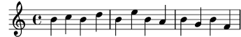
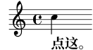
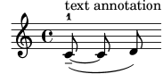

| [Top][Contents][Index] |
LilyPond — 学习手册
|
这份文件介绍了 LilyPond 版本 2.26.0. |
| 1 Installing | Installing LilyPond | |
| 2 教程 | 书写 LilyPond 的基本方法. | |
| 3 Common notation | 常用的记谱法. | |
| 4 Fundamental concepts | 阅读这本手册所需的基本概念. | |
| 5 Tweaking output | 介绍如何修改调整输出. | |
附录 | ||
|---|---|---|
| Appendix A Templates | 现成模板. | |
| Appendix B GNU Free Documentation License | 本文档的使用许可. | |
| Appendix C Index | ||
|
For more information about how this manual fits with the other documentation, or to read this manual in other formats, see Manuals. 如果你需要任何手册，完整的文档可以在 https://lilypond.org/ 找到。 |
| [ << Top ] | [Top][Contents][Index] | [ 教程 >> ] |
| [ < Top ] | [ Up: Top ] | [ Graphical setup > ] |
1 Installing
This gentle, step-by-step installation tutorial guides you through installing LilyPond and creating a first music score.
LilyPond input files are simple text files. You can use any editor for plain text to edit a LilyPond file (do not use editors for rich text such as Microsoft Word), but there are several editors tailored specifically for LilyPond, making the editing process very comfortable. Because a choice has to be made, this tutorial uses Frescobaldi, which is the most popular among such editors right now. However, there are several other options available. For more information, see Easier editing.
Please choose the tutorial according to your needs. (If you don’t know what the “command line” is, you want the graphical setup!)
| 1.1 Graphical setup | ||
| 1.2 Command line setup |
| [ << Installing ] | [Top][Contents][Index] | [ 教程 >> ] |
| [ < Installing ] | [ Up: Installing ] | [ Command line setup > ] |
1.1 Graphical setup
The examples in this section are taken from a GNU/Linux install. Because Frescobaldi is written using cross-platform tools, it will look very much the same, whether on GNU/Linux, Windows, or macOS. The steps required to install a working LilyPond system are also very similar across systems.
First, download the latest release of Frescobaldi from the project’s download page. If you download from another source, please be sure that you are getting at least version 4.0.0, which introduced automatic LilyPond installation.
Choose the bundle appropriate to your operating system: Windows users should simply download and double-click the .msi asset. Users on macOS would do the same with the proper .dmg file. GNU/Linux users may have the latest version in their distribution’s software repository or the Flatpak hub. You will find more information for all platforms on the Frescobaldi install page.

Install Frescobaldi from the bundle you downloaded. It is safe to accept all defaults in the installation process.
Open Frescobaldi. It starts on a new file with some pre-filled text that will be explained later.

Now, verify that Frescobaldi has installed a version of LilyPond, and make note of the version number. Navigate to Frescobaldi preferences, and select “LilyPond Preferences” on the left.

There will be at least one version of LilyPond already installed and ready for use. Make note of the version number for the next step. As new versions of LilyPond are released, simply return to this area, click on “Add”, then select the new version from the dropdown which appears. Fresobaldi then downloads and installs it for you.
To verify the installation, enter the following two lines in the left window, exactly as in this example. Be sure to use your version number.
\version "2.26.0"
{ c' }

Now click on the LilyPond icon or use the Control-M keyboard shortcut. On the right, a simple score appears.

Congratulations, you have just created your first music sheet with LilyPond! If you’re satisfied now, you can skip the rest of this section.
Now turn to 教程 to learn more about LilyPond’s syntax.
| [ << Installing ] | [Top][Contents][Index] | [ 教程 >> ] |
| [ < Graphical setup ] | [ Up: Installing ] | [ 教程 > ] |
1.2 Command line setup
On many GNU/Linux distributions, LilyPond can be installed from the package manager. This is also the case on macOS using either MacPorts or Homebrew.
In any case, you can install LilyPond by downloading the archive from Download and unpacking it. The binaries are usable immediately after unpacking. You can run
/.../lilypond-x.y.z/bin/lilypond file.ly
(on Windows, replace the slashes ‘/’ with backslashes ‘\’).
This compiles file.ly, and produces file.pdf.
To test your setup, you can use this minimal file:
\version "2.26.0"
{ c' }
This will produce this output in file.pdf:
![[image of music]](d1/lily-eec98191.png)
Now continue with the 教程 to learn more about LilyPond’s syntax, or see Command-line usage for more information on calling LilyPond on the command line.
| [ << Installing ] | [Top][Contents][Index] | [ Common notation >> ] |
| [ < Command line setup ] | [ Up: Top ] | [ 编译文件 > ] |
2 教程
这一章是使用 LilyPond 的基本介绍.
| 2.1 编译文件 | ||
| 2.2 如何写输入文件 | ||
| 2.3 处理报错 | ||
| 2.4 如何阅读教程 |
| [ << 教程 ] | [Top][Contents][Index] | [ Common notation >> ] |
| [ < 教程 ] | [ Up: 教程 ] | [ 如何写输入文件 > ] |
2.1 编译文件
这一节介绍了 “编译”—处理你写的 LilyPond 输入文件从而生成输出文件.
“编译” 说的是处理 LilyPond 格式的输入文件从而生成输出文件的过程。输出文件 一般是 PDF 格式（用于打印或直接浏览）、MIDI 格式（用于演奏）、或 PNG 格式（用于在线使用）。LilyPond 的输入文件就是简单的文本文件。
这个例子展示了一个简单的输入文件：
\version "2.26.0"
{
c' e' g' e'
}
图形输出为：
注意：LilyPond 中的注释和歌词总是要用 { 大括号 } 括起来。大括号两侧也要加入空格以避免产生歧义，除非它处于行首或行末。在本教程的某些例子中它们可能被忽略了，但是你打谱的时候不要忘了用大括号！关于本教程中例子展示的更多信息，见 如何写输入文件.
此外，LilyPond 的输入是 大小写敏感的。 ‘{ c d e }’ is 有效输入；‘{ C D E }’ 会报错。
| [ << 教程 ] | [Top][Contents][Index] | [ Common notation >> ] |
| [ < 编译文件 ] | [ Up: 教程 ] | [ 简单记谱法 > ] |
2.2 如何写输入文件
本节将会介绍介绍一些 LilyPond 的基本语法，帮助你开始写输入文件。
| 2.2.1 简单记谱法 | ||
| 2.2.2 处理输入文件 |
| [ << 教程 ] | [Top][Contents][Index] | [ Common notation >> ] |
| [ < 如何写输入文件 ] | [ Up: 如何写输入文件 ] | [ 音高 > ] |
2.2.1 简单记谱法
LilyPond 会自动添加一些记谱元素。下面的例子中，我们只指定了四个音高，但是 LilyPond 已经为我们加上了谱号，拍子记号和节奏。
{ c' e' g' e' }![[image of music]](eb/lily-3e89586f.png)
这些东西都是可以手动更改的，但是大多数情况下这些自动生成的东西十分有用。
| 音高 | ||
| 时值 (节奏) | ||
| 休止符 | ||
| 拍子记号 | ||
| 速度记号 | ||
| 谱号（音部记号） | ||
| 所有的都放在一起 |
| [ << 教程 ] | [Top][Contents][Index] | [ Common notation >> ] |
| [ < 简单记谱法 ] | [ Up: 简单记谱法 ] | [ 时值 (节奏) > ] |
音高
Music Glossary: pitch, interval, scale, middle C, octave, accidental.
LilyPond 用小写字母表示音高。
本节中所有例子中的音名都用荷兰命名系统（对应钢琴上的白键 c-b）. 然而 LilyPond 也支持很多不同的命名方法，比如英语，或者唱名
‘Fixed-Do’ (do-re-mi-...).
See Note names in other languages.
字母 c 到 b 表示 中央 C 下面的一个 ‘小八度’。加上 '
或者 , 的后缀表示高八度或低八度。
下面是一段从 middle C 开始的音阶和琶音：
{ c' d' e' f' g' a' b' c'' g c' e' g' c'' e'' g'' c''' }![[image of music]](e5/lily-15a76cf2.png)
最简单的输入音符的方法是用 \relative （相对）模式.
这个模式中，系统会自动认为下一个音符总是处在与上一个音符最近的那个八度位置上。即它会位于上一个音符的上下三个谱表范围内。我们开始输入一段最基本的音乐，一段 音阶，其中每一个音符都是比上一个音符高一个谱表距离。
\relative { c' d e f g a b c }![[image of music]](57/lily-afddc4de.png)
初始音符是 中央 C，记为 c'.
每一个后继音符都被放在与上一个音符最近的位置上 – 换句话说，第一个
c 是与中央 C 最近的 C。之后是与前面的 C 最近的 D。我们仍然可以使用 \relative 相对模式，写一段音高变化更大的旋律：
\relative { d' f a g c b f d }![[image of music]](07/lily-5a8b9176.png)
前面的例子中，第一个音符 – d' 有一个单引号
' 标记 – 表示处在中央 C 到上面的 B 之间的这个八度中的 D。
通过从第一个音符中添加或移除单引号 ' 或逗号 , 我们可以更改起始的八度。
\relative { e'' c a c }![[image of music]](90/lily-fac32e18.png)
相对模式一开始可能有点乱，但确实是最方便的输入旋律的方法。接下来我们看一下实际应用中相对模式到底如何计算的。从一个高音谱中中间线上的 B 开始，向上可以达到在其上三个谱表距离之内的 C, D, E，向下可以达到在其下三个谱表距离之内的 A, G, F。所以如果 B 后面跟的是 C, D, E，它们就会被默认是在 B 之上的，如果后面跟的是 A, G, F，它们就会被默认是在 B 之下的。
\relative { b' c % c is 1 staff space up, so is the c above b d % d is 2 up or 5 down, so is the d above b e % e is 3 up or 4 down, so is the e above b a % a is 6 up or 1 down, so is the a below b g % g is 5 up or 2 down, so is the g below b f % f is 4 up or 3 down, so is the f below }
不管这些音符是被升了还是降了，结果都是一样的，只取决于其本身在谱子上的位置。变音记号 在计算相对位置时会 完全被忽略掉。 谱表上处于任何位置的谱线之间的距离计算总是等价的。
使音程大于三个谱线距离，我们可以通过加入一个 ' 来对这个音符进一步升高一个 八度；可以通过加入一个逗号 , 来对这个音符进一步降低一个 八度。
\relative { a' a, c' f, g g'' a,, f' }![[image of music]](38/lily-f0bb3690.png)
要改变两个或（或更多!）八度，可以用多个 '' 或 ,, – 但要注意这里是两个单引号 '' 而不是一个双引号 " !
| [ << 教程 ] | [Top][Contents][Index] | [ Common notation >> ] |
| [ < 音高 ] | [ Up: 简单记谱法 ] | [ 休止符 > ] |
时值 (节奏)
音乐术语：beam, duration, whole note, half note, quarter note, dotted note.
一个音符的 时值 由音符后面的数字确定：1 为全音符，2 为半音符，4 为四分音符，以此类推。连音会自动生成.
如果你不指定时值，那么该音符的时值就会和上一个音符一样。第一个音符如果不加声明，则默认为四分音符。
\relative { a'1 a2 a4 a8 a a16 a a a a32 a a a a64 a a a a a a a a2 }![[image of music]](33/lily-3a12ed1c.png)
要写附点音符，只需要在时值数字后面加一个 . 就可以了。浮点音符的点前面必须有数字。
\relative { a'4 a a4. a8 a8. a16 a a8. a8 a4. }![[image of music]](9d/lily-a6d84595.png)
| [ << 教程 ] | [Top][Contents][Index] | [ Common notation >> ] |
| [ < 时值 (节奏) ] | [ Up: 简单记谱法 ] | [ 拍子记号 > ] |
休止符
音乐术语：rest.
休止符用 r 表示：
\relative { a'4 r r2 r8 a r4 r4. r8 }![[image of music]](d8/lily-bb7288ba.png)
| [ << 教程 ] | [Top][Contents][Index] | [ Common notation >> ] |
| [ < 休止符 ] | [ Up: 简单记谱法 ] | [ 速度记号 > ] |
拍子记号
音乐术语：time signature.
拍子记号用 \time 命令设置：
\relative { \time 3/4 a'4 a a \time 6/8 a4. a \time 4/4 a4 a a a }![[image of music]](72/lily-6cddc8e7.png)
| [ << 教程 ] | [Top][Contents][Index] | [ Common notation >> ] |
| [ < 拍子记号 ] | [ Up: 简单记谱法 ] | [ 谱号（音部记号） > ] |
速度记号
音乐术语：tempo indication, metronome.
速度记号和节拍器记号用 \tempo 命令设置：
\relative { \time 3/4 \tempo "Andante" a'4 a a \time 6/8 \tempo 4. = 96 a4. a \time 4/4 \tempo "Presto" 4 = 120 a4 a a a }![[image of music]](81/lily-66d09ee8.png)
| [ << 教程 ] | [Top][Contents][Index] | [ Common notation >> ] |
| [ < 速度记号 ] | [ Up: 简单记谱法 ] | [ 所有的都放在一起 > ] |
谱号（音部记号）
音乐术语：clef.
谱号用 \clef 命令设置：
\relative { \clef "treble" c'1 \clef "alto" c1 \clef "tenor" c1 \clef "bass" c1 }![[image of music]](df/lily-3c964d85.png)
| [ << 教程 ] | [Top][Contents][Index] | [ Common notation >> ] |
| [ < 谱号（音部记号） ] | [ Up: 简单记谱法 ] | [ 处理输入文件 > ] |
所有的都放在一起
下面这个例子把我们现在学过的元素都用上了：
\relative { \clef "bass" \time 3/4 \tempo "Andante" 4 = 120 c,2 e8 c' g'2. f4 e d c4 c, r }![[image of music]](e0/lily-c8bce195.png)
参见
记谱法参考：Writing pitches, Writing rhythms, Writing rests, Time signature, Clef.
| [ << 教程 ] | [Top][Contents][Index] | [ Common notation >> ] |
| [ < 所有的都放在一起 ] | [ Up: 如何写输入文件 ] | [ 处理报错 > ] |
2.2.2 处理输入文件
LilyPond 输入文件和很多编程语言的源文件非常类似。他们都包含版本声明，都是区分大小写的，都会自动忽略掉空格。表达式用大括号 { } 组织，注释用 % 或 %{ … %} 表示。
如果你不理解前面所说的，也没有关系！下面就会一一解释他们的意思：
- 版本声明:
每一个 LilyPond 文件都会带有一个版本声明。版本声明是一行
\version "2.26.0"
依惯例，版本声明会放在 LilyPond 文件的最开头。
版本声明非常重要，原因有二。一是它能够使得 LilyPond 语法更新自动应用在输入文件上。二是它指明了编译这份文件所需的 LilyPond 版本。
如果输入文件中忘记标版本声明了，LilyPond 会在编译文件时给出警告。
- 大小写敏感:
小写 (e.g.
a, b, s, t) 和大写 (e.g.A, B, S, T) 的效果是不一样的。音符都是用小写字母表示的：‘{ c d e }’ 是有效的输入； ‘{ C D E }’ 会报错。 - 空格不敏感:
多少个空格（或制表符或换行）都不重要（不起作用）。下面这三个都是一样的效果：‘{ c4 d e }’，
‘{ c4 d e }’ 和：
{ c4 d e }当然，最后一个写法很不易读。所以最好在一个代码块中加入两个空格（或一个制表符）的缩进：
{ c4 d e }然而，空格是需要用来分隔不同语法元素的。换句话说，空格总可以多加，但不一定能省略。因为缺失必要的空格分隔会导致出现奇怪的错误，所以强烈建议在每一个语法元素前后都加上空格，和前后语法元素隔开；比如每个大括号前后都加上空格。
- 表达式:
每条 LilyPond 输入都需要用
{ 大括号 } 括起来。这些大括号告诉 LilyPond 括号里的输入是一个单独的音乐表达式，就像数学中的小括号
()一样。 这些括号两侧都需要加入空格以避免歧义，除非是在行首或行末。一个 LilyPond 指令后面跟的大括号内的简单表达式（如 ‘
\relative { … }’）也会被视为单一音乐表达式。 -
Comments:
注释是为了让人们读懂音乐输入而写的标记；注释会在语法分析中被忽略掉，所以不会对输出结果产生影响。注释有两种类型：百分号
%是单行注释；该行在%后的内容都会被编译器忽略。依惯例，单行注释都加在要说明的代码之上。a4 a a a % this comment refers to the Bs b2 b
注释块标记表明一大段音乐输入都是注释。所有在
%{和%}之间的内容都会被忽略。然而，注释块不能‘嵌套’。这意味着你不能把注释块放在另一个注释块内。如果你这样尝试的话，第一个%}会终止 这两个注释块。下面是展示可能用到注释块情形：% notes for twinkle twinkle follow c4 c g' g a a g2 %{ This line, and the notes below are ignored, since they are in a block comment. f4 f e e d d c2 %}
| [ << 教程 ] | [Top][Contents][Index] | [ Common notation >> ] |
| [ < 处理输入文件 ] | [ Up: 教程 ] | [ 一般解决问题的方法 > ] |
2.3 处理报错
有时候 LilyPond 没有输出你想要的结果。这一节会为你通过一些链接帮助你解决这些你可能遇到的问题。
| 2.3.1 一般解决问题的方法 | ||
| 2.3.2 常见的错误 |
| [ << 教程 ] | [Top][Contents][Index] | [ Common notation >> ] |
| [ < 处理报错 ] | [ Up: 处理报错 ] | [ 常见的错误 > ] |
2.3.1 一般解决问题的方法
解决 LilyPond 的问题对于熟悉使用图形化交互界面的人来说可能很具有挑战性，因为无效的输入文件可能会被创建。当这种情况发生时，一个符合逻辑的方法就是最好的确定并解决问题的方法。Troubleshooting 中提供了一些指导，可以帮你学会这些方法。
| [ << 教程 ] | [Top][Contents][Index] | [ Common notation >> ] |
| [ < 一般解决问题的方法 ] | [ Up: 处理报错 ] | [ 如何阅读教程 > ] |
2.3.2 常见的错误
有一些常见错误，仅靠显示的简单报错信息也很难解决。这些在 Common errors 中有具体说明。
| [ << 教程 ] | [Top][Contents][Index] | [ Common notation >> ] |
| [ < 常见的错误 ] | [ Up: 教程 ] | [ 忽略掉的内容 > ] |
2.4 如何阅读教程
这一节展示了如何高效阅读文档，并介绍了一些在线版本中有用的交互性特征。
| 2.4.1 忽略掉的内容 | ||
| 2.4.2 可以点开的例子 | ||
| 2.4.3 手册概览 |
| [ << 教程 ] | [Top][Contents][Index] | [ Common notation >> ] |
| [ < 如何阅读教程 ] | [ Up: 如何阅读教程 ] | [ 可以点开的例子 > ] |
2.4.1 忽略掉的内容
LilyPond 必须写在 { } 或 ‘\relative { … }’ 中，正如 处理输入文件 中所说的。教程的后面部分，会涉及一些简短的例子，会忽略掉这种符号。如果你想复制这些例子的话，你可以直接复制这些例子，但需要把它们粘贴在 { 和 } 中。
{
…example goes here…
}
当然，要记住每一个 LilyPond 文件都需要有 \version 声明。由于教程中的例子都是片段而非文件， \version 声明也忽略掉了。但你需要在实际使用中加上这个版本声明。
| [ << 教程 ] | [Top][Contents][Index] | [ Common notation >> ] |
| [ < 忽略掉的内容 ] | [ Up: 如何阅读教程 ] | [ 手册概览 > ] |
2.4.2 可以点开的例子
注意：这一特征只在 HTML 教程中有。
很多人学编程都是通过不断地尝试探索。学 LilyPond 也是一样的。如果你点击 HTML 版本教程的图片，你可以看到生成图片中例子所对应的原始的 LilyPond 输入。试试下面这个图像吧：

复制粘贴 "ly snippet" 部分的内容，得到的是一个用于实验的模板。如果想得到完全一样的输出结果（包括行距等等），就要复制粘贴 "Start cut-&-pastable section" 之后的全部内容。
| [ << 教程 ] | [Top][Contents][Index] | [ Common notation >> ] |
| [ < 可以点开的例子 ] | [ Up: 如何阅读教程 ] | [ Common notation > ] |
2.4.3 手册概览
LilyPond 有很多文档。新用户可能有时候不知道应该阅读哪一部分，并且有时候会跳过重要的部分。
注意：请不用跳过文档中重要的部分。不然你会发现后面的章节会非常难理解。
- 在做 任何事 之前：请阅读 Learning manual’s 教程 和 Common notation。如果你遇到了你不认识的音乐术语，请看 Glossary.
- 在写一段完整音乐之前：阅读学习教程的 Fundamental concepts。之后，你可能会想去看 Notation reference 部分的相关章节。
- 在改变默认输出之前：阅读学习教程 Tweaking output 部分。
- 在做大项目之前: 阅读用户手文档的 Suggestions for writing files 部分。
| [ << 教程 ] | [Top][Contents][Index] | [ Fundamental concepts >> ] |
| [ < 手册概览 ] | [ Up: Top ] | [ Single-staff notation > ] |
3 Common notation
This chapter explains how to create beautifully printed music containing common musical notation. For the most basic steps, see 教程.
| 3.1 Single-staff notation | ||
| 3.2 Multiple notes at once | ||
| 3.3 Songs | ||
| 3.4 Final touches |
| [ << Common notation ] | [Top][Contents][Index] | [ Fundamental concepts >> ] |
| [ < Common notation ] | [ Up: Common notation ] | [ Bar lines and bar checks > ] |
3.1 Single-staff notation
This section introduces common notation that is used for the most basic music: one voice written on one staff.
| [ << Common notation ] | [Top][Contents][Index] | [ Fundamental concepts >> ] |
| [ < Single-staff notation ] | [ Up: Single-staff notation ] | [ Bar lines > ] |
3.1.1 Bar lines and bar checks
| Bar lines | ||
| Bar checks |
| [ << Common notation ] | [Top][Contents][Index] | [ Fundamental concepts >> ] |
| [ < Bar lines and bar checks ] | [ Up: Bar lines and bar checks ] | [ Bar checks > ] |
Bar lines
Single bar lines are automatically placed in the music so there is
no need to add them manually. Other types of bar lines are added
using \bar, for example \bar "||" for a double bar
line, or \bar "|." for an ending bar line. For a full
list of bar lines see Bar lines.
\relative { g'1 e1 \bar "||" c2. c'4 \bar "|." }![[image of music]](b2/lily-fdd64512.png)
| [ << Common notation ] | [Top][Contents][Index] | [ Fundamental concepts >> ] |
| [ < Bar lines ] | [ Up: Bar lines and bar checks ] | [ Pitches and key signatures > ] |
Bar checks
Though not strictly necessary, bar checks should be used in the input code to show where bar lines are expected to fall. They are entered using the bar symbol, ‘|’. With bar checks, the program can verify that you have input durations where each measure adds up to the correct length. Bar checks also make your input code easier to read, since they help keep things organized.
\relative { g'1 | e1 | c2. c' | g4 c g e | c4 r r2 | }![[image of music]](bc/lily-2eccc51c.png)
If you compile the code in the example above, you should see a warning in the console output:
warning: bar check failed at: 1/2
g'1 | e1 | c2. c'
| g4 c g e | c4 r r2 |
Although the missing duration is clear in the musical output in this simple example, the warning in the console output is far more effective in drawing attention to the missing ‘4’ in bar 3.
参见
Notation Reference: Bar and bar number checks.
| [ << Common notation ] | [Top][Contents][Index] | [ Fundamental concepts >> ] |
| [ < Bar checks ] | [ Up: Single-staff notation ] | [ Pitch alterations > ] |
3.1.2 Pitches and key signatures
注意：New users often misunderstand how LilyPond uses the key signature – please read the warning at the end of this section.
| Pitch alterations | ||
| Key signatures | ||
| Warning: key signatures and pitches |
| [ << Common notation ] | [Top][Contents][Index] | [ Fundamental concepts >> ] |
| [ < Pitches and key signatures ] | [ Up: Pitches and key signatures ] | [ Key signatures > ] |
Pitch alterations
Music Glossary: sharp, flat, double sharp, double flat, accidental.
Note names in LilyPond identify pitches. For example, ‘c’ always means C-natural, regardless of the key signature.
In many languages, a note name consists of a base name referring to the diatonic steps of the C major/a minor scale (for example, ‘d’) and a suffix, which indicates alteration of this base pitch. The default input language for note names is ‘nederlands’ (Dutch). A sharp pitch is made by adding ‘is’ to the name, and a flat pitch by adding ‘es’. As you might expect, a double sharp or double flat is made by adding ‘isis’ or ‘eses’. This syntax is derived from note naming conventions in Nordic and Germanic languages, like German and Dutch. To use other naming schemes for note names, see Note names in other languages.
\relative { cis''4 ees fisis, aeses }![[image of music]](f6/lily-c6b13f9e.png)
| [ << Common notation ] | [Top][Contents][Index] | [ Fundamental concepts >> ] |
| [ < Pitch alterations ] | [ Up: Pitches and key signatures ] | [ Warning: key signatures and pitches > ] |
Key signatures
Music Glossary: key signature, major, minor.
The key signature is set with the command \key
followed by a pitch and \major or \minor.
\relative { \key d \major d'4 fis a c | \bar "||" \key c \minor c,4 ees g b | }![[image of music]](a8/lily-3449e359.png)
| [ << Common notation ] | [Top][Contents][Index] | [ Fundamental concepts >> ] |
| [ < Key signatures ] | [ Up: Pitches and key signatures ] | [ Ties and slurs > ] |
Warning: key signatures and pitches
Music Glossary: accidental, key signature, pitch, flat, natural, sharp, transposition, Pitch names.
LilyPond makes a distinction between musical content and its printed representation. Input such as ‘d4 e fis2’ defines the pitches and durations of notes, which is musical content. The key signature is part of the printed representation. The key signature also sets rules for the printed representations of notes. LilyPond compares each input pitch to the key signature to determine whether to print an accidental.
The command \key sets the key signature, which
affects the printed representation, but does not change the
pitch assigned to a note such as ‘c’ in the input.
Consider this example.
\relative { \key d \major cis''4 d e fis }![[image of music]](a5/lily-8443995d.png)
No note has a printed accidental, but you must still add ‘is’ and type ‘cis’ and ‘fis’ in the input file.
The code ‘b’ does not mean “print a thick black dot just on the middle line of the staff”. Rather, it means “there is a note with pitch B-natural”. In the key of A-flat major, it does get an accidental:
\relative { \key aes \major aes'4 c b c }![[image of music]](0f/lily-38628f86.png)
To say it differently: Whenever you enter a pitch that is a black key on the piano, you must add ‘is’ or ‘es’ to the note name.
Adding all alterations explicitly might require a little more effort when typing, but the advantage is that transposing is easier, and accidentals can be printed according to different conventions. For some examples of how accidentals can be printed according to different rules, see Automatic accidentals.
参见
Notation Reference: Note names in other languages, Accidentals, Automatic accidentals, Key signature.
| [ << Common notation ] | [Top][Contents][Index] | [ Fundamental concepts >> ] |
| [ < Warning: key signatures and pitches ] | [ Up: Single-staff notation ] | [ Ties > ] |
3.1.3 Ties and slurs
Because of the similar optical appearance, we introduce ties and slurs in the same section.
| Ties | ||
| Slurs | ||
| Phrasing slurs | ||
| Warnings: slurs vs. ties |
| [ << Common notation ] | [Top][Contents][Index] | [ Fundamental concepts >> ] |
| [ < Ties and slurs ] | [ Up: Ties and slurs ] | [ Slurs > ] |
Ties
Music Glossary: tie.
A tie is created by appending a tilde ‘~’ to the first of the two notes being tied.
\relative { g'4~ g c2~ | c4~ c8 a~ a2 | }![[image of music]](78/lily-580b26d5.png)
When the pitch does not change, as is always the case with tied notes, subsequent pitches may be omitted, specifying just the bare duration:
\relative { g'4~ 4 c2~ | 4~ 8 a~ 2 | }![[image of music]](bb/lily-1c638c8f.png)
This shorthand may be useful in other places where the rhythm changes with an unchanging pitch, but remember that a bare pitch followed by a space and a bare duration will be interpreted as a single note. In other words, ‘c4 a 8 8’ would be interpreted as ‘c4 a8 a8’, not as ‘c4 a4 a8 a8’. Write ‘c4 a4 8 8’ instead.
| [ << Common notation ] | [Top][Contents][Index] | [ Fundamental concepts >> ] |
| [ < Ties ] | [ Up: Ties and slurs ] | [ Phrasing slurs > ] |
Slurs
Music Glossary: slur.
A slur is a curve drawn across many notes. The starting note and ending note are marked with ‘(’ and ‘)’, respectively. Note that ‘(’ comes after the first note of the slur.
\relative { d''4( c16) cis( d e c cis d) e( d4) }![[image of music]](13/lily-1b87b9d4.png)
| [ << Common notation ] | [Top][Contents][Index] | [ Fundamental concepts >> ] |
| [ < Slurs ] | [ Up: Ties and slurs ] | [ Warnings: slurs vs. ties > ] |
Phrasing slurs
Music Glossary: slur, phrasing.
Slurs to indicate longer phrasing can be entered with
\( and \). You can have both slurs and phrasing
slurs at the same time.
\relative { g'4\( g8( a) b( c) b4\) }![[image of music]](49/lily-ac61a4c6.png)
| [ << Common notation ] | [Top][Contents][Index] | [ Fundamental concepts >> ] |
| [ < Phrasing slurs ] | [ Up: Ties and slurs ] | [ Articulations and dynamics > ] |
Warnings: slurs vs. ties
Music Glossary: articulation, slur, tie.
A slur looks like a tie, but it has a different meaning. A tie simply makes the first note longer, and can only be used on pairs of notes with the same pitch. Slurs indicate the articulation of notes, and can be used on larger groups of notes. Slurs and ties can be nested.
\relative { c''4(~ c8 d~ 4 e) }![[image of music]](86/lily-2660565d.png)
参见
Notation Reference: Ties, Slurs, Phrasing slurs.
| [ << Common notation ] | [Top][Contents][Index] | [ Fundamental concepts >> ] |
| [ < Warnings: slurs vs. ties ] | [ Up: Single-staff notation ] | [ Articulations > ] |
3.1.4 Articulations and dynamics
Articulations and dynamics are indicated by adding special codes after the notes to which they apply.
| Articulations | ||
| Fingerings | ||
| Dynamics |
| [ << Common notation ] | [Top][Contents][Index] | [ Fundamental concepts >> ] |
| [ < Articulations and dynamics ] | [ Up: Articulations and dynamics ] | [ Fingerings > ] |
Articulations
Music Glossary: articulation.
Common articulations can be added to a note using a dash (‘-’) followed by a single character. Here is a small table of the most important articulations.
-^a marcato (an upward-pointing wedge) --a tenuto (a short horizontal line) ->an accent (a right-pointing wedge) -.a staccato dot -_a portato (i.e., a tenuto line combined with a staccato dot)
See List of articulations for an exhaustive list.
\relative { c''4-^ c-- c4-> c-. c2-_ }![[image of music]](76/lily-2d871c24.png)
| [ << Common notation ] | [Top][Contents][Index] | [ Fundamental concepts >> ] |
| [ < Articulations ] | [ Up: Articulations and dynamics ] | [ Dynamics > ] |
Fingerings
Music Glossary: fingering.
Similarly to articulations, fingering indications can be added to a note using a dash (‘-’) followed by the digit to be printed:
\relative { c''4-3 e-5 b-2 a-1 }![[image of music]](15/lily-9c631223.png)
Articulations and fingerings are usually placed automatically, but you can specify a direction by replacing the dash (‘-’) with ‘^’ (up) or ‘_’ (down). You can also use multiple articulations on the same note. However, in most cases it is best to let LilyPond determine the articulation directions.
\relative { c''4_-^1 d^. f^4_2-> e^-_+ }![[image of music]](c9/lily-b330b4a5.png)
| [ << Common notation ] | [Top][Contents][Index] | [ Fundamental concepts >> ] |
| [ < Fingerings ] | [ Up: Articulations and dynamics ] | [ Adding text > ] |
Dynamics
Music Glossary: dynamics, crescendo, decrescendo.
Dynamic signs are made by adding the markings (with a backslash) to the note:
\relative { c''2\ff c\mf c\p c\pp }![[image of music]](4b/lily-7850c9ed.png)
Crescendi and decrescendi are started with
the commands \< and \>. The next dynamics sign, for
example \f, ends the (de)crescendo, or the command
\! can be used:
\relative { c''2\< c | c4\ff\> c c c\! }![[image of music]](04/lily-3b1293c0.png)
参见
Notation Reference: Articulations and ornamentations, Fingering instructions, Dynamics.
| [ << Common notation ] | [Top][Contents][Index] | [ Fundamental concepts >> ] |
| [ < Dynamics ] | [ Up: Single-staff notation ] | [ Automatic and manual beams > ] |
3.1.5 Adding text
Text may be added to your scores:
\relative { c''2^"espr" a_"legato" }![[image of music]](64/lily-db1c7358.png)
Extra formatting may be added with the \markup
command:1
\relative { c''2^\markup { \bold espr } a2_\markup { \dynamic f \italic \small { 2nd } \hspace #0.1 \dynamic p } }![[image of music]](dd/lily-f7cc7a98.png)
参见
Notation Reference: Writing text.
| [ << Common notation ] | [Top][Contents][Index] | [ Fundamental concepts >> ] |
| [ < Adding text ] | [ Up: Single-staff notation ] | [ Advanced rhythmic commands > ] |
3.1.6 Automatic and manual beams
Music Glossary: beam.
All beams are drawn automatically:
\relative { a'8 ais d ees r d c16 b a8 }![[image of music]](c3/lily-f5369027.png)
If you do not like the automatic beams, they may be overridden manually. To correct just an occasional beam mark the first note to be beamed with ‘[’ and the last one with ‘]’. Note that ‘[’ comes after the first beamed note.
\relative { a'8[ ais] d[ ees r d] c16 b a8 }![[image of music]](2c/lily-88e7d366.png)
If you want to turn off automatic beaming entirely or for an
extended section of music, use the command \autoBeamOff
to turn off automatic beaming and \autoBeamOn to turn it
on again.
\relative { \autoBeamOff a'8 c b4 d8. c16 b4 | \autoBeamOn a8 c b4 d8. c16 b4 | }![[image of music]](1b/lily-bc157bd7.png)
参见
Notation Reference: Automatic beams, Manual beams.
| [ << Common notation ] | [Top][Contents][Index] | [ Fundamental concepts >> ] |
| [ < Automatic and manual beams ] | [ Up: Single-staff notation ] | [ Partial measure > ] |
3.1.7 Advanced rhythmic commands
We have to extend simple durations (i.e., numbers appended to pitches, with or without trailing dots) with more concepts to cover a broader range of rhythmic input.
| Partial measure | ||
| Tuplets | ||
| Grace notes |
| [ << Common notation ] | [Top][Contents][Index] | [ Fundamental concepts >> ] |
| [ < Advanced rhythmic commands ] | [ Up: Advanced rhythmic commands ] | [ Tuplets > ] |
Partial measure
Music Glossary: anacrusis.
A pickup (or anacrusis) is entered with the keyword
\partial. It is followed by a duration: ‘\partial 4’
is a quarter note pickup and ‘\partial 8’ an eighth note.
\relative { \partial 8 f''8 | c2 d | }![[image of music]](22/lily-7141ef1d.png)
| [ << Common notation ] | [Top][Contents][Index] | [ Fundamental concepts >> ] |
| [ < Partial measure ] | [ Up: Advanced rhythmic commands ] | [ Grace notes > ] |
Tuplets
Music Glossary: note value, triplet.
Tuplets are made with the \tuplet keyword. It
takes two arguments: a fraction and a piece of music. The
fraction is the number of tuplet notes over the number
of notes normally filling the same duration.
For triplets, there are three notes instead of two, so
triplets have 3/2 as their fraction.
\relative { \tuplet 3/2 { f''8 g a } \tuplet 3/2 { c8 r c } \tuplet 3/2 { f,8 g16[ a g a] } \tuplet 3/2 { d4 a8 } }![[image of music]](8d/lily-62792834.png)
| [ << Common notation ] | [Top][Contents][Index] | [ Fundamental concepts >> ] |
| [ < Tuplets ] | [ Up: Advanced rhythmic commands ] | [ Multiple notes at once > ] |
Grace notes
Music Glossary: grace notes, acciaccatura, appoggiatura.
Grace notes are created with the \grace command,
although they can also be created by prefixing a music expression
with the keyword \appoggiatura (a grace note with a slur to
its main note) or \acciaccatura (a slashed grace note with
a slur to its main note):
\relative { c''2 \grace { a32 b } c2 | c2 \appoggiatura b16 c2 | c2 \acciaccatura b16 c2 | }![[image of music]](1c/lily-5a2d6dd9.png)
参见
Notation Reference: Grace notes, Tuplets, Upbeats.
| [ << Common notation ] | [Top][Contents][Index] | [ Fundamental concepts >> ] |
| [ < Grace notes ] | [ Up: Common notation ] | [ Music expressions explained > ] |
3.2 Multiple notes at once
This section introduces notation having more than one note at the same time: multiple instruments, multiple staves for a single instrument (such as the piano), and chords.
Polyphony in music refers to having more than one voice occurring in a piece of music. Polyphony in LilyPond refers to having more than one voice on the same staff.
| 3.2.1 Music expressions explained | ||
| 3.2.2 Multiple staves | ||
| 3.2.3 Staff groups | ||
| 3.2.4 Combining notes into chords | ||
| 3.2.5 Single-staff polyphony |
| [ << Common notation ] | [Top][Contents][Index] | [ Fundamental concepts >> ] |
| [ < Multiple notes at once ] | [ Up: Multiple notes at once ] | [ Analogy: mathematical expressions > ] |
3.2.1 Music expressions explained
In LilyPond input files, music is represented by music expressions. A single note is a music expression:
a'4![[image of music]](89/lily-9110be04.png)
Enclosing music in braces creates a compound music expression. Here we have created a compound music expression with two notes:
\relative { a'4 g4 }![[image of music]](44/lily-348b91cf.png)
Putting a group of music expressions (e.g., notes) in braces means that they are in sequence (i.e., each one follows the previous one). The result is another music expression:
\relative { { a'4 g } f4 g }![[image of music]](be/lily-fee0e1b2.png)
| Analogy: mathematical expressions | ||
| Simultaneous music expressions: multiple staves | ||
| Simultaneous music expressions: single-staff |
| [ << Common notation ] | [Top][Contents][Index] | [ Fundamental concepts >> ] |
| [ < Music expressions explained ] | [ Up: Music expressions explained ] | [ Simultaneous music expressions: multiple staves > ] |
Analogy: mathematical expressions
This mechanism is similar to mathematical formulas: a big formula is created by composing small formulas. Such formulas are called expressions, and they can contain other expressions, so you can make arbitrarily complex and large expressions. For example,
1 1 + 2 (1 + 2) * 3 ((1 + 2) * 3) / (4 * 5)
This is a sequence of expressions, where each expression is contained in the next (larger) one. The simplest expressions are numbers, and larger ones are made by combining expressions with operators (like +, *, and /) and parentheses. Like mathematical expressions, music expressions can be nested arbitrarily deep, which is necessary for complex music like polyphonic scores.
| [ << Common notation ] | [Top][Contents][Index] | [ Fundamental concepts >> ] |
| [ < Analogy: mathematical expressions ] | [ Up: Music expressions explained ] | [ Simultaneous music expressions: single-staff > ] |
Simultaneous music expressions: multiple staves
Music Glossary: polyphony.
This technique is useful for polyphonic music. To
enter music with more voices or more staves, we combine
expressions in parallel. To indicate that two voices should play
at the same time, simply enter a simultaneous combination of music
expressions. A ‘simultaneous’ music expression is formed by
enclosing expressions inside << and >>. In the
following example, three sequences (all containing two separate
notes) are combined simultaneously:
<< \relative { a'2 g } \relative { f'2 e } \relative { d'2 b } >>![[image of music]](c4/lily-89a38849.png)
Note that we have indented each level of the input with a different amount of space. LilyPond does not care how much (or little) space there is at the beginning of a line, but indenting LilyPond code like this makes it much easier for humans to read.
注意：Each note is relative to the previous note in the input;
the first one in a \relative block is relative to ‘c’
(one octave below the middle C).
| [ << Common notation ] | [Top][Contents][Index] | [ Fundamental concepts >> ] |
| [ < Simultaneous music expressions: multiple staves ] | [ Up: Music expressions explained ] | [ Multiple staves > ] |
Simultaneous music expressions: single-staff
To determine the number of staves in a piece, LilyPond looks at the beginning of the first expression. If there is a single note, there is one staff; if there is a simultaneous expression, there is more than one staff. The following example shows a complex expression, but as it begins with a single note it will be set out on a single staff.
\relative { c''2 <<c e>> | << { e2 f } { c2 <<b d>> } >> | }![[image of music]](01/lily-665622d9.png)
| [ << Common notation ] | [Top][Contents][Index] | [ Fundamental concepts >> ] |
| [ < Simultaneous music expressions: single-staff ] | [ Up: Multiple notes at once ] | [ Staff groups > ] |
3.2.2 Multiple staves
LilyPond input files are constructed out of music expressions (see Music expressions explained). If the score begins with simultaneous music expressions, LilyPond creates multiples staves. However, it is easier to see what happens if we create each staff explicitly.
To print more than one staff, each piece of music that makes up a
staff is marked by adding \new Staff before it. These
Staff elements are then combined in parallel with <<
and >>:
<< \new Staff { \clef treble c''4 } \new Staff { \clef bass c4 } >>![[image of music]](cb/lily-ae851a45.png)
The command \new introduces a notation context. A
notation context is an environment in which musical events (like
notes or \clef commands) are interpreted. For simple
pieces, such notation contexts are created automatically. For
more complex pieces, it is best to mark contexts explicitly.
There are several types of contexts. The most important ones are
Score, Staff, and Voice, which handle melodic
notation, while Lyrics sets lyric texts and
ChordNames prints chord names.
In terms of syntax, prepending \new to a music expression
creates a bigger music expression. In this way it resembles the
minus sign in mathematics. The formula (4+5) is an
expression, so -(4+5) is a bigger expression.
Time signatures entered in one staff affect all other staves by default. On the other hand, the key signature of one staff does not affect other staves. This different default behavior is because scores with transposing instruments are more common than polyrhythmic scores.
<< \new Staff { \clef treble \key d \major \time 3/4 c''4 } \new Staff { \clef bass c4 } >>![[image of music]](8e/lily-c8f11f58.png)
| [ << Common notation ] | [Top][Contents][Index] | [ Fundamental concepts >> ] |
| [ < Multiple staves ] | [ Up: Multiple notes at once ] | [ Combining notes into chords > ] |
3.2.3 Staff groups
Music Glossary: brace, staff, system.
Piano music is typeset in two staves connected by a
brace. Printing such a staff is similar to polyphonic
music in multiple staves (see Multiple staves). However, now
this entire expression is inserted into a PianoStaff
context:
\new PianoStaff << \new Staff … \new Staff … >>
Here is a small example.
\new PianoStaff << \new Staff \relative { \time 2/4 c''4 e | g g, | } \new Staff \relative { \clef bass c4 c' | e c | } >>![[image of music]](79/lily-d4aee0ae.png)
Other staff groupings are introduced with \new GrandStaff,
suitable for orchestral scores, and \new ChoirStaff,
suitable for vocal scores. These staff groups each form another
type of context, one that generates the brace at the left side of
every system and also controls the vertical extent of bar lines.
参见
Notation Reference: Keyboard and other multi-staff instruments, Displaying staves.
| [ << Common notation ] | [Top][Contents][Index] | [ Fundamental concepts >> ] |
| [ < Staff groups ] | [ Up: Multiple notes at once ] | [ Single-staff polyphony > ] |
3.2.4 Combining notes into chords
Music Glossary: chord.
We saw earlier how notes can be combined into chords: by enclosing them in double angle brackets we indicated that they are simultaneous. However, the normal way of producing a chord is to surround the pitches with single angle brackets. Note that all notes in a chord must have the same duration, and that the duration is placed after the closing bracket.
\relative { r4 <c'' e g> <c f a>2 }![[image of music]](90/lily-610bc6f9.png)
Think of chords as almost equivalent to single notes: virtually everything you can attach to a single note can be attached to a chord, and usually these attachments must be put outside the angle brackets. For example, you can combine markings like beams and ties with chords.
\relative { r4 <c'' e g>~ <c f a>2 | <c e g>8[ <c f a> <c e g> <c f a>] <c e g>8\>[ <c f a> q q]\! | r4 <c e g>8.\p q16( q4-. <c f a>) | }![[image of music]](a4/lily-b999df29.png)
The above example also demonstrates a very useful feature: a chord can be repeated by using the symbol ‘q’. This even works with interspersed single notes.
\relative { c'8 <e g>8 q q g, q q q }![[image of music]](21/lily-8c610730.png)
参见
Notation Reference: Chorded notes.
| [ << Common notation ] | [Top][Contents][Index] | [ Fundamental concepts >> ] |
| [ < Combining notes into chords ] | [ Up: Multiple notes at once ] | [ Songs > ] |
3.2.5 Single-staff polyphony
Polyphonic music in LilyPond, while not difficult, uses concepts that we have not discussed yet, so we are not going to introduce them here. Instead, the following sections establish the basics of these concepts and explain them thoroughly.
参见
Learning Manual: Voices contain music.
Notation Reference: Simultaneous notes.
| [ << Common notation ] | [Top][Contents][Index] | [ Fundamental concepts >> ] |
| [ < Single-staff polyphony ] | [ Up: Common notation ] | [ Setting simple songs > ] |
3.3 Songs
This section introduces vocal music and simple song sheets.
| 3.3.1 Setting simple songs | ||
| 3.3.2 Aligning lyrics to a melody | ||
| 3.3.3 Lyrics to multiple staves |
| [ << Common notation ] | [Top][Contents][Index] | [ Fundamental concepts >> ] |
| [ < Songs ] | [ Up: Songs ] | [ Aligning lyrics to a melody > ] |
3.3.1 Setting simple songs
Music Glossary: lyrics.
Here is the start of the melody to a nursery rhyme, Girls and boys come out to play.
\relative { \key g \major \time 6/8 d''4 b8 c4 a8 | d4 b8 g4 }![[image of music]](e9/lily-7384468c.png)
The lyrics can be set to these notes, combining both
with the \addlyrics keyword. Lyrics are entered by
separating each syllable with a space.
<< \relative { \key g \major \time 6/8 d''4 b8 c4 a8 | d4 b8 g4 } \addlyrics { Girls and boys come out to play, } >>![[image of music]](de/lily-a2b07153.png)
Note the double angle brackets << … >>
around the whole piece to show that the music and lyrics are to
occur at the same time.
| [ << Common notation ] | [Top][Contents][Index] | [ Fundamental concepts >> ] |
| [ < Setting simple songs ] | [ Up: Songs ] | [ Lyrics to multiple staves > ] |
3.3.2 Aligning lyrics to a melody
Music Glossary: melisma, extender line.
The next line in the nursery rhyme is The moon doth shine as bright as day. Let’s extend it:
<< \relative { \key g \major \time 6/8 d''4 b8 c4 a8 | d4 b8 g4 g8 | a4 b8 c b a | d4 b8 g4. | } \addlyrics { Girls and boys come out to play, The moon doth shine as bright as day; } >>![[image of music]](b1/lily-3cb061cd.png)
Looking at the music, we see that the extra lyrics do not align properly with the notes. The word shine should be sung on two notes, not one. This is called a melisma, a single syllable sung to more than one note. There are several ways to spread a syllable over multiple notes, the simplest being to add a slur across them. See Ties and slurs, for more information.
<< \relative { \key g \major \time 6/8 d''4 b8 c4 a8 | d4 b8 g4 g8 | a4 b8 c( b) a | d4 b8 g4. | } \addlyrics { Girls and boys come out to play, The moon doth shine as bright as day; } >>![[image of music]](d8/lily-e7df2761.png)
The words now line up correctly with the notes, but the automatic beaming for the notes above shine as does not look right. We can correct this by inserting manual beaming commands to override the automatic beaming here. See Automatic and manual beams, for more information.
<< \relative { \key g \major \time 6/8 d''4 b8 c4 a8 | d4 b8 g4 g8 | a4 b8 c([ b]) a | d4 b8 g4. | } \addlyrics { Girls and boys come out to play, The moon doth shine as bright as day; } >>![[image of music]](e4/lily-ea02f2b5.png)
As an alternative to using slurs, melismata may be indicated in just the lyrics by using an underscore ‘_’ for each note that should be included in the melisma.
<< \relative { \key g \major \time 6/8 d''4 b8 c4 a8 | d4 b8 g4 g8 | a4 b8 c[ b] a | d4 b8 g4. | } \addlyrics { Girls and boys come out to play, The moon doth shine _ as bright as day; } >>![[image of music]](b1/lily-d7ddaa70.png)
If a syllable extends over several notes or a single very long
note an extender line is usually drawn from the
syllable extending under all the notes for that syllable. It is
entered as two underscores (__). It is important that the
underscores are separated with one or more spaces from the
preceding (and following) syllable.
Here is an example from the first three bars of Dido’s Lament, from Purcell’s opera Dido and Æneas:
<< \relative { \key g \minor \time 3/2 g'2 a bes | bes2( a) b2 | c4.( bes8 a4. g8 fis4.) g8 | fis1 } \addlyrics { When I am laid, am laid __ in earth, } >>![[image of music]](e5/lily-cba458ef.png)
None of the examples so far have involved words containing more
than one syllable. Such words are usually split one syllable to a
note, with hyphens between syllables. Such hyphens are entered as
two consecutive dashes (--), resulting in a centered hyphen
between the syllables. It is important that the dashes are
separated with one or more spaces from the preceding and following
syllable.
Here is an example showing this and everything we have learned so far about aligning lyrics to notes.
<< \relative { \key g \major \time 3/4 \partial 4 d'4 | g4 g a8( b) | g4 g b8( c) | d4 d e | c2 } \addlyrics { A -- way in a __ man -- ger, no __ crib for a bed, } >>![[image of music]](4a/lily-a89debcd.png)
Some lyrics, especially those in Italian, require the opposite: setting more than one syllable to a single note. This is achieved by linking the syllables together with a single underscore (‘_’, with no spaces), or enclosing them in quotes. Here is an example from Rossini’s opera Il barbiere di Siviglia, where al has to be sung on the same note as the go of Largo in Figaro’s aria Largo al factotum:
<< \relative { \clef bass \key c \major \time 6/8 c'4.~ 8 d b | c8([ d]) b c d b | c8 } \addlyrics { Lar -- go_al fac -- to -- tum del -- la cit -- tà } >>![[image of music]](cc/lily-e7345c33.png)
参见
Notation Reference: Vocal music.
| [ << Common notation ] | [Top][Contents][Index] | [ Fundamental concepts >> ] |
| [ < Aligning lyrics to a melody ] | [ Up: Songs ] | [ Final touches > ] |
3.3.3 Lyrics to multiple staves
The simple approach using \addlyrics can be used for
placing lyrics under more than one staff. Here is an example from
Handel’s oratorio Judas Maccabæus.
<< \relative { \key f \major \time 6/8 \partial 8 c''8 | c8([ bes]) a a([ g]) f | f'4. b, | c4.~ 4 } \addlyrics { Let flee -- cy flocks the hills a -- dorn, __ } \relative { \key f \major \time 6/8 \partial 8 r8 | r4. r4 c'8 | a'8([ g]) f f([ e]) d | e8([ d]) c bes'4 } \addlyrics { Let flee -- cy flocks the hills a -- dorn, } >>![[image of music]](ee/lily-f9ae663e.png)
Scores any more complex than this simple example are better produced by separating out the score structure from the notes and lyrics with variables. See Organizing pieces with variables, for an introduction.
参见
Notation Reference: Vocal music.
| [ << Common notation ] | [Top][Contents][Index] | [ Fundamental concepts >> ] |
| [ < Lyrics to multiple staves ] | [ Up: Common notation ] | [ Organizing pieces with variables > ] |
3.4 Final touches
This is the final section of the tutorial; it demonstrates how to add the final touches to simple pieces, and provides an introduction to the rest of the manual.
| 3.4.1 Organizing pieces with variables | ||
| 3.4.2 Adding titles | ||
| 3.4.3 Absolute note names | ||
| 3.4.4 After the tutorial |
| [ << Common notation ] | [Top][Contents][Index] | [ Fundamental concepts >> ] |
| [ < Final touches ] | [ Up: Final touches ] | [ Adding titles > ] |
3.4.1 Organizing pieces with variables
When all of the elements discussed earlier are combined to produce larger files, the music expressions get a lot bigger. In polyphonic music with many staves, the input files can become very confusing. We can reduce this confusion by using variables.
With variables (also known as identifiers or macros), we can break up complex music expressions. A variable is assigned as follows:
namedMusic = { … }
The contents of the music expression namedMusic can be used
later by placing a backslash in front of the name
(\namedMusic), just like a normal LilyPond command.
Violin = \new Staff { \relative { a'4 b c b } } Cello = \new Staff { \relative { \clef bass e2 d } } { << \Violin \Cello >> }![[image of music]](91/lily-6c0e61bd.png)
By convention, variable names consist of alphabetic characters only. For detailed information, see File structure.
Variables must be defined before the main music expression, but may be used as many times as required anywhere after they have been defined. They may even be used in a later definition of another variable, giving a way of shortening the input if a section of music is repeated many times.
tripletA = \relative { \tuplet 3/2 { c'8 e g } } barA = { \tripletA \tripletA \tripletA \tripletA } { \barA \barA }![[image of music]](c0/lily-6e33edd3.png)
Variables may be used for many other types of objects in the input. For example,
myWidth = 60 % a number to pass to a \paper variable
% (the unit is millimeter)
myName = "Wendy" % a string to pass to a markup
aFivePaper = \paper { #(set-paper-size "a5") }
Depending on its contents, the variable can be used in different places. The following example uses the above variables:
\paper {
\aFivePaper
line-width = \myWidth
}
{
c4^\myName
}
| [ << Common notation ] | [Top][Contents][Index] | [ Fundamental concepts >> ] |
| [ < Organizing pieces with variables ] | [ Up: Final touches ] | [ Absolute note names > ] |
3.4.2 Adding titles
The title, composer, opus number, and similar information are
entered in the \header block. This exists outside of the
main music expression; the \header block is usually placed
underneath the version number.
\version "2.26.0"
\header {
title = "Symphony"
composer = "Me"
opus = "Op. 9"
}
{
… music …
}
When the file is processed, the title and composer are printed above the music. More information on titling can be found in Creating titles headers and footers.
| [ << Common notation ] | [Top][Contents][Index] | [ Fundamental concepts >> ] |
| [ < Adding titles ] | [ Up: Final touches ] | [ After the tutorial > ] |
3.4.3 Absolute note names
So far we have used \relative to define pitches.
This is usually the fastest way to enter most music. Without
\relative, pitches are interpreted in absolute mode.
In this mode, LilyPond treats all pitches as absolute values: a ‘c'’ always means middle C, a ‘b’ always means the note one step below middle C, and a ‘g,’ always means the note on the bottom line of a staff with a bass clef.
{ \clef bass c'4 b g, g, | g,4 f, f c' | }![[image of music]](7e/lily-7d8ea0e9.png)
Writing a melody in the treble clef involves a lot of quote ‘'’ marks. Consider this fragment from Mozart:
{ \key a \major \time 6/8 cis''8. d''16 cis''8 e''4 e''8 | b'8. cis''16 b'8 d''4 d''8 | }![[image of music]](92/lily-d90fc61e.png)
Common octave marks can be indicated just once, using the command
\fixed followed by a reference pitch:
\fixed c'' { \key a \major \time 6/8 cis8. d16 cis8 e4 e8 | b,8. cis16 b,8 d4 d8 | }![[image of music]](00/lily-f8cb751b.png)
With \relative, the previous example needs no octave marks
because this melody moves in steps no larger than three staff positions:
\relative { \key a \major \time 6/8 cis''8. d16 cis8 e4 e8 | b8. cis16 b8 d4 d8 | }![[image of music]](ac/lily-049ba55d.png)
If you make a mistake with an octave mark (‘'’ or ‘,’)
while working in \relative mode, it is very obvious – many
notes will be in the wrong octave. When working in absolute mode,
a single mistake will not be as visible, and will not be as easy
to find.
However, absolute mode is useful for music with large intervals, and is extremely useful for computer-generated LilyPond files. When cutting and pasting melody fragments, absolute mode preserves the original octave.
See Relative octave entry for more complex situations.
| [ << Common notation ] | [Top][Contents][Index] | [ Fundamental concepts >> ] |
| [ < Absolute note names ] | [ Up: Final touches ] | [ Fundamental concepts > ] |
3.4.4 After the tutorial
After finishing the tutorial, you should probably try writing a piece or two. Start by adding notes to one of the templates (see Templates). If you need any notation that was not covered in the tutorial, look at the Notation Reference, starting with Musical notation. If you want to write for an instrument ensemble that is not covered in the templates, see Extending the templates.
Once you have written a few short pieces, read the rest of the Learning Manual (chapters 3–5). There’s nothing wrong with reading it now, of course! However, the rest of the Learning Manual assumes that you are familiar with LilyPond input. You may wish to skim these chapters right now, and come back to them after you have more experience.
In this tutorial and in the rest of the Learning Manual, there is a paragraph See also at the end of each section, which contains cross references to other sections: you should not follow these cross references at first reading; when you have read all of the Learning Manual, you may want to read some sections again and follow cross references for further reading.
If you have not done so already, please read 手册概览. There is a lot of information about LilyPond, so newcomers often do not know where they should look for help. If you spend five minutes reading that section carefully, you might save yourself hours of frustration looking in the wrong places!
| [ << Common notation ] | [Top][Contents][Index] | [ Tweaking output >> ] |
| [ < After the tutorial ] | [ Up: Top ] | [ How LilyPond input files work > ] |
4 Fundamental concepts
You’ve seen in the Tutorial how to produce beautifully printed music from a simple text file. This section introduces the concepts and techniques required to produce equally beautiful but more complex scores.
| 4.1 How LilyPond input files work | ||
| 4.2 Voices contain music | ||
| 4.3 Contexts and engravers | ||
| 4.4 Extending the templates |
| [ << Fundamental concepts ] | [Top][Contents][Index] | [ Tweaking output >> ] |
| [ < Fundamental concepts ] | [ Up: Fundamental concepts ] | [ Introduction to the LilyPond file structure > ] |
4.1 How LilyPond input files work
The LilyPond input format is quite free-form, giving experienced users a lot of flexibility to structure their files however they wish. But this flexibility can make things confusing for new users. This section will explain some of this structure, but may gloss over some details in favor of simplicity. For a complete description of the input format, see File structure.
| [ << Fundamental concepts ] | [Top][Contents][Index] | [ Tweaking output >> ] |
| [ < How LilyPond input files work ] | [ Up: How LilyPond input files work ] | [ A score is a (single) compound musical expression > ] |
4.1.1 Introduction to the LilyPond file structure
A basic example of a LilyPond input file is
\version "2.26.0"
\header { }
\score {
… compound music expression … % all the music goes here!
\layout { }
\midi { }
}
There are many variations of this basic pattern, but this example serves as a useful starting place.
Up to this point none of the examples you have seen have used a
\score command. This is because LilyPond automatically
adds the extra commands that are needed when you give it simple
input. LilyPond treats input like this:
\relative {
c''4 a b c
}
as shorthand for this:
\book {
\score {
\new Staff {
\new Voice {
\relative {
c''4 a b c
}
}
}
\layout { }
}
}
In other words, if the input contains a single music expression, LilyPond will interpret the file as though the music expression was wrapped up inside the commands shown above.
A word of warning! Many of the examples in the LilyPond
documentation will omit the \new Staff and \new
Voice commands, leaving them to be created implicitly. For
simple examples this works well, but for more complex examples,
especially when additional commands are used, the implicit
creation of contexts can give surprising results, maybe creating
extra unwanted staves. For a detailed explanation how to create
contexts explicitly, see Contexts and engravers.
注意：When entering more than a few lines of music it is advisable to always create staves and voices explicitly.
For now, though, let us return to the first example and examine
the \score command, leaving the others to default.
A \score block must always contain exactly one music
expression. Remember that a music expression could be anything
from a single note to a huge compound expression like
{
\new StaffGroup <<
… insert the whole score of a Wagner opera in here …
>>
}
Since everything is inside { … }, it counts as one
music expression.
As we saw previously, the \score block can contain other
things, such as
\score {
{ c'4 a b c' }
\header { }
\layout { }
\midi { }
}
Note that these three commands – \header, \layout,
and \midi – are special: unlike many other commands that
begin with a backward slash (\) they are not music
expressions and are not part of any music expression. So they may
be placed inside a \score block or outside it. In fact,
these commands are commonly placed outside the \score block
– for example, \header is often placed above the
\score command, as the example at the beginning of this
section shows.
Two more commands you have not previously seen are \layout
and \midi. If these appear as shown they will cause
LilyPond to produce a printed output and a MIDI output,
respectively. They are described fully in the Notation Reference
– Score layout, and Creating MIDI output.
You may code multiple \score blocks. Each will be treated
as a separate score, but they will be all combined into a single
output file. A \book command is not necessary – one will
be implicitly created. However, if you would like separate output
files from one .ly file then the \book command
should be used to separate the different sections: each
\book block will produce a separate output file.
To summarize:
- Every
\bookblock creates a separate output file (e.g., a PDF file). If you haven’t explicitly added one, LilyPond wraps your entire input code in a\bookblock implicitly. - Every
\scoreblock is a separate chunk of music within a\bookblock. -
Every
\layoutblock affects the\scoreor\bookblock in which it appears – i.e., a\layoutblock inside a\scoreblock affects only that\scoreblock, but a\layoutblock outside of a\scoreblock (and thus in a\bookblock, either explicitly or implicitly) will affect every\scorein that\book.
See Multiple scores in a book for details.
Another great shorthand is the ability to define variables, as shown previously (see Organizing pieces with variables). All the templates use this:
melody = \relative {
c'4 a b c
}
\score {
\melody
}
When LilyPond looks at this file, it takes the value of
melody (everything after the equals sign) and inserts it
whenever it sees \melody. There’s nothing special about
the name – it could be melody, global,
keyTime, pianorighthand, or something else.
Remember that you can use almost any name you like as long as it
contains just alphabetic characters and is distinct from LilyPond
command names. For more details, see Saving typing with variables and functions. The exact limitations on variable names
are detailed in File structure.
参见
For a complete definition of the input format, see File structure.
| [ << Fundamental concepts ] | [Top][Contents][Index] | [ Tweaking output >> ] |
| [ < Introduction to the LilyPond file structure ] | [ Up: How LilyPond input files work ] | [ Nesting music expressions > ] |
4.1.2 A score is a (single) compound musical expression
We saw the general organization of LilyPond input files in the
previous section, Introduction to the LilyPond file structure. But we seemed to skip over the most important part:
how do we figure out what to write after \score?
We didn’t skip over it at all. The big mystery is simply that there is no mystery. This line explains it all:
A
\scoreblock must contain exactly one music expression.
To understand what is meant by a music expression, you may find it
useful to review the tutorial (see Music expressions explained). In that section, we saw how to build big music
expressions from small pieces – we started from notes, then
chords, etc. Now we’re going to start from a big music expression
and work our way down. For simplicity, we’ll use just a singer
and piano in our example. We don’t need a StaffGroup for
this ensemble, which simply groups a number of staves together
with a bracket at the left, but we do need staves for a singer and
a piano, though.
\score {
<<
\new Staff = "singer" <<
>>
\new PianoStaff = "piano" <<
>>
>>
\layout { }
}
Here we have given names to the staves – “singer” and “piano”. This is not essential here, but it is a useful habit to cultivate so that you can see at a glance what each stave is for.
Remember that we use << … >> instead of
{ … } to show simultaneous music. This
causes the vocal part and piano part to appear one above the other
in the score. The << … >> construct would not be
necessary for the “singer” staff in the example above if it
were going to contain only one sequential music expression, but
<< … >> rather than braces is necessary if the music
in the staff is to contain two or more simultaneous expressions,
e.g., two simultaneous voices, or a voice with lyrics. We’re
going to have a voice with lyrics, so angle brackets are required.
We’ll add some real music later; for now let’s just put in some
dummy notes and lyrics. If you’ve forgotten how to add lyrics you
may wish to review \addlyrics, see Setting simple songs.
\score { << \new Staff = "singer" << \new Voice = "vocal" { c'1 } \addlyrics { And } >> \new PianoStaff = "piano" << \new Staff = "upper" { c'1 } \new Staff = "lower" { c'1 } >> >> \layout { } }![[image of music]](64/lily-d37a0c35.png)
Now we have a lot more details. We have the singer’s staff: it
contains a Voice (in LilyPond, this term refers to a set of
notes, not necessarily vocal notes – for example, a violin
generally plays one voice) and some lyrics. We also have a piano
staff: it contains an upper staff (right hand) and a lower staff
(left hand), although the lower staff has yet to be given a bass
clef.
At this stage, we could start filling in notes. Inside the curly
braces next to \new Voice = "vocal", we could start writing
\relative {
r4 d''8\noBeam g, c4 r
}
But if we did that, the \score section would get pretty
long, and it would be harder to understand what was happening. So
let’s use variables instead. These were introduced at the end of
the previous section, remember? To ensure the contents of the
words variable below are interpreted as lyrics we preface
them with \lyricmode. Like \addlyrics, this
switches the input mode to lyrics. Without that, LilyPond would
try to interpret the contents as notes, which would generate
errors. (Several other input modes are available, see
Input modes.)
So, adding a few notes and a bass clef for the left hand, we now have a piece of real music:
melody = \relative { r4 d''8\noBeam g, c4 r } words = \lyricmode { And God said, } upper = \relative { <g' d g,>2~ <g c, g> } lower = \relative { b,2 e } \score { << \new Staff = "singer" << \new Voice = "vocal" { \melody } \addlyrics { \words } >> \new PianoStaff = "piano" << \new Staff = "upper" { \upper } \new Staff = "lower" { \clef "bass" \lower } >> >> \layout { } }![[image of music]](82/lily-22d78490.png)
When writing (or reading) a \score section, just take it
slowly and carefully. Start with the outer level, then work on
each smaller level. It also really helps to be strict with
indentation – make sure that each item on the same level starts
on the same horizontal position in your text editor.
参见
Notation Reference: Structure of a score.
| [ << Fundamental concepts ] | [Top][Contents][Index] | [ Tweaking output >> ] |
| [ < A score is a (single) compound musical expression ] | [ Up: How LilyPond input files work ] | [ Structure of a note entry > ] |
4.1.3 Nesting music expressions
It is not essential to declare all staves at the beginning; they may be introduced temporarily at any point. This is particularly useful for creating ossia sections – see ossia. Here is a simple example showing how to introduce a new staff temporarily for the duration of three notes:
\new Staff { \relative { r4 g'8 g c4 c8 e | << { c4 c } \new Staff { d4 c } >> r2 | } }![[image of music]](4c/lily-d6e38fdb.png)
Note that the size of the clef is the same as a clef printed following a clef change – slightly smaller than the clef at the beginning of the line. This is usual for clefs printed in the middle of a line.
The ossia section may be placed above the staff as follows:
\new Staff = "main" { \relative { r4 g'8 g c4 c8 e | << { c4 c } \new Staff \with { alignAboveContext = "main" } { d4 c } >> r2 | } }![[image of music]](42/lily-3f74615b.png)
This example uses \with, which will be explained later in
more detail. It is a means of modifying the default behavior of a
single staff. Here it says that the new staff should be placed
above the staff called “main” instead of the default position,
which is below.
参见
Ossia staves are often written without clef and without time signature and are usually printed at a smaller size. Achieving this requires further commands, which have not yet been introduced. See Size of objects, and Ossia staves.
| [ << Fundamental concepts ] | [Top][Contents][Index] | [ Tweaking output >> ] |
| [ < Nesting music expressions ] | [ Up: How LilyPond input files work ] | [ On the un-nestedness of brackets and ties > ] |
4.1.4 Structure of a note entry
A note entry in LilyPond consists of a pitch, followed by a duration, optionally followed by one or more post-events. LilyPond post-events add things such as articulations, fingerings, string numbers, slurs, ties, and explanatory text.
The pitch may be explicitly defined using the current LilyPond input language as described in Note names in other languages. The pitch may be omitted. If the pitch is omitted, the pitch of the current note will be the same as the pitch of the previous note in the input file, see Durations. Note that neither ‘r’ nor ‘s’ (a spacer rest, see Invisible rests) is a pitch.
The duration includes a number and optionally one or more dots. If a duration is not explicitly defined, the duration of the current note will be the same as the duration of the previous note, chord, rest, or spacer rest, see Durations.
Post-events follow the note to which they are attached. Suppose we want to have an eighth note c’ with a fingering of 1, a tenuto articulation, a slur beginning with the note, a tie beginning with the note, and a text annotation. This can be accomplished as shown.
{ c'8-1--(~^\markup{"text annotation"} c' d') }
参见
Learning Manual: Ties and slurs, Articulations and dynamics, Adding text.
Notation Reference: Pitches, Rhythms, Expressive marks.
| [ << Fundamental concepts ] | [Top][Contents][Index] | [ Tweaking output >> ] |
| [ < Structure of a note entry ] | [ Up: How LilyPond input files work ] | [ Voices contain music > ] |
4.1.5 On the un-nestedness of brackets and ties
You have already met a number of different types of bracket and bracket-like constructs in writing the input file to LilyPond. These obey different rules which can be confusing at first. Let’s first review the different types of brackets and bracket-like constructs.
Bracket Type Function { … }Encloses a sequential segment of music < … >Encloses the notes of a chord << … >>Encloses simultaneous music expressions ( … )Marks the start and end of a slur \( … \)Marks the start and end of a phrasing slur [ … ]Marks the start and end of a manual beam
To these we should add other constructs that generate lines
between or across notes: ties (marked by a tilde, ‘~’),
tuplets written as \tuplet x/y { … }, and
grace notes written as \grace { … }.
Outside LilyPond, the conventional use of brackets requires the
different types to be properly nested, like this, << [ { (
… ) } ] >>, with the closing brackets being encountered in
exactly the opposite order to the opening brackets. This
is a requirement for the three types of bracket described
by the word ‘Encloses’ in the table above – they must nest
properly. However, the remaining bracket-like constructs,
described with the word ‘Marks’ in the table above together with
ties and tuplets, do not have to nest properly with any
of the brackets or bracket-like constructs. In fact, these are
not brackets in the sense that they enclose something – they are
simply markers to indicate where something starts and ends.
So, for example, a phrasing slur can start before a manually inserted beam and end before the end of the beam – not very musical, perhaps, but possible:
\relative { g'8\( a b[ c b\) a] g4 }![[image of music]](47/lily-ce5ce968.png)
In general, different kinds of brackets, bracket-like constructs, and those implied by tuplets, ties and grace notes, may be mixed freely. This example shows a beam extending into a tuplet (line 1), a slur extending into a tuplet (line 2), a beam and a slur extending into a tuplet, a tie crossing two tuplets, and a phrasing slur extending out of a tuplet (lines 3 and 4).
\relative { r16[ g' \tuplet 3/2 { r16 e'8] } g,16( a \tuplet 3/2 { b16 d) e } g,8[( a \tuplet 3/2 { b8 d) e~] } | \tuplet 5/4 { e32\( a, b d e } a4.\) }![[image of music]](d2/lily-fecc8d1a.png)
| [ << Fundamental concepts ] | [Top][Contents][Index] | [ Tweaking output >> ] |
| [ < On the un-nestedness of brackets and ties ] | [ Up: Fundamental concepts ] | [ I’m hearing voices > ] |
4.2 Voices contain music
Singers need voices to sing, and so does LilyPond. The actual music for all instruments in a score is contained in voices – the most fundamental of all LilyPond’s concepts.
| 4.2.1 I’m hearing voices | ||
| 4.2.2 Explicitly instantiating voices | ||
| 4.2.3 Voices and vocals |
| [ << Fundamental concepts ] | [Top][Contents][Index] | [ Tweaking output >> ] |
| [ < Voices contain music ] | [ Up: Voices contain music ] | [ Explicitly instantiating voices > ] |
4.2.1 I’m hearing voices
The lowest, most fundamental or innermost layers in a LilyPond score are called voice contexts or just ‘voices’ for short. Voices are sometimes called ‘layers’ in other notation packages.
In fact, a voice layer or context is the only one that can contain
music. If a Voice context is not explicitly declared one
is created automatically, as we saw at the beginning of this
chapter. Some instruments such as an Oboe can play only one note
at a time. Music written for such instruments requires just a
single voice. Instruments that can play more than one note at a
time like the piano will often require multiple voices to encode
the different concurrent notes and rhythms they are capable of
playing.
A single voice can contain many notes in a chord, of course, so when exactly are multiple voices needed? Look first at this example of four chords:
\relative { \key g \major <d' g>4 <d fis> <d a'> <d g> }![[image of music]](57/lily-34e301d7.png)
This can be expressed using just the single angle bracket chord
symbols, < … >, and for this just a single
voice is needed. But suppose the F-sharp was actually an
eighth-note followed by an eighth-note G, a passing note on
the way to the A? Now we have two notes which start at the
same time but have different durations: the quarter-note D
and the eighth-note F-sharp. How are these to be coded? They
cannot be written as a chord because all the notes in a chord must
have the same duration. And they cannot be written as two
sequential notes as they need to start at the same time. This is
when two voices are required.
Let us see how this is done in LilyPond input syntax.
The easiest way to enter fragments with more than one voice on a
staff is to enter each voice as a sequence (with
{ … }), and combine them simultaneously
with angle brackets, << … >>. The fragments must
also be separated with double backward slashes, \\, to
place them in separate voices. Without these, the notes would be
entered into a single voice, which would usually cause errors.
This technique is particularly suited to pieces of music which are
largely homophonic with occasional short sections of polyphony.
Here’s how we split the chords above into two voices and add both the passing note and a slur:
\relative { \key g \major % Voice = "1" Voice = "2" << { g'4 fis8( g) a4 g } \\ { d4 d d d } >> }![[image of music]](e1/lily-48e2a0cf.png)
Notice how the stems of the second voice now point down.
Here’s another simple example:
\relative { \key d \minor % Voice = "1" Voice = "2" << { r4 g' g4. a8 } \\ { d,2 d4 g } >> | << { bes4 bes c bes } \\ { g4 g g8( a) g4 } >> | << { a2. r4 } \\ { fis2. r4 } >> | }![[image of music]](e1/lily-135bdbaa.png)
It is not necessary to use a separate << \\ >> construct
for each bar. For music with few notes in each bar this layout
can help improve the legibility of the code, but if there are many
notes in each bar it may be better to split out each voice
separately, like this:
<< \key d \minor \relative { % Voice = "1" r4 g' g4. a8 | bes4 bes c bes | a2. r4 | } \\ \relative { % Voice = "2" d'2 d4 g | g4 g g8( a) g4 | fis2. r4 | } >>![[image of music]](dc/lily-7f2b266b.png)
This example has just two voices, but the same construct may be used to encode three or more voices by adding more back-slash separators.
The Voice contexts implicitly created by << \\ >>
bear the names "1", "2", etc. The first contexts
set the outer voices, the highest voice in context
"1" and the lowest voice in context "2". The inner
voices go in contexts "3" and "4". In each of these
contexts, the vertical direction of slurs, stems, ties, dynamics,
etc., is set appropriately.
\new Staff \relative { % Main voice c'16 d e f % Voice = "1" Voice = "2" Voice = "3" << { g4 f e } \\ { r8 e4 d c8~ } >> | << { d2 e } \\ { c8 b16 a b8 g~ 2 } \\ { s4 b c2 } >> | }![[image of music]](61/lily-7cceab5f.png)
Note the use of s4 to insert an invisible spacer rest, thus
delaying the (visible) start of voice "3".
If you prefer entering the voices in a different order, like top
to bottom, you can specify the respective voice numbers in front
of one << … >> construct using the \voices
command, like
\new Staff \relative { % Main voice c'16 d e f % Voice = "1" Voice = "2" << { g4 f e } \\ { r8 e4 d c8~ } >> | \voices 1,3,2 % Voice = "1" Voice = "3" Voice = "2" << { d2 e } \\ { s4 b c2 } \\ { c8 b16 a b8 g~ 2 } >> | }![[image of music]](36/lily-8e1e0d07.png)
These voices are all separate from the main voice that contains
the notes just outside the << … >> construct. Let’s
call this the simultaneous construct. Slurs and ties may
only connect notes within the same voice, so slurs and ties cannot
go into or out of a simultaneous construct. Conversely, parallel
voices from separate simultaneous constructs on the same staff are
the same voice. Other voice-related properties also carry across
simultaneous constructs. Here is the same example, with different
colors and note heads for each voice. Note that changes in one
voice do not affect other voices, but they do persist in the same
voice later. Note also that tied notes may be split across the
same voices in two constructs, shown here in the blue triangle
voice.
\new Staff \relative { % Main voice c'16 d e f << % Bar 1 { \voiceOneStyle g4 f e } \\ { \voiceTwoStyle r8 e4 d c8~ } >> | << % Bar 2 % Voice 1 continues { d2 e } \\ % Voice 2 continues { c8 b16 a b8 g~ 2 } \\ { \voiceThreeStyle s4 b c2 } >> | }![[image of music]](ef/lily-714f656e.png)
The commands \voiceXXXStyle are mainly intended for
use in educational documents such as this one. They modify the
color of the note head, the stem and the beams, and the style of
the note head, so that the voices may be easily distinguished.
Voice one is set to red diamonds, voice two to blue triangles,
voice three to green crossed circles, and voice four (not used
here) to magenta crosses; \voiceNeutralStyle (also not used
here) reverts the style back to the default. We shall see later
how commands like these may be created by the user.
See Visibility and color of objects and Using variables for layout adjustments.
Polyphony does not change the relationship of notes within a
\relative block. Each note is still calculated relative to
the note immediately preceding it, or to the first note of the
preceding chord. So in
\relative { noteA << <noteB noteC> \\ noteD >> noteE }
-
noteBis relative tonoteA; -
noteCis relative tonoteB, notnoteA; -
noteDis relative tonoteB, notnoteAornoteC; -
noteEis relative tonoteD, notnoteA.
An alternative way, which may be clearer if the notes in the
voices are widely separated, is to place a \relative
command at the start of each voice:
\relative { noteA … }
<<
\relative { <noteB noteC> … }
\\
\relative { noteD … }
>>
\relative { noteE … }
Let us finally analyze the voices in a more complex piece of music. Here are the notes from the first two bars of the second of Chopin’s Deux Nocturnes, Op. 32. This example will be used at later stages in this and the next chapter to illustrate several techniques for producing notation, so please ignore for now anything in the underlying code that looks mysterious and concentrate just on the music and the voices – the complications will all be explained in later sections.
![[image of music]](36/lily-3258c92c.png)
The direction of the stems is often used to indicate the continuity of two simultaneous melodic lines. Here the stems of the highest notes are all pointing up and the stems of the lower notes are all pointing down. This is the first indication that more than one voice is required.
But the real need for multiple voices arises when notes starting at the same time have different durations. Look at the notes that start at beat three in the first bar. The A-flat is a dotted quarter note, the F is a quarter note and the D-flat is a half note. These cannot be written as a chord as all the notes in a chord must have the same duration. Neither can they be written as sequential notes, as they must start at the same time. This section of the bar requires three voices, and the normal practice would be to write the whole bar as three voices, as shown below, where we have used different note heads and colors for the three voices. Again, the code behind this example will be explained later, so ignore anything you do not understand.
![[image of music]](12/lily-af4127c7.png)
Let us try to encode this music from scratch. As we shall see,
this encounters some difficulties. We begin as we have learnt,
using the << \\ >> construct to enter the music of the
first bar in three voices:
\new Staff \relative { \key aes \major << { c''2 aes4. bes8 } \\ { <ees, c>2 des } \\ { aes'2 f4 fes } >> | <c ees aes c>1 | }![[image of music]](f1/lily-ea16ef4b.png)
The stem directions are automatically assigned with the
odd-numbered voices taking upward stems and the even-numbered
voices downward ones. The stems for voices 1 and 2 are
right, but the stems in voice 3 should go down in this
particular piece of music. We can correct this by skipping voice
three and placing the music in voice four. This could be done by
simply adding another pair of \\, but we use the
\voices command instead (which would also allow us to enter
the voices in different order if we preferred doing that):
\new Staff \relative { \key aes \major \voices 1,2,4 % Omit voice three << % Voice one { c''2 aes4. bes8 } \\ % Voice two { <ees, c>2 des } \\ % Voice four { aes'2 f4 fes } >> | <c ees aes c>1 | }![[image of music]](90/lily-c62af17f.png)
We see that this fixes the stem direction, but the horizontal
placement of notes is not what we want. LilyPond shifts the inner
notes when they or their stems would collide with outer voices,
but this is not always appropriate for piano music. In other
situations, the shifts LilyPond applies might fail to clear the
collisions. LilyPond provides several ways to adjust the
horizontal placing of notes. We are not quite ready yet to see
how to correct this, so we shall leave this problem until a later
section – see the force-hshift property in Fixing overlapping notation.
注意：Lyrics, spanners (such as slurs, ties, hairpins, etc.) cannot be created ‘across’ voices.
参见
Notation Reference: Multiple voices.
| [ << Fundamental concepts ] | [Top][Contents][Index] | [ Tweaking output >> ] |
| [ < I’m hearing voices ] | [ Up: Voices contain music ] | [ Voices and vocals > ] |
4.2.2 Explicitly instantiating voices
Voice contexts can also be created manually inside a << >>
block to create polyphonic music, using \voiceOne to
\voiceFour to indicate the required directions of stems,
slurs, etc. In longer scores this method is clearer, as it
permits the voices to be separated and to be given more
descriptive names.
Specifically, the construct << \\ >> which we used in the
previous section:
\new Staff {
\relative {
<< { e'4 f g a } \\ { c,4 d e f } >>
}
}
is equivalent to
\new Staff <<
\new Voice = "1" { \voiceOne \relative { e'4 f g a } }
\new Voice = "2" { \voiceTwo \relative { c'4 d e f } }
>>
Both of the above would produce
![[image of music]](50/lily-4444eb23.png)
The \voiceXXX commands set the direction of stems,
slurs, ties, articulations, text annotations, augmentation dots of
dotted notes, and fingerings. \voiceOne and
\voiceThree make these objects point upwards, while
\voiceTwo and \voiceFour make them point downwards.
These commands also generate a horizontal shift for each voice
when this is required to avoid clashes of note heads. The command
\oneVoice reverts the settings back to the normal values
for a single voice.
Let us see in some simple examples exactly what effect
\oneVoice, \voiceOne, and voiceTwo have on
markup, ties, slurs, and dynamics:
\relative { % Default behavior or behavior after \oneVoice c'4 d8~ 8 e4( f | g4 a) b-> c | }![[image of music]](30/lily-60a29b9e.png)
\relative { \voiceOne c'4 d8~ 8 e4( f | g4 a) b-> c | \oneVoice c,4 d8~ 8 e4( f | g4 a) b-> c | }![[image of music]](5e/lily-bb970cd8.png)
\relative { \voiceTwo c'4 d8~ 8 e4( f | g4 a) b-> c | \oneVoice c,4 d8~ 8 e4( f | g4 a) b-> c | }![[image of music]](a2/lily-2897a3fa.png)
Now let’s look at four different ways to notate the same passage of polyphonic music, each of which is advantageous in different circumstances, using the example from the previous section.
An expression that appears directly inside a << >> belongs
to the main voice (but, note, not in a << \\ >>
construct). This is useful when extra voices appear while the
main voice is playing. Here is an improved rendition of our
example. The red diamond-shaped notes demonstrate that the main
melody is now in a single voice context, permitting a phrasing
slur to be drawn over them.
\new Staff \relative { \voiceOneStyle % This section is homophonic c'16^( d e f % Start simultaneous section of three voices << % Continue the main voice in parallel { g4 f e | d2 e) | } % Initiate second voice \new Voice { % Set stems, etc., down \voiceTwo r8 e4 d c8~ | 8 b16 a b8 g~ 2 | } % Initiate third voice \new Voice { % Set stems, etc, up \voiceThree s2. | s4 b c2 | } >> }![[image of music]](1b/lily-fc1c2c60.png)
The \voices command can also be used for continuing a main
voice into the simultaneous construct:
\new Staff \relative { \new Voice = "main" { \voiceOneStyle % This section is homophonic c'16^( d e f % Start simultaneous section of three voices \voices "main",2,3 << % Continue the main voice in parallel { g4 f e | d2 e) | } % Initiate second voice \\ % Set stems, etc., down { r8 e4 d c8~ | 8 b16 a b8 g~ 2 | } \\ % Initiate third voice % Set stems, etc, up { s2. | s4 b c2 | } >> } }![[image of music]](ec/lily-a4b10a4e.png)
More deeply nested polyphony constructs are possible, and if a voice appears only briefly this might be a more natural way to typeset the music:
\new Staff \relative { c'16^( d e f << { g4 f e | d2 e) | } \new Voice { \voiceTwo r8 e4 d c8~ | << { c8 b16 a b8 g~ 2 | } \new Voice { \voiceThree s4 b c2 | } >> } >> }![[image of music]](fe/lily-e6a4da51.png)
This method of nesting new voices briefly is useful when only small sections of the music are polyphonic, but when the whole staff is largely polyphonic it can be clearer to use multiple voices throughout, using spacer rests to step over sections where the voice is silent, as here:
\new Staff \relative << % Initiate first voice \new Voice { \voiceOne c'16^( d e f g4 f e | d2 e) | } % Initiate second voice \new Voice { % Set stems, etc, down \voiceTwo s4 r8 e4 d c8~ | 8 b16 a b8 g~ 2 | } % Initiate third voice \new Voice { % Set stems, etc, up \voiceThree s1 | s4 b c2 | } >>![[image of music]](5f/lily-30c46ee9.png)
Note columns
Closely spaced notes in a chord, or notes occurring at the same time in different voices, are arranged in two, occasionally more, columns to prevent the note heads overlapping. These are called note columns. There are separate columns for each voice, and the currently specified, voice-dependent shift is applied to the note column if there would otherwise be a collision. This can be seen in the example above. In bar 2 the C in voice two is shifted to the right relative to the D in voice one, and in the final chord the C in voice three is also shifted to the right relative to the other notes.
The \shiftOn, \shiftOnn, \shiftOnnn, and
\shiftOff commands specify the degree to which notes and
chords of the voice should be shifted if a collision would
otherwise occur. By default, the outer voices (normally voices
one and two) have \shiftOff specified, while the inner
voices (three and four) have \shiftOn specified. When a
shift is applied, voices one and three are shifted to the right
and voices two and four to the left.
\shiftOnn and \shiftOnnn define further shift levels
which may be specified temporarily to resolve collisions in
complex situations – see Real music example.
A note column can contain just one note (or chord) from a voice
with stems up and one note (or chord) from a voice with stems
down. If notes from two voices that have their stems in the same
direction are placed at the same position and both voices have no
shift or the same shift specified, the error message “This
voice needs a \voiceXx or \shiftXx
setting” will be produced.
参见
Learning Manual: Moving objects.
Notation Reference: Multiple voices.
| [ << Fundamental concepts ] | [Top][Contents][Index] | [ Tweaking output >> ] |
| [ < Explicitly instantiating voices ] | [ Up: Voices contain music ] | [ Contexts and engravers > ] |
4.2.3 Voices and vocals
Vocal music presents a special difficulty: we need to combine two expressions – notes and lyrics.
You have already seen the \addlyrics command, which handles
simple scores well. However, this technique is quite limited.
For more complex music, you must introduce the lyrics in a
Lyrics context using \new Lyrics and explicitly link
the lyrics to the notes with \lyricsto, using the name
assigned to the Voice context.
<< \new Voice = "one" { \relative { \autoBeamOff \time 2/4 c''4 b8. a16 | g4. f8 | e4 d | c2 | } } \new Lyrics \lyricsto "one" { No more let | sins and | sor -- rows | grow. | } >>![[image of music]](f5/lily-63db5363.png)
Note that the lyrics must be linked to a Voice context,
not a Staff context. This is a case where it is
necessary to create Staff and Voice contexts
explicitly.
The automatic beaming that LilyPond uses by default works well for
instrumental music, but not so well for music with lyrics, where
beaming is either not required at all or is used to indicate
melismata in the lyrics. In the example above we use the command
\autoBeamOff to turn off the automatic beaming.
Let us reuse the earlier example from Judas Maccabæus to
illustrate this more flexible technique. We first recast it to
use variables so the music and lyrics can be separated from the
staff structure. We also introduce a ChoirStaff bracket.
The lyrics themselves must be introduced with \lyricmode to
ensure they are interpreted as lyrics rather than music.
global = { \key f \major \time 6/8 \partial 8 } SopOneMusic = \relative { c''8 | c8([ bes)] a a([ g)] f | f'4. b, | c4.~ 4 } SopOneLyrics = \lyricmode { Let | flee -- cy flocks the | hills a -- dorn, __ } SopTwoMusic = \relative { r8 | r4. r4 c'8 | a'8([ g)] f f([ e)] d | e8([ d)] c bes' } SopTwoLyrics = \lyricmode { Let | flee -- cy flocks the | hills a -- dorn, } \score { \new ChoirStaff << \new Staff << \new Voice = "SopOne" { \global \SopOneMusic } \new Lyrics \lyricsto "SopOne" { \SopOneLyrics } >> \new Staff << \new Voice = "SopTwo" { \global \SopTwoMusic } \new Lyrics \lyricsto "SopTwo" { \SopTwoLyrics } >> >> }![[image of music]](56/lily-c521cf0d.png)
This is the basic structure of all vocal scores. More staves may be added as required, more voices may be added to the staves, more verses may be added to the lyrics, and the variables containing the music can easily be placed in separate files should they become too long.
Here is an example of the first line of a hymn with four verses,
set for SATB. In this case the words for all four parts are the
same. Note how we use variables to separate the music notation
and words from the staff structure. See too how a variable, which
we have chosen to call keyTime, is used to hold several
commands for use within the two staves. In other examples this is
often called ‘global’.
keyTime = { \key c \major \time 4/4 \partial 4 } SopMusic = \relative { c'4 | e4. e8 g4 g | a4 a g } AltoMusic = \relative { c'4 | c4. c8 e4 e | f4 f e } TenorMusic = \relative { e4 | g4. g8 c4. b8 | a8 b c d e4 } BassMusic = \relative { c4 | c4. c8 c4 c | f8 g a b c4 } VerseOne = \lyricmode { E -- | ter -- nal fa -- ther, | strong to save, } VerseTwo = \lyricmode { O | Christ, whose voice the | wa -- ters heard, } VerseThree = \lyricmode { O | Ho -- ly Spi -- rit, | who didst brood } VerseFour = \lyricmode { O | Tri -- ni -- ty of | love and pow'r } \score { \new ChoirStaff << \new Staff << \clef "treble" \new Voice = "Sop" { \voiceOne \keyTime \SopMusic } \new Voice = "Alto" { \voiceTwo \AltoMusic } \new Lyrics \lyricsto "Sop" { \VerseOne } \new Lyrics \lyricsto "Sop" { \VerseTwo } \new Lyrics \lyricsto "Sop" { \VerseThree } \new Lyrics \lyricsto "Sop" { \VerseFour } >> \new Staff << \clef "bass" \new Voice = "Tenor" { \voiceOne \keyTime \TenorMusic } \new Voice = "Bass" { \voiceTwo \BassMusic } >> >> }![[image of music]](ae/lily-f3526534.png)
参见
Notation Reference: Vocal music.
| [ << Fundamental concepts ] | [Top][Contents][Index] | [ Tweaking output >> ] |
| [ < Voices and vocals ] | [ Up: Fundamental concepts ] | [ Contexts explained > ] |
4.3 Contexts and engravers
Contexts and engravers have been mentioned informally in earlier sections; we now must look at these concepts in more detail, as they are important in the fine-tuning of LilyPond output.
| 4.3.1 Contexts explained | ||
| 4.3.2 Creating contexts | ||
| 4.3.3 Engravers explained | ||
| 4.3.4 Modifying context properties | ||
| 4.3.5 Adding and removing engravers |
| [ << Fundamental concepts ] | [Top][Contents][Index] | [ Tweaking output >> ] |
| [ < Contexts and engravers ] | [ Up: Contexts and engravers ] | [ Creating contexts > ] |
4.3.1 Contexts explained
When music is printed, many notational elements which do not appear explicitly in the input file must be added to the output. For example, compare the input and output of the following example:
\relative { cis''4 cis2. | a4 a2. | }![[image of music]](3e/lily-1101a13a.png)
The input is rather sparse, but in the output, bar lines, an accidental, a clef, and a time signature have been added. When LilyPond interprets the input the musical information is parsed from left to right, similar to the way a performer reads the score. While reading the input, the program remembers where measure boundaries are, and which pitches require explicit accidentals. This information must be held on several levels. For example, an accidental affects only a single staff, while a bar line must be synchronized across the entire score.
Within LilyPond, these rules and bits of information are grouped in
contexts. We have already introduced the Voice context.
Others are the Staff and Score contexts. Contexts are
hierarchical to reflect the hierarchical nature of a musical score.
For example, a Staff context can contain many Voice
contexts, and a Score context can contain many Staff
contexts.

Each context has the responsibility for enforcing some notation rules,
creating some notation objects and maintaining the associated
properties. For example, the Voice context may introduce an
accidental and then the Staff context maintains the rule to
show or suppress the accidental for the remainder of the measure.
As another example, the synchronization of bar lines is, by default,
handled in the Score context.
However, in some music we may not want the bar lines to be
synchronized – consider a polymetric score in 4/4 and 3/4 time.
In such cases, we must modify the default settings of the
Score and Staff contexts.
For very simple scores, contexts are created implicitly, and you need not be aware of them. For larger pieces, such as anything with more than one staff, they must be created explicitly to make sure that you get as many staves as you need, and that they are in the correct order. For typesetting pieces with specialized notation, it is usual to modify existing, or even to define totally new, contexts.
In addition to the Score, Staff, and
Voice contexts there are contexts which fit between
the score and staff levels to control staff groups, such as the
PianoStaff and ChoirStaff contexts. There
are also alternative staff and voice contexts, and contexts for
lyrics, percussion, fret boards, figured bass, etc.
The names of all context types are formed from one or more
words, each word being capitalized and joined immediately to the
preceding word with no hyphen or underscore, e.g.,
GregorianTranscriptionStaff.
参见
Notation Reference: Contexts explained.
| [ << Fundamental concepts ] | [Top][Contents][Index] | [ Tweaking output >> ] |
| [ < Contexts explained ] | [ Up: Contexts and engravers ] | [ Engravers explained > ] |
4.3.2 Creating contexts
In an input file, a score block (introduced with a \score
command) contains a single music expression; but it can also contain
associated output definitions too – either a \layout block, a
\midi block or both. The Score context is usually left to
be created automatically when the interpretation of that music
expression starts.
For scores with only one voice and one staff, the Voice and
Staff contexts may also be left to be created automatically,
but for more complex scores it is necessary to create them by hand.
The simplest command that does this is \new. It is prepended
to a music expression, for example
\new type music-expression
where type is a context name (like Staff or
Voice). This command creates a new context, and starts
interpreting the music-expression within that context.
You have seen many practical examples that created new
Staff and Voice contexts in earlier sections, but
to remind you how these commands are used in practice, here’s an
annotated real-music example:
\score { % start of single compound music expression << % start of simultaneous staves section \time 2/4 \new Staff { % create RH staff \clef "treble" \key g \minor \new Voice { % create voice for RH notes \relative { % start of RH notes d''4 ees16 c8. | d4 ees16 c8. | } % end of RH notes } % end of RH voice } % end of RH staff \new Staff << % create LH staff; needs two simultaneous voices \clef "bass" \key g \minor \new Voice { % create LH voice one \voiceOne \relative { % start of LH voice one notes g8 <bes d> ees, <g c> | g8 <bes d> ees, <g c> | } % end of LH voice one notes } % end of LH voice one \new Voice { % create LH voice two \voiceTwo \relative { % start of LH voice two notes g4 ees | g4 ees | } % end of LH voice two notes } % end of LH voice two >> % end of LH staff >> % end of simultaneous staves section } % end of single compound music expression![[image of music]](30/lily-c86d0f5d.png)
(Note how all the statements that open a block with either a
curly bracket, {, or double angle brackets, <<,
are indented by two further spaces, and the corresponding
closing bracket is indented by exactly the same amount. While
this is not required, following this practice will greatly
reduce the number of ‘unmatched bracket’ errors, and is
strongly recommended. It enables the structure of the music to
be seen at a glance, and any unmatched brackets will be obvious.
Note too how the LH staff is created using double angle brackets
because it requires two voices for its music, whereas the RH staff
is created with a single music expression surrounded by curly
brackets because it requires only one voice.)
The \new command may also give an identifying name to the
context to distinguish it from other contexts of the same type,
\new type = id music-expression
Note the distinction between the name of the context type,
Staff, Voice, etc, and the identifying name of a
particular instance of that type, which can be any sequence of letters
invented by the user. Digits and spaces can also be used in the
identifying name, but then it has to be placed in quotes,
i.e., \new Staff = "MyStaff 1" music-expression.
The identifying name is used to
refer back to that particular instance of a context, as demonstrated
earlier with lyrics, see Voices and vocals.
参见
Notation Reference: Creating and referencing contexts.
| [ << Fundamental concepts ] | [Top][Contents][Index] | [ Tweaking output >> ] |
| [ < Creating contexts ] | [ Up: Contexts and engravers ] | [ Modifying context properties > ] |
4.3.3 Engravers explained
Every mark on the printed output of a score produced by LilyPond is produced by an Engraver. Thus there is an engraver to print staves, one to print note heads, one for stems, one for beams, etc., etc. In total there are over 140 such engravers! Fortunately, for most scores it is not necessary to know about more than a few, and for simple scores you do not need to know about any.
Engravers live and operate in contexts. Engravers such as the
Metronome_mark_engraver, whose action and output apply to the
score as a whole, operate in the highest level context – the
Score context.
The Clef_engraver and Key_engraver are to be
found in every Staff context, as different staves may require
different clefs and keys.
The Note_heads_engraver and Stem_engraver live
in every Voice context, the lowest level context of all.
Each engraver processes the particular objects associated with its function, and maintains the properties that relate to that function. These properties, like the properties associated with contexts, may be modified to change the operation of the engraver or the appearance of those elements in the printed score.
Engravers all have compound names formed from words that
describe their function. Just the first word is capitalized,
and the remaining words are joined to it with underscores. Thus
the Staff_symbol_engraver is responsible for creating the
lines of the staff, the Clef_engraver determines and sets
the pitch reference point on the staff by drawing a clef symbol.
Here are some of the most common engravers together with their function. You will see it is usually easy to guess the function from the name, or vice versa.
Engraver Function Accidental_engravermakes normal, cautionary, and suggested accidentals Beam_engraverengraves beams Clef_engraverengraves clefs Completion_heads_engraversplits notes that cross bar lines Dynamic_engravercreates hairpins and dynamic texts Forbid_line_break_engraverprevents line breaks if a musical element is still active Key_engravercreates the key signature Metronome_mark_engraverengraves metronome marking Note_heads_engraverengraves note heads Rest_engraverengraves rests Staff_symbol_engraverengraves the five (by default) lines of the staff Stem_engravercreates stems and single-stem tremolos Time_signature_engravercreates time signatures
We shall see later how the output of LilyPond can be changed by modifying the action of engravers.
参见
Internals reference: Engravers and Performers.
| [ << Fundamental concepts ] | [Top][Contents][Index] | [ Tweaking output >> ] |
| [ < Engravers explained ] | [ Up: Contexts and engravers ] | [ Adding and removing engravers > ] |
4.3.4 Modifying context properties
Contexts are responsible for holding the values of a number of
context properties. Many of them can be changed to
influence the interpretation of the input and so change the
appearance of the output. They are changed by the
\set command. This takes the form
\set ContextName.propertyName = value
where ContextName is usually Score,
Staff, or Voice. It may be omitted,
in which case Voice is assumed.
The names of context properties consist of words joined together with no hyphens or underscores, all except the first having a capital letter. Here are a few examples of some commonly used ones. There are many more.
Property Name Type Function Example Value extraNaturalBoolean If true, set extra natural signs before accidentals ##t,##fcurrentBarNumberinteger Set the current bar number 50doubleSlursBoolean If true, print slurs both above and below notes ##t,##finstrumentNametext Set the name to be placed at the start of the staff \markup { ... }fontSizereal Increase or decrease the font size 2.4stanzatext Set the text to print before the start of a verse "2"
In the above table, a Boolean is either #t (true) or
#f (false), an integer is a whole number (usually
positive), a real is a positive or negative decimal number,
and text is string enclosed in doublequote characters. Note
the use of an additional hash sign (‘#’), which must always
be used if a Scheme expression follows.
Before we can set any of these properties we need to know
in which context they operate. Sometimes this is obvious,
but occasionally it can be tricky. If the wrong context
is specified, no error message is produced, but the expected
action will not take place. For example, the
clefGlyph clearly lives in the Staff context, since
it is the staff’s clef glyph that is to be changed.
In this example the first staff’s clef is printed correctly, but not the
second – which prints the default treble clef instead of the
expected bass (or F) clef – because we omitted the context name.
<< \new Staff \relative { \set Staff.clefGlyph = "clefs.C" c''2 c } \new Staff \relative { \set clefGlyph = "clefs.F" % Wrong! d'2 d } >>![[image of music]](cf/lily-f75ca8e3.png)
The second \set command effectively sets
Voice.clefGlyph to clefs.F, but as LilyPond
does not rely on clefGlyph in the Voice
context, setting it there has no impact. This is not an
error, and no error message is emitted.
The clefGlyph property will take effect only
if it is set in the Staff context, but
some properties can be set in more than one context.
For example, the property extraNatural is by
default set to #t (true) for all staves.
If it is set to #f (false) in one particular Staff
context, it applies just to the accidentals on that staff.
If it is set to false in the Score context,
it applies to all Staff contexts where it is not
otherwise set.
So this turns off extra naturals in one staff:
<< \new Staff \relative { aeses'2 aes } \new Staff \relative { \set Staff.extraNatural = ##f aeses'2 aes } >>![[image of music]](f6/lily-024f0c7f.png)
and this turns them off in all staves:
<< \new Staff \relative { aeses'2 aes } \new Staff \relative { \set Score.extraNatural = ##f aeses'2 aes } >>![[image of music]](60/lily-e6d76050.png)
As another example, if clefTransposition is set in
the Score context, it changes the transposition for
current and future Staff contexts where it is not
otherwise set.
The opposite command, \unset, removes the property from
the context. Often, another \set command can achieve the
same observable result as an \unset. The main
consideration is whether the value from the enclosing context
should show through. \set masks it and \unset
makes it visible.
The \set and \unset commands can appear anywhere
in the input file and will take effect from the time they are
encountered until the end of the score or until the property is
\set or \unset again. Let’s try changing the
font size, which affects the size of the note heads (among
other things) several times. The value is set relative to the
default font size, not to the most recently set value.
\relative { c'4 d % make note heads smaller \set fontSize = -4 e4 f | % make note heads larger \set fontSize = 2.5 g4 a % return to default size \unset fontSize b4 c | }![[image of music]](cd/lily-6ba6edd1.png)
We have now seen how to set the values of several different types of
properties. Note that Scheme expressions are introduced with a
hash sign, ‘#’, so the ‘true’ and ‘false’ values are specified by
##t and ##f, respectively, with two hash signs. A text property
should be enclosed in double quotation signs, as above, although we
shall see later that text can actually be specified in a much more
general way by using the very powerful \markup command.
Setting context properties with \with
The value of context properties may be set at the time a context
is created. When a context is created with a \new command,
it may be followed immediately by a \with { … }
block in which the initial property values are set. For example,
if we wished to suppress the printing of extra naturals, we would
write
\new Staff \with { extraNatural = ##f }
like this:
<< \new Staff { \relative { gisis'4 gis aeses aes } } \new Staff \with { extraNatural = ##f } { \relative { gisis'4 gis aeses aes } } >>![[image of music]](d3/lily-346125db.png)
\with can be a clear way to set values that are intended to
remain fixed for the duration of the context; however, it does
nothing to enforce this. Properties initialized this way can
still be changed dynamically using \set and \unset.
Setting context properties with \context
The values of context properties may be set in all contexts
of a particular type, such as all Staff contexts, with a single
command. The context type is identified by using its
type name, like Staff, prefixed by a back-slash: \Staff.
The statement which sets the property value is the same as that in a
\with block, introduced above. It is placed in a
\context block within a \layout block. Each
\context block will affect all contexts of the type specified
throughout the \score or \book block in which the
\layout block appears. Here is an example to show the format:
\score { \new Staff { \relative { cisis''4 e d cis } } \layout { \context { \Staff extraNatural = ##t } } }![[image of music]](e6/lily-ae4cbe6d.png)
If the property override is to be applied to all staves within the score:
\score { << \new Staff { \relative { gisis'4 gis aeses aes } } \new Staff { \relative { gisis'4 gis aeses aes } } >> \layout { \context { \Score extraNatural = ##f } } }![[image of music]](57/lily-605f506a.png)
Context properties set in this way may be overridden for particular
instances of contexts by statements in a \with block, and by
\set commands embedded in music statements.
参见
Notation Reference: Changing context default settings, Set and unset.
Internals Reference: Contexts, Tunable context properties.
| [ << Fundamental concepts ] | [Top][Contents][Index] | [ Tweaking output >> ] |
| [ < Modifying context properties ] | [ Up: Contexts and engravers ] | [ Extending the templates > ] |
4.3.5 Adding and removing engravers
We have seen that contexts contain several engravers, each of which is responsible for producing a particular part of the output, like bar lines, staves, note heads, stems, etc. If an engraver is removed from a context, it can no longer produce its output. This is a crude way of modifying the output, but it can sometimes be useful.
Changing a single context
To remove an engraver from a single context we use the
\with command placed immediately after the context creation
command, as in the previous section.
As an illustration, let’s repeat an example from the previous section
with the staff lines removed. Remember that the staff lines are
produced by the Staff_symbol_engraver.
\new Staff \with { \remove Staff_symbol_engraver } \relative { c'4 d \set fontSize = -4 % make note heads smaller e4 f | \set fontSize = 2.5 % make note heads larger g4 a \unset fontSize % return to default size b4 c | }![[image of music]](74/lily-0424b4a6.png)
Engravers can also be added to individual contexts. The command to do this is
\consists Engraver_name
placed inside a \with block. Some vocal scores have an ambitus
placed at the beginning of a staff to indicate the range of notes in
that staff – see ambitus. The ambitus is produced by the
Ambitus_engraver, which is not normally included in any
context. If we add it to the Voice context, it calculates the
range from that voice only:
\new Staff << \new Voice \with { \consists Ambitus_engraver } { \relative { \voiceOne c''4 a b g } } \new Voice { \relative { \voiceTwo c'4 e d f } } >>![[image of music]](05/lily-688a95f2.png)
However if we add the ambitus engraver to the
Staff context, it calculates the range from all
the notes in all the voices on that staff:
\new Staff \with { \consists Ambitus_engraver } << \new Voice { \relative { \voiceOne c''4 a b g } } \new Voice { \relative { \voiceTwo c'4 e d f } } >>![[image of music]](b7/lily-f15469a0.png)
Changing all contexts of the same type
The examples above show how to remove or add engravers to
individual contexts. It is also possible to remove or add
engravers to every context of a specific type by placing the
commands in the appropriate context in a \layout
block. For example, if we wanted to show an ambitus for every
staff in a four-staff score, we could write
\score { << \new Staff { \relative { c''4 a b g } } \new Staff { \relative { c'4 a b g } } \new Staff { \clef "G_8" \relative { c'4 a b g } } \new Staff { \clef "bass" \relative { c4 a b g } } >> \layout { \context { \Staff \consists Ambitus_engraver } } }![[image of music]](88/lily-bf8c0158.png)
The values of context properties may also be set
for all contexts of a particular type by including the
\set command in a \context block in the
same way.
参见
Notation Reference: Modifying context plug-ins, Changing context default settings.
已知的问题和警告
The Stem_engraver and Beam_engraver attach their
objects to note heads. If the Note_heads_engraver is removed
no note heads are produced and therefore no stems or beams are created
either.
| [ << Fundamental concepts ] | [Top][Contents][Index] | [ Tweaking output >> ] |
| [ < Adding and removing engravers ] | [ Up: Fundamental concepts ] | [ Soprano and cello > ] |
4.4 Extending the templates
You’ve read the tutorial, you know how to write music, you understand the fundamental concepts. But how can you get the staves that you want? Well, you can find lots of templates (see Templates) which may give you a start. But what if you want something that isn’t covered there? Read on.
| 4.4.1 Soprano and cello | ||
| 4.4.2 Four-part SATB vocal score | ||
| 4.4.3 Building a score from scratch | ||
| 4.4.4 Saving typing with variables and functions | ||
| 4.4.5 Scores and parts |
| [ << Fundamental concepts ] | [Top][Contents][Index] | [ Tweaking output >> ] |
| [ < Extending the templates ] | [ Up: Extending the templates ] | [ Four-part SATB vocal score > ] |
4.4.1 Soprano and cello
Start off with the template that seems closest to what you want to end up with. Let’s say that you want to write something for soprano and cello. In this case, we would start with the ‘Notes and lyrics’ template (for the soprano part).
\version "2.26.0"
melody = \relative {
\clef "treble"
\key c \major
\time 4/4
a4 b c d
}
text = \lyricmode {
Aaa Bee Cee Dee
}
\score {
<<
\new Voice = "one" {
\autoBeamOff
\melody
}
\new Lyrics \lyricsto "one" \text
>>
\layout { }
\midi { }
}
Now we want to add a cello part. Let’s look at the ‘Notes only’ example:
\version "2.26.0"
melody = \relative {
\clef "treble"
\key c \major
\time 4/4
a4 b c d
}
\score {
\new Staff \melody
\layout { }
\midi { }
}
We don’t need two \version commands. We’ll need the
melody section. We don’t want two \score sections
– if we had two \scores, we’d get the two parts separately.
We want them together, as a duet. Within the \score
section, we don’t need two \layout or \midi.
If we simply cut and paste the melody section, we would
end up with two melody definitions. This would not generate
an error, but the second one would be used for both melodies.
So let’s rename them to make them distinct. We’ll call the
section for the soprano sopranoMusic and the section for
the cello celloMusic. While we’re doing this, let’s rename
text to be sopranoLyrics. Remember to rename both
instances of all these names – both the initial definition (the
melody = \relative { … } part) and the name’s use (in the
\score section).
While we’re doing this, let’s change the cello part’s staff – celli normally use bass clef. We’ll also give the cello some different notes.
\version "2.26.0"
sopranoMusic = \relative {
\clef "treble"
\key c \major
\time 4/4
a4 b c d
}
sopranoLyrics = \lyricmode {
Aaa Bee Cee Dee
}
celloMusic = \relative {
\clef "bass"
\key c \major
\time 4/4
d4 g fis8 e d4
}
\score {
<<
\new Voice = "one" {
\autoBeamOff
\sopranoMusic
}
\new Lyrics \lyricsto "one" \sopranoLyrics
>>
\layout { }
\midi { }
}
This looks promising, but the cello part won’t appear in the
score – we haven’t used it in the \score section. If we
want the cello part to appear under the soprano part, we need to add
\new Staff \celloMusic
underneath the soprano stuff. We also need to add << and
>> around the music – that tells LilyPond that there’s
more than one thing (in this case, two Staves) happening
at once. The \score looks like this now:
\score {
<<
<<
\new Voice = "one" {
\autoBeamOff
\sopranoMusic
}
\new Lyrics \lyricsto "one" \sopranoLyrics
>>
\new Staff \celloMusic
>>
\layout { }
\midi { }
}
This looks a bit messy; the indentation is messed up now. That is easily fixed. Here’s the complete soprano and cello template.
sopranoMusic = \relative { \clef "treble" \key c \major \time 4/4 a4 b c d } sopranoLyrics = \lyricmode { Aaa Bee Cee Dee } celloMusic = \relative { \clef "bass" \key c \major \time 4/4 d4 g fis8 e d4 } \score { << << \new Voice = "one" { \autoBeamOff \sopranoMusic } \new Lyrics \lyricsto "one" \sopranoLyrics >> \new Staff \celloMusic >> \layout { } \midi { } }![[image of music]](c7/lily-35f0d5bf.png)
参见
The starting templates can be found in the ‘Templates’ appendix, see Single staff templates.
| [ << Fundamental concepts ] | [Top][Contents][Index] | [ Tweaking output >> ] |
| [ < Soprano and cello ] | [ Up: Extending the templates ] | [ Building a score from scratch > ] |
4.4.2 Four-part SATB vocal score
Most vocal scores of music written for four-part mixed choir with orchestral accompaniment such as Mendelssohn’s Elijah or Handel’s Messiah have the choral music and words on four staves, one for each of SATB, with a piano reduction of the orchestral accompaniment underneath. Here’s an example from Handel’s Messiah:
![[image of music]](a3/lily-6be2a72a.png)
注意：This layout can be achieved very easily using the built-in
template: satb.ly, see Built-in templates. But for ease
of use this template deliberately hides the necessary context
structure, instead providing it automatically. So for purposes of
learning let us see how to build this up from scratch. You may need
to do this if the built-in template does not meet your needs
adequately.
The nearest copy-and-edit template to this layout is SATB vocal score and automatic piano reduction – but we need to change the layout and add a piano accompaniment which is not derived automatically from the vocal parts. The variables holding the music and words for the vocal parts are fine, but we shall need to add variables for the piano reduction.
The order in which the contexts appear in the ChoirStaff of the
template do not correspond with the order in the vocal score shown
above. We need to rearrange them so there are four staves with the
words written directly underneath the notes for each part. All the
voices should be \voiceOne, which is the default, so the
\voiceXXX commands should be removed. We also need to adjust
the clef for the tenors. The way in which lyrics are specified
in the template has not yet been encountered so we need to use the
method with which we are familiar. We should also add the names of
each staff.
Doing this gives for our ChoirStaff:
\new ChoirStaff <<
\new Staff = "sopranos"
\with { instrumentName = "Soprano" }
<<
\new Voice = "sopranos" {
\global
\sopranoMusic
}
>>
\new Lyrics \lyricsto "sopranos" {
\sopranoWords
}
\new Staff = "altos"
\with { instrumentName = "Alto" }
<<
\new Voice = "altos" {
\global
\altoMusic
}
>>
\new Lyrics \lyricsto "altos" {
\altoWords
}
\new Staff = "tenors"
\with { instrumentName = "Tenor" }
<<
\new Voice = "tenors" {
\global
\tenorMusic
}
>>
\new Lyrics \lyricsto "tenors" {
\tenorWords
}
\new Staff = "basses"
\with { instrumentName = "Bass" }
<<
\new Voice = "basses" {
\global
\bassMusic
}
>>
\new Lyrics \lyricsto "basses" {
\bassWords
}
>> % end ChoirStaff
Next we must work out the piano part. This is easy – we just pull out the piano part from the ‘Solo piano’ template:
\new PianoStaff \with { instrumentName = "Piano " }
<<
\new Staff = "upper" \upper
\new Staff = "lower" \lower
>>
and add the variable definitions for upper
and lower.
The ChoirStaff and PianoStaff must be combined
using angle brackets as we want them to be
stacked one above the other:
<< % combine ChoirStaff and PianoStaff one above the other
\new ChoirStaff <<
\new Staff = "sopranos" <<
\new Voice = "sopranos" {
\global
\sopranoMusic
}
>>
\new Lyrics \lyricsto "sopranos" {
\sopranoWords
}
\new Staff = "altos" <<
\new Voice = "altos" {
\global
\altoMusic
}
>>
\new Lyrics \lyricsto "altos" {
\altoWords
}
\new Staff = "tenors" <<
\clef "G_8" % tenor clef
\new Voice = "tenors" {
\global
\tenorMusic
}
>>
\new Lyrics \lyricsto "tenors" {
\tenorWords
}
\new Staff = "basses" <<
\clef "bass"
\new Voice = "basses" {
\global
\bassMusic
}
>>
\new Lyrics \lyricsto "basses" {
\bassWords
}
>> % end ChoirStaff
\new PianoStaff \with { instrumentName = "Piano" }
<<
\new Staff = "upper" \upper
\new Staff = "lower" \lower
>>
>>
Combining all these together and adding the music for the three bars of the example above gives:
global = { \key d \major \time 4/4 } sopranoMusic = \relative { \clef "treble" r4 d''2 a4 | d4. d8 a2 | cis4 d cis2 | } sopranoWords = \lyricmode { Wor -- thy | is the lamb | that was slain | } altoMusic = \relative { \clef "treble" r4 a'2 a4 | fis4. fis8 a2 | g4 fis fis2 | } altoWords = \sopranoWords tenorMusic = \relative { \clef "G_8" r4 fis'2 e4 | d4. d8 d2 | e4 a, cis2 | } tenorWords = \sopranoWords bassMusic = \relative { \clef "bass" r4 d'2 cis4 | b4. b8 fis2 | e4 d a'2 | } bassWords = \sopranoWords upper = \relative { \clef "treble" \global r4 <a' d fis>2 <a e' a>4 | <d fis d'>4. <d fis d'>8 <a d a'>2 | <g cis g'>4 <a d fis> <a cis e>2 | } lower = \relative { \clef "bass" \global <d, d'>4 <d d'>2 <cis cis'>4 | <b b'>4. <b' b'>8 <fis fis'>2 | <e e'>4 <d d'> <a' a'>2 | } \score { << % combine ChoirStaff and PianoStaff in parallel \new ChoirStaff << \new Staff = "sopranos" \with { instrumentName = "Soprano" } << \new Voice = "sopranos" { \global \sopranoMusic } >> \new Lyrics \lyricsto "sopranos" { \sopranoWords } \new Staff = "altos" \with { instrumentName = "Alto" } << \new Voice = "altos" { \global \altoMusic } >> \new Lyrics \lyricsto "altos" { \altoWords } \new Staff = "tenors" \with { instrumentName = "Tenor" } << \new Voice = "tenors" { \global \tenorMusic } >> \new Lyrics \lyricsto "tenors" { \tenorWords } \new Staff = "basses" \with { instrumentName = "Bass" } << \new Voice = "basses" { \global \bassMusic } >> \new Lyrics \lyricsto "basses" { \bassWords } >> % end ChoirStaff \new PianoStaff \with { instrumentName = "Piano " } << \new Staff = "upper" \upper \new Staff = "lower" \lower >> >> }![[image of music]](0c/lily-dd8300c5.png)
| [ << Fundamental concepts ] | [Top][Contents][Index] | [ Tweaking output >> ] |
| [ < Four-part SATB vocal score ] | [ Up: Extending the templates ] | [ Saving typing with variables and functions > ] |
4.4.3 Building a score from scratch
After gaining some facility with writing LilyPond code, you may find that it is easier to build a score from scratch rather than modifying one of the templates. You can also develop your own style this way to suit the sort of music you like. Let’s see how to put together the score for an organ prelude as an example.
We begin with a header section. Here go the title, name of composer, etc, then come any variable definitions, and finally the score block. Let’s start with these in outline and fill in the details later.
We’ll use the first two bars of Bach’s prelude based on Jesu, meine Freude which is written for two manuals and pedal organ. You can see these two bars of music at the bottom of this section. The top manual part has two voices, the lower and pedal organ one each. So we need four music definitions and one to define the time signature and key:
\version "2.26.0"
\header {
title = "Jesu, meine Freude"
composer = "J S Bach"
}
keyTime = { \key c \minor \time 4/4 }
ManualOneVoiceOneMusic = { s1 }
ManualOneVoiceTwoMusic = { s1 }
ManualTwoMusic = { s1 }
PedalOrganMusic = { s1 }
\score {
}
For now we’ve just used a spacer note, s1,
instead of the real music. We’ll add that later.
Next let’s see what should go in the score block.
We simply mirror the staff structure we want.
Organ music is usually written on three staves,
one for each manual and one for the pedals. The
manual staves should be bracketed together, so we
need to use a PianoStaff for them. The first
manual part needs two voices and the second manual
part just one.
\new PianoStaff <<
\new Staff = "ManualOne" <<
\new Voice {
\ManualOneVoiceOneMusic
}
\new Voice {
\ManualOneVoiceTwoMusic
}
>> % end ManualOne Staff context
\new Staff = "ManualTwo" <<
\new Voice {
\ManualTwoMusic
}
>> % end ManualTwo Staff context
>> % end PianoStaff context
Next we need to add a staff for the pedal organ.
This goes underneath the PianoStaff, but it must
be simultaneous with it, so we need angle brackets
around the two. Missing these out would generate
an error in the log file. It’s a common mistake
which you’ll make sooner or later! Try copying
the final example at the end of this section,
remove these angle brackets, and compile it to
see what errors it generates.
<< % PianoStaff and Pedal Staff must be simultaneous
\new PianoStaff <<
\new Staff = "ManualOne" <<
\new Voice {
\ManualOneVoiceOneMusic
}
\new Voice {
\ManualOneVoiceTwoMusic
}
>> % end ManualOne Staff context
\new Staff = "ManualTwo" <<
\new Voice {
\ManualTwoMusic
}
>> % end ManualTwo Staff context
>> % end PianoStaff context
\new Staff = "PedalOrgan" <<
\new Voice {
\PedalOrganMusic
}
>>
>>
It is not necessary to use the simultaneous construct
<< … >> for the manual two staff and the pedal organ staff,
since they contain only one music expression, but it does no harm,
and always using angle brackets after \new Staff is a good
habit to cultivate in case there are multiple voices. The opposite
is true for Voice contexts: these should habitually be followed by braces
{ … } in case your music is coded in several variables
which need to run consecutively.
Let’s add this structure to the score block, and adjust the indenting.
We also add the appropriate clefs, ensure stems, ties and slurs in
each voice on the upper staff point to the right direction with
\voiceOne and \voiceTwo, and enter the key and time
signature to each staff using our predefined variable, \keyTime.
\score {
<< % PianoStaff and Pedal Staff must be simultaneous
\new PianoStaff <<
\new Staff = "ManualOne" <<
\keyTime % set key and time signature
\clef "treble"
\new Voice {
\voiceOne
\ManualOneVoiceOneMusic
}
\new Voice {
\voiceTwo
\ManualOneVoiceTwoMusic
}
>> % end ManualOne Staff context
\new Staff = "ManualTwo" <<
\keyTime
\clef "bass"
\new Voice {
\ManualTwoMusic
}
>> % end ManualTwo Staff context
>> % end PianoStaff context
\new Staff = "PedalOrgan" <<
\keyTime
\clef "bass"
\new Voice {
\PedalOrganMusic
}
>> % end PedalOrgan Staff
>>
} % end Score context
The above layout of the organ staves is almost perfect; however,
there is a slight defect which is not visible by looking at just a
single system: The distance of the pedal staff to the left hand staff
should behave approximately the same as the right hand staff to the
left hand staff. In particular, the stretchability of staves in a
PianoStaff context is limited (so that the distance between
the staves for the left and right hand can’t become too large), and
the pedal staff should behave similarly.
Stretchability of staves can be controlled with the
staff-staff-spacing property of the
VerticalAxisGroup ‘graphical object’ (commonly called
grob within the LilyPond documentation) – don’t worry about
the details right now; this is fully explained later. For the
curious, have a look at Overview of modifying properties.
In this case, we want to modify the stretchability
sub-property only. Any values not changed will use the default
value. Again, for the curious, you can find the default values for
the staff-staff-spacing property in file
scm/define-grobs.scm by looking up the definition of the
default-staff-staff-spacing property of the
VerticalAxisGroup grob. The value for stretchability
below is taken from the definition of the StaffGrouper grob
(in file scm/define-grobs.scm) so that the values are
identical.
\score {
<< % PianoStaff and Pedal Staff must be simultaneous
\new PianoStaff <<
\new Staff = "ManualOne" <<
\keyTime % set key and time signature
\clef "treble"
\new Voice {
\voiceOne
\ManualOneVoiceOneMusic
}
\new Voice {
\voiceTwo
\ManualOneVoiceTwoMusic
}
>> % end ManualOne Staff context
\new Staff = "ManualTwo" \with {
\override VerticalAxisGroup
.staff-staff-spacing.stretchability = 5
} <<
\keyTime
\clef "bass"
\new Voice {
\ManualTwoMusic
}
>> % end ManualTwo Staff context
>> % end PianoStaff context
\new Staff = "PedalOrgan" <<
\keyTime
\clef "bass"
\new Voice {
\PedalOrganMusic
}
>> % end PedalOrgan Staff
>>
} % end Score context
That completes the structure. Any three-staff organ music will have a similar structure, although the number of voices may vary. All that remains now is to add the music, and combine all the parts together.
\header { title = "Jesu, meine Freude" composer = "J S Bach" } keyTime = { \key c \minor \time 4/4 } ManualOneVoiceOneMusic = \relative { g'4 g f ees | d2 c | } ManualOneVoiceTwoMusic = \relative { ees'16 d ees8~ 16 f ees d c8 d~ d c~ | 8 c4 b8 c8. g16 c b c d | } ManualTwoMusic = \relative { c'16 b c8~ 16 b c g a8 g~ 16 g aes ees | f16 ees f d g aes g f ees d ees8~ 16 f ees d | } PedalOrganMusic = \relative { r8 c16 d ees d ees8~ 16 a, b g c b c8 | r16 g ees f g f g8 c,2 | } \score { << % PianoStaff and Pedal Staff must be simultaneous \new PianoStaff << \new Staff = "ManualOne" << \keyTime % set key and time signature \clef "treble" \new Voice { \voiceOne \ManualOneVoiceOneMusic } \new Voice { \voiceTwo \ManualOneVoiceTwoMusic } >> % end ManualOne Staff context \new Staff = "ManualTwo" \with { \override VerticalAxisGroup .staff-staff-spacing.stretchability = 5 } << \keyTime \clef "bass" \new Voice { \ManualTwoMusic } >> % end ManualTwo Staff context >> % end PianoStaff context \new Staff = "PedalOrgan" << \keyTime \clef "bass" \new Voice { \PedalOrganMusic } >> % end PedalOrgan Staff context >> } % end Score context![[image of music]](69/lily-bd9f6024.png)
参见
Music Glossary: system.
| [ << Fundamental concepts ] | [Top][Contents][Index] | [ Tweaking output >> ] |
| [ < Building a score from scratch ] | [ Up: Extending the templates ] | [ Scores and parts > ] |
4.4.4 Saving typing with variables and functions
By this point, you’ve seen this kind of thing:
hornNotes = \relative { c''4 b dis c } \score { { \hornNotes } }![[image of music]](6a/lily-30bd54bc.png)
You may even realize that this could be useful in minimalist music:
fragmentA = \relative { a'4 a8. b16 } fragmentB = \relative { a'8. gis16 ees4 } violin = \new Staff { \fragmentA \fragmentA | \fragmentB \fragmentA | } \score { { \violin } }![[image of music]](d1/lily-ee3c8a35.png)
However, you can also use these variables (also known as macros, or user-defined commands) for tweaks:
dolce = \markup { \italic \bold dolce } centerText = { \once \override TextScript.self-alignment-X = #CENTER } fthenp = _\markup { \dynamic f \italic \small { 2nd } \hspace #0.1 \dynamic p } violin = \relative { \repeat volta 2 { c''4._\dolce b8 a8 g a b | \centerText c4.^"hi there!" d8 e f g d | c4.\fthenp b8 c4 c-. | } } \score { { \violin } }![[image of music]](5d/lily-3f85f2c1.png)
These variables are obviously useful for saving typing. But they’re worth considering even if you only use them once – they reduce complexity. Let’s look at the previous example without any variables. It’s a lot harder to read, especially the last line.
violin = \relative {
\repeat volta 2 {
c''4._\markup { \italic \bold dolce } b8 a8 g a b |
\once \override TextScript.self-alignment-X = #CENTER
c4.^"hi there!" d8 e f g d |
c4._\markup {
\dynamic f \italic \small { 2nd } \hspace #0.1 \dynamic p
}
b8 c4 c-. |
}
}
Remember ‘post-events’? Articulations, fingerings, anything that has to be added after a note (see Structure of a note entry), often prefixed with a dash or a direction modifier. In fact, even these events can be stored in a variable – in which case the usual curly braces are not wanted, since you wouldn’t use them between a note and its articulations.
If such a definition includes a prefix, then the variable can be used directly after the note – unless you want to change its direction, in which case you can insert a modifier that will take precedence:
articulationVar = -^-. artEsprVar = \articulationVar ^> \relative c' { c\articulationVar d e2^\articulationVar d2\artEsprVar c_\artEsprVar }![[image of music]](a8/lily-97fe8dc0.png)
So far we’ve seen static substitution – when LilyPond
sees \centerText, it replaces it with the stuff that
we’ve defined it to be (ie the stuff to the right of
centerText=).
LilyPond can handle non-static substitution, too (you can think of these as functions).
padText = #(define-music-function (padding) (number?) #{ \once \override TextScript.padding = #padding #}) \relative { c''4^"piu mosso" b a b \padText 1.8 c4^"piu mosso" b a b \padText 2.6 c4^"piu mosso" b a b }![[image of music]](f3/lily-1236a5bc.png)
Using variables is also a good way to reduce work if the
LilyPond input syntax changes (see
Updating files with convert-ly). If
you have a single definition (such as \dolce) for all your
input files (see Style sheets), then if the syntax changes, you
only need to update your single \dolce definition,
instead of making changes throughout every .ly file.
| [ << Fundamental concepts ] | [Top][Contents][Index] | [ Tweaking output >> ] |
| [ < Saving typing with variables and functions ] | [ Up: Extending the templates ] | [ Tweaking output > ] |
4.4.5 Scores and parts
In orchestral music, all notes are printed twice. Once in a part for the musicians, and once in a full score for the conductor. Variables can be used to avoid double work. The music is entered once, and stored in a variable. The contents of that variable is then used to generate both the part and the full score.
It is convenient to define the notes in a special file. For example, suppose that the file horn-music.ly contains the following part of a horn/bassoon duo
hornNotes = \relative {
\time 2/4
r4 f8 a | cis4 f | e4 d |
}
Then, an individual part is made by putting the following in a file
\include "horn-music.ly"
\header {
instrument = "Horn in F"
}
{
\transpose f c' \hornNotes
}
The line
\include "horn-music.ly"
substitutes the contents of horn-music.ly at this position in
the file, so hornNotes is defined afterwards. The command
\transpose f c' indicates that the argument, being
\hornNotes, should be transposed by a fifth upwards. Sounding
f is denoted by notated c', which corresponds with the
tuning of a normal French Horn in F. The transposition can be seen
in the following output
![[image of music]](0d/lily-d279cca6.png)
In ensemble pieces, one of the voices often does not play for many measures. This is denoted by a special rest, the multi-measure rest. It is entered with a capital ‘R’ followed by a duration (‘1’ for a whole note, ‘2’ for a half note, etc.). By multiplying the duration, longer rests can be constructed. For example, this rest takes 3 measures in 2/4 time
R2*3
When printing the part, multi-measure rests must be compressed. There is a music function available to do this:
\compressMMRests { … }
Applying this to hornNotes gives:
![[image of music]](ad/lily-0433bd6f.png)
The score is made by combining all of the music together. Assuming
that the other voice is in bassoonNotes in the file
bassoon-music.ly, a score is made with
\include "bassoon-music.ly" \include "horn-music.ly" << \new Staff \hornNotes \new Staff \bassoonNotes >>
leading to
![[image of music]](66/lily-d38f2d5a.png)
参见
Learning Manual: Organizing pieces with variables.
Notation Reference: Transpose, Writing parts, Full measure rests, Including LilyPond files.
| [ << Fundamental concepts ] | [Top][Contents][Index] | [ Templates >> ] |
| [ < Scores and parts ] | [ Up: Top ] | [ Tweaking basics > ] |
5 Tweaking output
This chapter discusses how to modify output. LilyPond is extremely configurable; virtually every fragment of output may be changed.
| [ << Tweaking output ] | [Top][Contents][Index] | [ Templates >> ] |
| [ < Tweaking output ] | [ Up: Tweaking output ] | [ Objects and interfaces > ] |
5.1 Tweaking basics
‘Tweaking’ is a LilyPond term for the various methods available to the user for modifying the actions taken during interpretation of the input file and modifying the appearance of the printed output. Some tweaks are very easy to use; others are more complex. But taken together the methods available for tweaking permit almost any desired appearance of the printed music to be achieved.
In this section we cover the basic concepts required to understand tweaking. Later we give a variety of ready-made commands which can simply be copied to obtain the same effect in your own scores, and at the same time we show how these commands may be constructed so that you may learn how to develop your own tweaks.
Before starting on this chapter you may wish to review the section Contexts and engravers, as contexts, engravers, and the properties contained within them are fundamental to understanding and constructing tweaks.
| 5.1.1 Objects and interfaces | ||
| 5.1.2 Naming conventions of objects and properties | ||
| 5.1.3 Tweaking methods |
| [ << Tweaking output ] | [Top][Contents][Index] | [ Templates >> ] |
| [ < Tweaking basics ] | [ Up: Tweaking basics ] | [ Naming conventions of objects and properties > ] |
5.1.1 Objects and interfaces
Tweaking involves modifying the internal operation and structures of the LilyPond program, so we must first introduce some terms which are used to describe those internal operations and structures.
The term Object is a generic term used to refer to the
multitude of internal structures built by LilyPond during the
processing of an input file. So when a command like \new
Staff is encountered a new object of type Staff is
constructed. That Staff object then holds all the
properties associated with that particular staff, for example, its
name and its key signature, together with details of the engravers
which have been assigned to operate within that staff’s context.
Similarly, there are objects to hold the properties of all other
contexts, such as Voice objects, Score objects,
Lyrics objects, as well as objects to represent all
notational elements such as bar lines,
note heads, ties, dynamics, etc. Every object has its own set of
property values.
Some types of object are given special names. Objects that represent items of notation on the printed output such as note heads, stems, slurs, ties, fingering, clefs, etc are called ‘Layout objects’, often known as ‘Graphical Objects’, or grobs for short. These are still objects in the generic sense above, and so they too all have properties associated with them, such as their position, size, color, etc.
Some layout objects are still more specialized. Phrasing slurs, crescendo hairpins, ottava marks, and many other grobs are not localized in a single place – they have a starting point, an ending point, and maybe other properties concerned with their shape. Objects with an extended shape like these are called spanners.
Spanners cannot be tweaked after their creation. This includes both
StaffSymbol and LedgerLineSpanner, which continue
throughout the score, except if they are terminated by the
\stopStaff command and then recreated using \startStaff
command.
What is more, there are ‘abstract’ grobs which do not print
anything of their own, but rather collect, position and manage
other grobs. Common examples for this are
DynamicLineSpanner, BreakAlignment,
NoteColumn, VerticalAxisGroup,
or NonMusicalPaperColumn. We will see how some of
these are used later.
It remains to explain what interfaces are. Many objects, even
though they are quite different, share common features which need to
be processed in the same way. For example, all grobs have a color, a
size, a position, etc, and all these properties are processed in the
same way during LilyPond’s interpretation of the input file. To
simplify these internal operations these common actions and properties
are grouped together in an object called a grob-interface.
There are many other groupings of common properties like this, each
one given a name ending in interface. In total there are over
100 such interfaces. We shall see later why this is of interest and
use to the user.
These, then, are the main terms relating to objects which we shall use in this chapter.
| [ << Tweaking output ] | [Top][Contents][Index] | [ Templates >> ] |
| [ < Objects and interfaces ] | [ Up: Tweaking basics ] | [ Tweaking methods > ] |
5.1.2 Naming conventions of objects and properties
We met some object naming conventions previously, in Contexts and engravers. Here for reference is a list of the most common object and property types together with the conventions for naming them and a couple of examples of some real names. We have used ‘A’ to stand for any capitalized alphabetic character and ‘aaa’ to stand for any number of lower-case alphabetic characters. Other characters are used verbatim.
Object/property type Naming convention Examples Contexts AaaaorAaaaAaaaAaaaStaff,GrandStaffLayout Objects AaaaorAaaaAaaaAaaaSlur,NoteHeadEngravers Aaaa_aaa_engraverClef_engraver,
Note_heads_engraverInterfaces aaa-aaa-interfacegrob-interface,
break-aligned-interfaceContext Properties aaaoraaaAaaaAaaaalignAboveContext,skipBarsLayout Object Properties aaaoraaa-aaa-aaadirection,
beam-thickness
As we shall see shortly, the properties of different types of object are modified by different commands, so it is useful to be able to recognize the types of objects and properties from their names.
参见
Notation Reference: Naming conventions, Modifying properties.
| [ << Tweaking output ] | [Top][Contents][Index] | [ Templates >> ] |
| [ < Naming conventions of objects and properties ] | [ Up: Tweaking basics ] | [ The \override command > ] |
5.1.3 Tweaking methods
This subsection discusses the most important tweaking commands.
The \override command | ||
The \revert command | ||
The \once prefix | ||
The \tweak and \offset commands | ||
The \single prefix |
| [ << Tweaking output ] | [Top][Contents][Index] | [ Templates >> ] |
| [ < Tweaking methods ] | [ Up: Tweaking methods ] | [ The \revert command > ] |
The \override command
We have already met the commands \set and \with, used to
change the properties of contexts and to remove and add
engravers, in Modifying context properties, and
Adding and removing engravers. We must now introduce some more
important commands.
The command to change the properties of layout objects is
\override. Because this command has to modify
internal properties deep within LilyPond its syntax is not
as simple as the commands you have used so far. It needs to
know precisely which property of which object in which context
has to be modified, and what its new value is to be. Let’s see
how this is done.
The general syntax of this command is:
\override Context.LayoutObject.layout-property = value
This sets the property with the name layout-property of the layout object with the name LayoutObject, which is a member of the Context context, to the value value.
The Context may be omitted (and usually is) when the
required context is unambiguously implied and is one of lowest
level contexts, i.e., Voice, ChordNames or
Lyrics, and we shall omit it in many of the following
examples. We shall see later when it must be specified.
Later sections deal comprehensively with properties and their values, see Types of properties. But in this section we shall use just a few simple properties and values which are easily understood in order to illustrate the format and use of these commands.
LilyPond’s primary expressions are musical items like notes and
durations, as well as strings and markups. More specific expressions
like symbols and lists are processed in ‘Scheme mode’, which is
invoked by prefixing the value with ‘#’. A special case are
numbers, which must be prefixed with ‘#’ only if used as
arguments to a markup function (i.e., within
\markup).2
For more information about Scheme mode, see LilyPond Scheme syntax.
\override is the most common command used in tweaking, and
most of the rest of this chapter will be directed to presenting
examples of how it is used. Here is a simple example to change the
color of the note head:
\relative { c'4 d \override NoteHead.color = "red" e4 f | \override NoteHead.color = "green" g4 a b c | }![[image of music]](f6/lily-28a19b77.png)
| [ << Tweaking output ] | [Top][Contents][Index] | [ Templates >> ] |
[ < The \override command ] | [ Up: Tweaking methods ] | [ The \once prefix > ] |
The \revert command
Once overridden, the property retains its new value until it is
overridden again or a \revert command is encountered.
The \revert command has the following syntax and causes
the value of the property to revert to its original default
value; note, not its previous value if several \override
commands have been issued.3
\revert Context.LayoutObject.layout-property
Again, just like Context in the \override command,
Context is often not needed. It will be omitted
in many of the following examples. Here we revert the color
of the note head to the default value for the final two notes:
\relative { c'4 d \override NoteHead.color = "red" e4 f | \override NoteHead.color = "green" g4 a \revert NoteHead.color b4 c | }![[image of music]](e2/lily-ad3d441b.png)
| [ << Tweaking output ] | [Top][Contents][Index] | [ Templates >> ] |
[ < The \revert command ] | [ Up: Tweaking methods ] | [ The \tweak and \offset commands > ] |
The \once prefix
\override, \revert, \set, and \unset
commands may be prefixed with \once. This causes such a
command to be effective only during the current musical
moment before the property reverts back to its previous value (this can
be different from the default if another \override is still in
effect). Using the same example, we can change the color of a single
note like this:
\relative { c'4 d \override NoteHead.color = "red" e4 f | \once \override NoteHead.color = "green" g4 a \once \revert NoteHead.color b c | \revert NoteHead.color f2 c | }![[image of music]](8d/lily-11497db3.png)
The \once prefix may also be used in front of many
predefined commands to limit their effect to one musical moment:
\relative { c'4( d) \once \slurDashed e4( f) | g4( a) \once \hideNotes b( c) | }![[image of music]](0c/lily-ee40499e.png)
| [ << Tweaking output ] | [Top][Contents][Index] | [ Templates >> ] |
[ < The \once prefix ] | [ Up: Tweaking methods ] | [ The \single prefix > ] |
The \tweak and \offset commands
The final tweaking commands of LilyPond are \tweak and \offset. They
should be used when several objects occur at the same musical moment,
but you only want to change the properties of selected ones, such as a
single note within a chord. Using \override would affect all the
notes within a chord, whereas \tweak affects just the following
item in the input stream.
Note that \offset can be used as an replacement for
\override, too; it also has more syntax forms. See
The offset command, for all the details.
Here’s an example. Suppose we wish to change the size of the
middle note head (the E) in a C major chord. Let’s first see what
\once \override would do:
\relative { <c' e g>4 \once \override NoteHead.font-size = -3 <c e g>4 <c e g>4 }![[image of music]](d5/lily-f346acea.png)
We see the override affects all the note heads in the chord.
This is because all the notes of a chord occur at the same
musical moment, and the action of \once is to
apply the override to all layout objects of the type specified
which occur at the same musical moment as the \override
command itself.
The \tweak and \offset commands operate in a different way. They act on
the immediately following item in the input stream. In their simplest
forms, they are effective only on objects which are created directly
from the following item, essentially note heads and articulations.
So to return to our example, the size of the middle note of a chord would be changed in this way:
\relative { <c' e g>4 <c \tweak font-size -3 e g>4 }![[image of music]](1f/lily-86961307.png)
Let’s now try to change the vertical position of the
\breathe symbol. By default, LilyPond computes a vertical
distance from the middle line automatically. If we would like to
move it up by two units, say, \offset is the right command.
With \tweak it would be necessary to find the correct
position manually by trial and error.
\relative c'' { c4 \breathe c4 \offset Y-offset 2 \breathe c2 \tweak Y-offset 4 \breathe }![[image of music]](c1/lily-187c1f63.png)
Obviously, \offset only works for values that actually have
a numeric value. There are more restrictions to that what can be
changed; again, please refer to The offset command,
for more details.
Note that the syntax of \tweak and \offset is different from that of the
\override command. The context should not be specified; in
fact, it would generate an error to do so. Both context and layout
object are implied by the following item in the input stream. Note
also that an equals sign should not be present. So the simple form
of the \tweak and \offset commands is
\tweak layout-property value \offset layout-property value
\tweak and \offset can also be used to modify just one in
a series of articulations, as shown here:
a'4^"Black" -\tweak color "red" ^"Red" -\tweak color "green" _"Green"![[image of music]](ea/lily-3a5281e6.png)
Both \tweak and \offset must be preceded by an articulation
mark since the tweaked expression needs to be applied as an articulation
itself. In case of multiple direction overrides (‘^’ or ‘_’),
the leftmost override wins since it is applied last.
Objects such as stems and accidentals are created later, and not
directly from the following event. It is still possible to use
\tweak or \offset on such indirectly created objects by explicitly naming
the layout object, provided that LilyPond can trace its origin back to
the original event:
<\tweak Accidental.color "red" cis''4 \tweak Accidental.color "green" es'' g''>![[image of music]](24/lily-515d2012.png)
This long form of the \tweak and \offset commands can be described as
\tweak LayoutObject.layout-property value \offset LayoutObject.layout-property value
The \tweak command must also be used to change the
appearance of one of a set of nested tuplets which begin at the
same musical moment. In the following example, the long tuplet
bracket and the first of the three short brackets begin at the
same musical moment, so any \override command would apply
to both of them. In the example, \tweak is used to
distinguish between them. The first \tweak command
specifies that the long tuplet bracket is to be placed above the
notes and the second one specifies that the tuplet number is to be
printed in red on the first short tuplet bracket.
\relative c'' { \tweak direction #up \tuplet 3/4 { \tweak color "red" \tuplet 3/2 { c8[ c c] } \tuplet 3/2 { c8[ c c] } \tuplet 3/2 { c8[ c c] } } }![[image of music]](4f/lily-3c04c4e7.png)
If nested tuplets do not begin at the same moment, their
appearance may be modified in the usual way with
\override commands:
\relative { \tuplet 3/2 { c'8[ c c] } \once \override TupletNumber.text = #tuplet-number::calc-fraction-text \tuplet 3/2 { c8[ c] c8[ c] \once \override TupletNumber.transparent = ##t \tuplet 3/2 { c8[ c c] } \tuplet 3/2 { c8[ c c] } } }![[image of music]](bf/lily-af6c9f48.png)
参见
Notation Reference: Tweak and single, The offset command
| [ << Tweaking output ] | [Top][Contents][Index] | [ Templates >> ] |
[ < The \tweak and \offset commands ] | [ Up: Tweaking methods ] | [ The Internals Reference manual > ] |
The \single prefix
Suppose we wanted to emphasize particular note heads by coloring them red and increasing their size, and to make it easy suppose also we have defined a function to do this:
emphNoteHead = { \override NoteHead.color = "red" \override NoteHead.font-size = 2 } \relative { c''4 a \once \emphNoteHead f d | }![[image of music]](93/lily-d47947d2.png)
The \once prefix works fine to emphasize single notes or
complete chords, but it cannot be used to emphasize a single note
within a chord. Earlier we have seen how \tweak can
be used to do this, see
The \tweak and \offset commands. But
\tweak cannot be used with a function; that’s where
\single comes in:
emphNoteHead = { \override NoteHead.color = "red" \override NoteHead.font-size = 2 } \relative { <c'' a \single \emphNoteHead f d>4 }![[image of music]](ac/lily-347d1b6a.png)
In summary, \single converts overrides into tweaks so when
there are several objects at the same point in musical time (like
note heads in a chord), \single will only affect a single one,
the one generated by the immediately following music expression, in
contrast to \once which will affect all of those objects.
By using \single in this way any shorthand function
containing just overrides may be applied to individual notes in a
chord. However, \single does not convert \revert,
\set or \unset into tweaks.
参见
Learning Manual:
The \tweak and \offset commands,
Using variables for layout adjustments.
| [ << Tweaking output ] | [Top][Contents][Index] | [ Templates >> ] |
[ < The \single prefix ] | [ Up: Tweaking output ] | [ Properties of layout objects > ] |
5.2 The Internals Reference manual
The Internals Reference manual (IR) is the ultimate answer to LilyPond’s configurability. To understand how it can be used, however, you need a bunch of information that has not yet been presented, and which follows in the next subsections.
| 5.2.1 Properties of layout objects | ||
| 5.2.2 Properties found in interfaces | ||
| 5.2.3 Types of properties |
| [ << Tweaking output ] | [Top][Contents][Index] | [ Templates >> ] |
| [ < The Internals Reference manual ] | [ Up: The Internals Reference manual ] | [ Properties found in interfaces > ] |
5.2.1 Properties of layout objects
Suppose you have a slur in a score which, to your mind,
appears too thin and you’d like to draw it a little heavier.
How do you go about doing this? You know from the statements
earlier about the flexibility of LilyPond that such a thing
should be possible, and you would probably guess that an
\override command would be needed. But is there a
heaviness property for a slur, and if there is, how might it
be modified? This is where the Internals Reference manual
comes in. It contains all the information you might need to
construct this and all other \override commands.
Before we look at the Internals Reference a word of warning. This is a reference document, which means there is little or no explanation contained within it: its purpose is to present information precisely and concisely. This means it might look daunting at first sight. Don’t worry! The guidance and explanation presented here will enable you to extract the information from the Internals Reference for yourself with just a little practice.
Let’s use a concrete example with a simple fragment of real music:
{ \key es \major \time 6/8 \relative { r4 bes'8 bes[( g]) g | g8[( es]) es d[( f]) as | as8 g } \addlyrics { The man who | feels love's sweet e -- | mo -- tion } }![[image of music]](64/lily-96937c4d.png)
Suppose now that we decide we would like the slurs to be a little heavier. Is this possible? The slur is certainly a layout object, so the question is, ‘Is there a property belonging to a slur which controls the heaviness?’ To answer this we must check the Internals Reference, or IR for short.
The IR for the version of LilyPond you are using may be found on the LilyPond website at https://lilypond.org. Go to the documentation page and click on the Internals Reference link. For learning purposes you should use the standard HTML version, not the ‘one big page’ or the PDF. For the next few paragraphs to make sense you will need to actually do this as you read.
Under the heading Top you will see five links. Select
the link to the Backend, which is where information about
layout objects is to be found. There, under the heading
Backend, select the link to All layout objects.
The page that appears lists all the layout objects used in your
version of LilyPond, in alphabetic order. Select the link to
Slur, and the properties of slurs are listed.
An alternative way of finding this page is from the Notation Reference. On one of the pages that deals with slurs you may find a link to the Internals Reference. This link will take you directly to this page, but if you have an idea about the name of the layout object to be tweaked, it is easier to go straight to the IR and search there.
This Slur page in the IR tells us first that Slur objects are created
by the Slur_engraver. Then it lists the standard settings. Browse
through them looking for a property that might control the heaviness of
slurs, and you should find
thickness (number)
1.2
[...] For slurs and ties, this is the distance between the two
arcs of the curve's outline at its thickest point, [...] This
property is expressed as a multiple of the current staff-line
thickness [...]
This looks a good bet to change the heaviness. It tells us that
the value of thickness is a simple number,
that the default value is 1.2, and that this value depends on the
thickness of staff lines – which means more or less that smaller
staves have thinner slurs.
As we said earlier, there are few to no explanations in the IR,
but we already have enough information to try changing the
slur thickness. We see that the name of the layout object
is Slur, that the name of the property to change is
thickness and that the new value should be a number
somewhat larger than 1.2 if we are to make slurs thicker.
We can now construct the \override command by simply
substituting the values we have found for the names, omitting
the context. Let’s use a very large value for the thickness
at first, so we can be sure the command is working. We get:
\override Slur.thickness = 5.0
The final question is, ‘Where should this command be placed?’ While you are unsure and learning, the best answer is, ‘Within the music, before the first slur and close to it.’ Let’s do that:
{ \key es \major \time 6/8 \relative { % Increase thickness of all following slurs from 1.2 to 5.0 \override Slur.thickness = 5.0 r4 bes'8 bes[( g]) g | g8[( es]) es d[( f]) as | as8 g } \addlyrics { The man who | feels love's sweet e -- | mo -- tion } }![[image of music]](93/lily-5b3d3c80.png)
and we see that the slur is indeed heavier.
So this is the basic way of constructing \override
commands. There are a few more complications that we
shall meet in later sections, but you now know all the
essentials required to make up your own – but you will
still need some practice. This is provided in the examples
that follow.
Finding the context
But first, what if we had needed to specify the context?
What should it be? We could guess that slurs are in
the Voice context, as they are clearly closely associated
with individual lines of music, but can we be sure? To
find out, go back to the top of the IR page describing the
Slur grob, where it says ‘Slur objects are created
by the following engraver(s): Slur_engraver.’
So slurs will be created in whichever context
the Slur_engraver is in. Follow the link to the
Slur_engraver page. At the very bottom it tells
us that Slur_engraver is part of ten voice contexts,
including the standard voice context, Voice, so our
guess was correct. And because Voice is one of the
lowest-level contexts, which is implied unambiguously by
the fact that we are entering notes, we can omit it in this
location.
Overriding once only
As you can see, all the slurs are thicker in the final example
above. But what if we wanted just the first slur to be thicker? This
is achieved with the \once command. Placed immediately before
the \override command it causes it to change only the slur
which begins on the immediately following note. If the
immediately following note does not begin a slur the command has no
effect at all – it is not remembered until a slur is encountered, it
is simply discarded. So the command with \once must be
repositioned as follows:
{ \key es \major \time 6/8 \relative { r4 bes'8 % Increase thickness of immediately following slur only \once \override Slur.thickness = 5.0 bes8[( g]) g | g8[( es]) es d[( f]) as | as8 g } \addlyrics { The man who | feels love's sweet e -- | mo -- tion } }![[image of music]](84/lily-101734f7.png)
Now only the first slur is made heavier.
The \once command can also be used before the \set
command.
An alternative to \once \override is to use the
\tweak command; you get the same result if you replace
\once \override Slur.thickness = 5.0 bes8[(
in the previous example with
bes8[\tweak thickness 5.0 (
Reverting
Finally, what if we wanted just the first two slurs to be
heavier? Well, we could use two commands, each preceded by
\once placed immediately before each of the notes where
the slurs begin:
{ \key es \major \time 6/8 \relative { r4 bes'8 % Increase thickness of immediately following slur only \once \override Slur.thickness = 5.0 bes[( g]) g | % Increase thickness of immediately following slur only \once \override Slur.thickness = 5.0 g8[( es]) es d[( f]) as | as8 g } \addlyrics { The man who | feels love's sweet e -- | mo -- tion } }![[image of music]](c7/lily-bc83aaf7.png)
or we could omit the \once command and use the \revert
command to return the thickness property to its default value
after the second slur:
{ \key es \major \time 6/8 \relative { r4 bes'8 % Increase thickness of all following slurs from 1.2 to 5.0 \override Slur.thickness = 5.0 bes[( g]) g | g8[( es]) es % Revert thickness of all following slurs to default of 1.2 \revert Slur.thickness d8[( f]) as | as8 g } \addlyrics { The man who | feels love's sweet e -- | mo -- tion } }![[image of music]](63/lily-790f6c83.png)
The \revert command can be used to return any property
changed with \override back to its default value.
You may use whichever method best suits what you want to do.
That concludes our introduction to the IR, and the basic method of tweaking. Several examples follow in the later sections of this chapter, partly to introduce you to some of the additional features of the IR, and partly to give you more practice in extracting information from it. These examples will contain progressively fewer words of guidance and explanation.
| [ << Tweaking output ] | [Top][Contents][Index] | [ Templates >> ] |
| [ < Properties of layout objects ] | [ Up: The Internals Reference manual ] | [ Types of properties > ] |
5.2.2 Properties found in interfaces
Suppose now that we wish to print the lyrics in italics. What form of
\override command do we need to do this? We first look in the
IR page listing ‘All layout objects’, as before, and look for an
object that might control lyrics. We find LyricText, which
looks right. Clicking on this shows the settable properties for lyric
text. These include the font-series and font-size, but
nothing that might give an italic shape. This is because the shape
property is one that is common to all font objects, so, rather than
including it in every layout object, it is grouped together with other
similar common properties and placed in an Interface, the
font-interface.
So now we need to learn how to find the properties of interfaces, and to discover what objects use these interface properties.
Look again at the IR page that describes LyricText. At the bottom of
the page is a list of clickable interfaces that LyricText supports.
The list has several items, including font-interface. Clicking
on this brings up the properties associated with this interface, which
are also properties of all the objects which support it, including
LyricText.
Now we see all the user-settable properties which control fonts,
including ‘font-shape (symbol)’. The value in
parentheses gives the variable type expected by the property; here
it is a (Scheme) symbol. The IR also documents the possible
values, which are upright, italics, or slanted.
You will notice that font-series and font-size are also
listed there. This immediately raises the question: Why are the
common font properties font-series and font-size listed
under LyricText as well as under the interface
font-interface but font-shape is not? The answer is
that font-series and font-size are changed from their
global default values when a LyricText object is created, but
font-shape is not. The entries in LyricText then tell
you the values for those two properties which apply to
LyricText. Other objects which support font-interface
will set these properties differently when they are created.
Let’s see if we can now construct the \override command
to change the lyrics to italics. The object is LyricText,
the property is font-shape and the value is
italic. As before, we’ll omit the context.
As an aside, although it is an important one, note that some
properties take values that are symbols, like italic, and
must be preceded by an apostrophe, ‘'’. Symbols are then
read internally by LilyPond. Note the distinction from arbitrary
text strings, which would appear as "a text string"; for
more details about symbols and strings, see Scheme tutorial.
So we see that the \override command needed to print the lyrics
in italics is:
\override LyricText.font-shape = #'italic
This should be placed just in front of the lyrics we wish to affect, like so:
{ \key es \major \time 6/8 \relative { r4 bes'8 bes[( g]) g | g8[( es]) es d[( f]) as | as8 g } \addlyrics { \override LyricText.font-shape = #'italic The man who | feels love's sweet e -- | mo -- tion } }![[image of music]](98/lily-bbbcaa0f.png)
and the lyrics are all printed in italics.
注意：In lyrics, always leave whitespace between the final syllable and the terminating brace.
参见
Extending: Scheme tutorial.
| [ << Tweaking output ] | [Top][Contents][Index] | [ Templates >> ] |
| [ < Properties found in interfaces ] | [ Up: The Internals Reference manual ] | [ Appearance of objects > ] |
5.2.3 Types of properties
So far we have seen two types of property: ‘number’ and
‘symbol’. To be valid, the value given to a property
must be of the correct type and obey the rules for that type.
The type of property is always shown in parentheses after the
property name in the IR. Here is a list of the types you may
need, together with the rules for that type, and some examples.
If you use a Scheme expression you must add a hash symbol, ‘#’,
to the front of these values when they are entered in the
\override command, even if the value itself already
starts with ‘#’. We only give examples for constants
here: if you want to compute a value using Scheme, see
Calculations in Scheme.
Property type Rules Input examples Boolean either ‘true’ or ‘false’, represented by #tor#f##t,##fdimension
(in staff spaces)a decimal number (in units of staff spaces) 2.5,0.34direction a valid direction constant or its numerical equivalent (value 0orCENTERindicate a neutral direction)#LEFT,#CENTER,#UP,1,-1integer a whole number 3,-1list a sequence of constants or symbols separated by spaces, enclosed in parentheses and preceded by an apostrophe (quote mark) #'(left-edge staff-bar),
#'(1),#'(),
#'(1.0 0.25 0.5)markup any valid markup \markup { \italic "cresc." },
"bagpipe"moment a musical length; this type is distinct from a note duration \musicLength 4.,
\musicLength { 2 2. }number any positive or negative, possibly decimal, value 3,-2.45pair
(of numbers)two numbers separated by the sequence ‘whitespace’, ‘.’, ‘whitespace’, enclosed in parentheses, and preceded by an apostrophe #'(2 . 3.5),
#'(0.1 . -3.2)symbol any of the set of permitted symbols for that property, preceded by an apostrophe #'italic,#'insideunknown a procedure, or #fto cause no action#bend::print,
#ly:text-interface::print,
##fvector constants enclosed in #(…).##(#t #t #f)
Note that number arguments to markup functions within a
\markup block need a leading hash mark.
参见
Extending: Scheme tutorial.
| [ << Tweaking output ] | [Top][Contents][Index] | [ Templates >> ] |
| [ < Types of properties ] | [ Up: Tweaking output ] | [ Visibility and color of objects > ] |
5.3 Appearance of objects
Let us now put what we have learned into practice with a few examples which show how tweaks may be used to change the appearance of the printed music.
| 5.3.1 Visibility and color of objects | ||
| 5.3.2 Size of objects | ||
| 5.3.3 Length and thickness of objects |
| [ << Tweaking output ] | [Top][Contents][Index] | [ Templates >> ] |
| [ < Appearance of objects ] | [ Up: Appearance of objects ] | [ The stencil property > ] |
5.3.1 Visibility and color of objects
In the educational use of music we might wish to print a score with certain elements omitted as an exercise for the student, who is required to supply them. As a simple example, let us suppose the exercise is to supply the missing bar lines in a piece of music. But the bar lines are normally inserted automatically. How do we prevent them printing?
Before we tackle this, let us remember that object properties are grouped in what are called interfaces – see Properties found in interfaces. This is simply to group together those properties that may be used together to tweak a graphical object – if one of them is allowed for an object, so are the others. Some objects then use the properties in some interfaces, others use them from other interfaces. The interfaces that contain the properties used by a particular grob are listed in the IR at the bottom of the page describing that grob, and those properties may be viewed by looking at those interfaces.
We explained how to find information about grobs in Properties of layout objects. Using the same approach, we go to the IR to find the
layout object which prints bar lines. Going via Backend and
All layout objects we find there is a layout object called
BarLine. Its properties include two that control its
visibility: break-visibility and stencil. BarLine also
supports a number of interfaces, including the grob-interface,
where we find the transparent and the color properties.
All of these can affect the visibility of bar lines (and, of course,
by extension, many other layout objects, too). Let’s consider each of
these in turn.
The stencil property | ||
The break-visibility property | ||
The transparent property | ||
The color property |
| [ << Tweaking output ] | [Top][Contents][Index] | [ Templates >> ] |
| [ < Visibility and color of objects ] | [ Up: Visibility and color of objects ] | [ The break-visibility property > ] |
The stencil property
This property controls the appearance of the bar lines by specifying
the symbol (glyph) that should be printed. In common
with many other properties, it can be set to print nothing by
setting its value to #f. Let’s try it, as before, omitting
the implied context, Voice.
\relative { \time 12/16 \override BarLine.stencil = ##f c''4 b8 c d16 c d8 | g,8 a16 b8 c d4 e16 | e8 }![[image of music]](38/lily-9e752ff7.png)
The bar lines are still printed. What is wrong? Go back to the IR
and look again at the page giving the properties of BarLine. At the
top of the page it says “BarLine objects are created by
the following engraver(s):
Bar_engraver”. Go to the Bar_engraver page. At the bottom it
gives a list of contexts in which the bar engraver operates. All of
them are of the type Staff, so the reason the \override
command failed to work as expected is because BarLine is not in
the default Voice context. If the context is specified
incorrectly, the command simply does not work, without producing
an error message or warning. Let’s try correcting
it by adding the correct context:
\relative { \time 12/16 \override Staff.BarLine.stencil = ##f c''4 b8 c d16 c d8 | g,8 a16 b8 c d4 e16 | e8 }![[image of music]](bc/lily-3880bf24.png)
Now the bar lines have vanished. Setting the stencil
property to #f is such a frequent operation that there is a
shorthand for it called \omit:
\relative { \time 12/16 \omit Staff.BarLine c''4 b8 c d16 c d8 | g,8 a16 b8 c d4 e16 | e8 }![[image of music]](4b/lily-a648dbe5.png)
Note, though, that setting the stencil property to #f
will cause errors when the dimensions of the object are required for
correct processing. For example, errors will be generated if the
stencil property of the NoteHead object is set to
#f. If this is the case, you can instead use the
point-stencil function, which sets the stencil to an object
with zero size:
\relative { c''4 c \once \override NoteHead.stencil = #point-stencil c4 c }![[image of music]](fb/lily-d74829ed.png)
| [ << Tweaking output ] | [Top][Contents][Index] | [ Templates >> ] |
[ < The stencil property ] | [ Up: Visibility and color of objects ] | [ The transparent property > ] |
The break-visibility property
We see from the BarLine properties in the IR that the
break-visibility property requires a vector of three Booleans.
These control respectively whether bar lines are printed at the end of
a line, in the middle of lines, and at the beginning of lines. For
our example we want all bar lines to be suppressed, so the value we
need is #(#f #f #f) (also available
under the name all-invisible). Let’s try that, remembering to include
the Staff context. Note also that in writing this value we
have ## before the opening parenthesis. One ‘#’ is required
as part of vector constant syntax, and the first ‘#’ is
required, as always, to precede the value itself in the
\override command.
\relative { \time 12/16 \override Staff.BarLine.break-visibility = ##(#f #f #f) c''4 b8 c d16 c d8 | g,8 a16 b8 c d4 e16 | e8 }![[image of music]](df/lily-567a848a.png)
And we see this too removes all the bar lines.
| [ << Tweaking output ] | [Top][Contents][Index] | [ Templates >> ] |
[ < The break-visibility property ] | [ Up: Visibility and color of objects ] | [ The color property > ] |
The transparent property
We see from the properties specified in the grob-interface page
in the IR that the transparent property is a Boolean. This
should be set to #t to make the grob transparent. In this next
example let us make the time signature invisible rather than the bar
lines. To do this we need to find the grob name for the time
signature. Back to the ‘All layout objects’ page in the IR to find
the properties of the TimeSignature layout object. This is
produced by the Time_signature_engraver; you can check that it
also lives in the Staff context and also supports the
grob-interface. So the command to make the time signature
transparent is
\relative { \time 12/16 \override Staff.TimeSignature.transparent = ##t c''4 b8 c d16 c d8 | g,8 a16 b8 c d4 e16 | e8 }![[image of music]](11/lily-c21ded71.png)
Again, setting the transparent property is a rather
frequent operation, so we have a shorthand for it called
\hide.
\relative { \time 12/16 \hide Staff.TimeSignature c''4 b8 c d16 c d8 | g,8 a16 b8 c d4 e16 | e8 }![[image of music]](6f/lily-8d2b6c23.png)
In either case, the time signature is gone, but this command
leaves a gap where
the time signature should be. Maybe this is what is wanted for
an exercise for the student to fill it in, but in other
circumstances a gap might be undesirable. To remove it, the
stencil for the time signature should be set to #f
instead:
\relative { \time 12/16 \omit Staff.TimeSignature c''4 b8 c d16 c d8 | g,8 a16 b8 c d4 e16 | e8 }![[image of music]](01/lily-4f96ca01.png)
and the difference is obvious: setting the stencil to #f
(possibly via \omit)
removes the object entirely; making the object transparent
(which can be done using \hide)
leaves it where it is, but makes it invisible.
See Simulating a fermata in MIDI, for another example
demonstrating the difference between \omit and
\hide.
| [ << Tweaking output ] | [Top][Contents][Index] | [ Templates >> ] |
[ < The transparent property ] | [ Up: Visibility and color of objects ] | [ Size of objects > ] |
The color property
Finally let us try making the bar lines invisible by coloring them white. (There is a difficulty with this in that the white bar line may or may not blank out the staff lines where they cross. You may see in some of the examples below that this happens unpredictably. The details of why this is so and how to control it are covered in Painting objects white. But at the moment we are learning about color, so please just accept this limitation for now.)
The grob-interface specifies that the
color property value is a list, but there is no
explanation of what that list should be. The list it
requires is actually a list of values in internal units,
but, to avoid having to know what these are, several ways
are provided to specify colors. The first way is to use one
of the predefined ‘CSS’ colors listed in
List of colors. To set the bar lines to white
we write
\relative { \time 12/16 \override Staff.BarLine.color = "white" c''4 b8 c d16 c d8 | g,8 a16 b8 c d4 e16 | e8 }![[image of music]](97/lily-b0c88d4b.png)
and again, we see the bar lines are not visible. Note that
"white" is not preceded by an apostrophe – it is not
a symbol, but a character string, mapped to a predefined list
of internal values. In that regard, LilyPond’s syntax mimics the
CSS language
commonly used in webpages; in addition to predefined names,
we can specify a hexadecimal color code:
\relative { \time 12/16 \override Staff.BarLine.color = "#FFFFFF" c''4 b8 c d16 c d8 | g,8 a16 b8 c d4 e16 | e8 }![[image of music]](2c/lily-241f088b.png)
We could even define that color as a variable, and then use that variable as a property definition. Since it is both a LilyPond variable and a Scheme object, it can be prefixed with a backslash or with a hash character without any difference:
whiteVar = "#FFFFFF" \relative { \time 12/16 \override Staff.BarLine.color = \whiteVar c''4 b8 c d16 c d8 | \override Staff.BarLine.color = #whiteVar g,8 a16 b8 c d4 e16 | e8 }![[image of music]](83/lily-49d3a653.png)
Another way of adding colors to your score is by using a function.
There are two useful functions in this regard; one is the
x11-color function, which we’ll get to use shortly.
The other one, the rgb-color function, closely
demonstrates LilyPond’s internal logic: it takes
three arguments giving the intensities of the red, green, and
blue colors. These take values in the range 0 to 1. So to
set the color to red the value should be (rgb-color 1 0 0)
and to white it should be (rgb-color 1 1 1):
\relative { \time 12/16 \override Staff.BarLine.color = #(rgb-color 1 1 1) c''4 b8 c d16 c d8 | g,8 a16 b8 c d4 e16 | e8 }![[image of music]](5c/lily-eed2dab1.png)
Note that in this case the whole function call has to be
enclosed in parentheses. The same can be said of the
x11-color function which we just skipped over.
x11-color, again, maps predefined color names
to internal values, but offers many more choices
than CSS names, as you can see in List of colors.
For example, the X11 set of colors includes an extensive
grey scale, whose names range from black, 'grey0,
to white, 'grey100, in steps of 1. Let’s illustrate
this by setting all the layout objects in our example to
various shades of grey:
\relative { \time 12/16 \override Staff.StaffSymbol.color = #(x11-color 'grey30) \override Staff.TimeSignature.color = #(x11-color 'grey60) \override Staff.Clef.color = #(x11-color 'grey60) \override Voice.NoteHead.color = #(x11-color 'grey85) \override Voice.Stem.color = #(x11-color 'grey85) \override Staff.BarLine.color = #(x11-color 'grey10) c''4 b8 c d16 c d8 | g,8 a16 b8 c d4 e16 | e8 }![[image of music]](a1/lily-99febc90.png)
Note the contexts associated with each of the layout objects. It is important to get these right, or the commands will not work! Remember, the context is the one in which the appropriate engraver is placed. The default context for engravers can be found by starting from the layout object, going from there to the engraver which produces it, and on the engraver page in the IR it tells you in which context the engraver will normally be found.
| [ << Tweaking output ] | [Top][Contents][Index] | [ Templates >> ] |
[ < The color property ] | [ Up: Appearance of objects ] | [ Length and thickness of objects > ] |
5.3.2 Size of objects
Let us begin by looking again at the earlier example (see Nesting music expressions) which showed how to introduce a new temporary staff, as in an ossia.
\new Staff ="main" { \relative { r4 g'8 g c4 c8 d | e4 r8 << { f8 c c } \new Staff \with { alignAboveContext = "main" } { f8 f c } >> r4 | } }![[image of music]](93/lily-c8093e04.png)
Ossia are normally written without clef and time signature, and
are usually printed slightly smaller than the main staff. We
already know now how to remove the clef and time signature –
we simply set the stencil of each to #f, as follows:
\new Staff ="main" { \relative { r4 g'8 g c4 c8 d | e4 r8 << { f8 c c } \new Staff \with { alignAboveContext = "main" } { \omit Staff.Clef \omit Staff.TimeSignature { f8 f c } } >> r4 | } }![[image of music]](bb/lily-d5f8fa8b.png)
where the extra pair of braces after the \with clause are
required to ensure the enclosed overrides and music are applied
to the ossia staff.
But what is the difference between modifying the staff context by
using \with and modifying the stencils of the clef and the
time signature with \override, or in this case
\omit?
The main difference is that
changes made in a \with clause are made at the time the
context is created, and remain in force as the default
values for the duration of that context, whereas
\set or \override commands embedded in the
music are dynamic – they make changes synchronized with
a particular point in the music. If changes are unset or
reverted using \unset or \revert they return to
their default values, which will be the ones set in the
\with clause, or if none have been set there, the normal
default values.
Some context properties can be modified only in \with clauses.
These are those properties which cannot sensibly be changed after the
context has been created. alignAboveContext and its partner,
alignBelowContext, are two such properties – once the staff
has been created its alignment is decided and it would make no sense
to try to change it later.
The default values of layout object properties can also be set
in \with clauses. Simply use the normal \override
command leaving out the context name, since this is unambiguously
defined as the context which the \with clause is modifying.
In fact, an error will be generated if a context is specified
in this location.
So we could replace the example above with
\new Staff ="main" { \relative { r4 g'8 g c4 c8 d | e4 r8 << { f8 c c } \new Staff \with { alignAboveContext = "main" % Don't print clefs in this staff \override Clef.stencil = ##f % Don't print time signatures in this staff \override TimeSignature.stencil = ##f } { f8 f c } >> r4 | } }![[image of music]](7d/lily-96e881fc.png)
It turns out that we can also employ the shorthands \hide
and \omit for setting the transparent property and
clearing the stencil here, leading to the result
\new Staff ="main" { \relative { r4 g'8 g c4 c8 d | e4 r8 << { f8 c c } \new Staff \with { alignAboveContext = "main" % Don't print clefs in this staff \omit Clef % Don't print time signatures in this staff \omit TimeSignature } { f8 f c } >> r4 | } }![[image of music]](eb/lily-63b85ef6.png)
Finally we come to changing the size of layout objects.
Some layout objects are created as glyphs selected from a typeface
font. These include note heads, accidentals, markup, clefs, time
signatures, dynamics, and lyrics. Their size is changed by modifying
the font-size property, as we shall shortly see. Other layout
objects such as slurs and ties – in general, spanner objects – are
drawn individually, so there is no font-size associated with
them. These objects generally derive their size from the objects to
which they are attached, so usually there is no need to change their
size manually. Still other properties such as the length of stems and
bar lines, thickness of beams and other lines, and the separation of
staff lines all need to be modified in special ways.
Returning to the ossia example, let us first change the font size.
We can do this in two ways. We can either change the size of the
fonts of each object type, like NoteHeads with commands
like
\override NoteHead.font-size = -2
or we can change the size of all fonts by setting a special
property, fontSize, using \set, or by including
it in a \with clause (but without the \set).
\set fontSize = -2
Both of these statements would cause the font size to be reduced by two steps from its previous value, where each step reduces or increases the size by approximately 12%.
Let’s try it in our ossia example:
\new Staff ="main" { \relative { r4 g'8 g c4 c8 d | e4 r8 << { f8 c c } \new Staff \with { alignAboveContext = "main" \omit Clef \omit TimeSignature % Reduce all font sizes by ~24% fontSize = -2 } { f8 f c } >> r4 | } }![[image of music]](a4/lily-e22a016d.png)
This is still not quite right. The note heads and flags are smaller, but the stems are too long in proportion and the staff lines are spaced too widely apart. These need to be scaled down in proportion to the font reduction. The next sub-section discusses how this is done.
| [ << Tweaking output ] | [Top][Contents][Index] | [ Templates >> ] |
| [ < Size of objects ] | [ Up: Appearance of objects ] | [ Offsets and alignments > ] |
5.3.3 Length and thickness of objects
Distances and lengths in LilyPond are generally measured in
staff spaces, i.e., the distance between adjacent lines in the staff
(or occasionally half staff spaces), while most thickness
properties are measured as multiples of the current staff-line
thickness (which is given by the thickness property of the
StaffSymbol grob). For example, by default, the lines of
hairpins are given a thickness of 1 unit of the staff-line thickness,
while the thickness of a note stem is 1.3 units. Note, though,
that some thickness properties are different; for example, the
thickness of beams is controlled by the value of the
beam-thickness property, which is measured in staff spaces.
So how are lengths to be scaled in proportion to the font size?
This can be done with the help of a special function called
magstep provided for exactly this purpose. It takes
one argument, the change in font size (value -2 in the example above)
and returns a scaling factor suitable for reducing other
objects in proportion. The trick is now not to actually change
the lengths of stems and other grobs but to rather change the unit on
which the length values are based – it is the staff-space
property of the StaffSymbol grob.
\new Staff ="main" { \relative { r4 g'8 g c4 c8 d | e4 r8 << { f8 c c } \new Staff \with { alignAboveContext = "main" \omit Clef \omit TimeSignature fontSize = -2 % Reduce stem length and line spacing to match \override StaffSymbol.staff-space = #(magstep -2) } { f8 f c } >> r4 | } }![[image of music]](9a/lily-80d42c60.png)
While changing staff-space affects the scale of the ossia, it
does not affect the horizontal spacing – this is determined by
the layout of the main music in order to remain
synchronized with it, so it is not affected by any of these changes in
size. Of course, if the scale of all the main music were changed in
this way then the horizontal spacing would be affected. This is
discussed later in the layout section.
This, then, completes the creation of an ossia. The sizes and lengths of all other objects may be modified in analogous ways.
For small changes in scale, as in the example above, the
thickness of the various drawn lines such as bar lines,
beams, hairpins, slurs, etc., does not usually require global
adjustment. If the thickness of any particular layout object
needs to be adjusted this can be best achieved by overriding its
thickness property. An example of changing the thickness
of slurs was shown above in Properties of layout objects.
The thickness of all drawn objects (i.e., those not produced
from a font) may be changed in the same way.
| [ << Tweaking output ] | [Top][Contents][Index] | [ Templates >> ] |
| [ < Length and thickness of objects ] | [ Up: Tweaking output ] | [ Placement of objects > ] |
5.4 Offsets and alignments
LilyPond needs to know where each and every grob should be placed. This placement information is stored using relative coordinates: the position of a grob is defined relative to the position of its parent (if we had to use absolute coordinates instead – e.g., distances from the edges of the page – it would be hard to maintain spatial relationships between grobs).
Every grob knows which grob is its parent in the respective axis.
For example, a Flag grob knows that its x-parent is a
particular Stem grob.
Relative coordinates that describe a grob’s placement are stored
in grob properties called X-offset and Y-offset.
They are measured in staff spaces. X-offset is the
horizontal displacement between a grob’s reference point and
the reference point of a grob’s x-parent (similarly with
Y-offset).
What is a reference point? It’s a special point that defines the grob’s position. Think about geometry: if you have to define where a figure is placed on a plane, you’ll usually say something like “the lower left corner of this square has coordinates (0, 2)”, or “the center of this circle is at (-1, 3)”. ‘Lower left corner’ and ‘center’ would be the reference points for square and circle, respectively.
This illustration shows where reference points of particular grobs are located, indicated as red dots (for example, the middle staff line for bars and stems, the intersection between the baseline and the left edge for a text box, or the vertical center at the left side for a note head).
{
\override NoteHead.style = #'altdefault % for breve
\time 4/2 g'2-> c''\fermata as'1^"Yogi" |
b'\breve _"Larry" |
\mark "Twinkle" e''8 s4.. \bar "|."
}
![[image of music]](57/lily-f5febbc8.png)
By overriding the X-offset or Y-offset value we can
move grobs relative to their parents:
{
\override Script.X-offset = 3 % fermata, accent
\override TextScript.X-offset = 2 % "Yogi", "Larry"
\override Stem.X-offset = -2
\override Score.RehearsalMark.Y-offset = 5 % "Twinkle"
\override NoteHead.style = #'altdefault % for breve
\time 4/2 g'2-> c''\fermata as'1^"Yogi" |
b'\breve _"Larry" |
\mark "Twinkle" e''8 s4.. \bar "|."
}
![[image of music]](40/lily-2ad55889.png)
Note that the Flag grob moved together with its Stem
grob.
注意：Changing X-offset or Y-offset doesn’t
always work as expected, see Aligning objects.
Now, let’s explain another pair of properties: X-extent and
Y-extent. Each of them is a pair of numbers (internally,
LilyPond calls this an interval), and they store a grob’s
dimensions relative to its reference point. For example,
X-extent equal to (-1 . 4) means that the left
edge of the grob is 1 staff space to the left of its
reference point, and the right edge is 4 staff spaces to the
right from reference point, for a total width of 4 - (-1)
= 4 + 1 = 5 staff spaces. Both numbers in an extent may
be positive; for example, (2 . 3) is a valid extent: it means
that the whole grob is on the right of its reference point, and
the width of the grob is 3 - 2 = 1 staff space.
Similarly, both numbers can be negative; these situations are
quite unusual but won’t give LilyPond headaches. The most common
situation (at least for X-extent) is that the first number
is 0, which means that the reference point is on the left
edge of the grob.
The previous example demonstrates this nicely: both the accent’s
and the fermata’s left edge is left of the reference point; the
same holds for the breve note head (we selected the
'altdefault note head style to make this better visible).
Now, suppose that we want to position a RehearsalMark grob
so that its right edge is aligned with a bar line (by default,
LilyPond horizontally centers the rehearsal mark). With
X-offset equal to zero (i.e., its reference point is
aligned on the parent, which is equal to the bar line in this
situation), the RehearsalMark grob is placed like this:
{ \override Score.RehearsalMark.X-offset = 0 b4 b b b \mark "Twinkle" b b b b }![[image of music]](24/lily-84a3be0f.png)
So, we need to shift it. Remember what the second number in
X-extent means? It’s the position of a grob’s right edge
relative to its reference point. If we subtract this value from
zero, we’ll get the x-offset we want:
{ % value -10.4 found by trial and error \override Score.RehearsalMark.X-offset = -10.4 b4 b b b \mark "Twinkle" b b b b }![[image of music]](6a/lily-1b9bafdd.png)
What if we wanted to center some grob on the reference point on its parent? That’s simple: calculate the displacement between a grob’s reference point and the center of its extent. Some examples:
-
X-extent= (-2 . 2)
⇒X-offset= 0 - 0 = 0 -
X-extent= (0 . 4)
⇒X-offset= 0 - (0 + 0.5 * 4) = -2 -
X-extent= (-2 . 4)
⇒X-offset= 0 - ((0.5 * -2) + (0.5 * 4)) = 0 - (-1 + 2) = -1
There is already a function with a super-long name available that can do these calculations for us:
\override GrobName.X-offset = #ly:self-alignment-interface::x-aligned-on-self
and we only need to specify what alignment we want:
\override GrobName.self-alignment-X = #RIGHT
This code tells the procedure to find the displacement between a grob’s reference point and its right edge, and use it as the x-offset, which will result in the grob being right-aligned.
So, if you change a grob’s extent, you will affect how it will be aligned (because LilyPond will think that the grob’s dimensions are different):
{ \override Score.RehearsalMark.X-extent = #'(0 . 8) \override Score.RehearsalMark.self-alignment-X = #RIGHT b4 b b b \mark "Twinkle" b b b b }![[image of music]](b1/lily-bf278f1f.png)
Also, if a grob’s extent is empty (i.e., it’s not an interval
pair), procedures like x-aligned-on-self won’t have any
information about a grob’s dimensions, so they won’t be able to
calculate an offset (they’ll just return value 0). In other
words, a grob with an empty extent can only be ‘aligned’ on its
reference point because there’s no other information that can be
used for alignment:
{ \override Score.RehearsalMark.X-extent = ##f b4 b b b \mark "Twinkle" b b b b }![[image of music]](7d/lily-a191af28.png)
Notice that an empty extent and a zero extent result in the same positioning:
{ \override Score.RehearsalMark.X-extent = #'(0 . 0) b4 b b b \mark "Twinkle" b b b b }![[image of music]](f3/lily-aa760f5b.png)
However, an empty extent (or a zero extent, or any other extent) doesn’t prevent us from placing the grob at any location we want – we just can’t use alignment procedures for that. We can still specify any offset we want, and it will work as usual:
{ \override Score.RehearsalMark.X-extent = ##f \override Score.RehearsalMark.X-offset = -10.4 b4 b b b \mark "Twinkle" b b b b }![[image of music]](7e/lily-ee5a6bcb.png)
Now, there is one more thing to keep in mind: a grob’s parent has its own dimensions, too, and we need to take them into account. For example, if we write
{ a'1 } \addlyrics { \override LyricText.X-offset = #ly:self-alignment-interface::x-aligned-on-self \override LyricText.self-alignment-X = #CENTER nn }![[image of music]](70/lily-37463e7c.png)
the LyricText grob will be centered, but on the
reference point of its parent (i.e., the center of the syllable
will be aligned to the reference point of the note head). If we
want the center of the LyricText grob to be aligned with
the center of its parent NoteHead grob, we have to use a
different procedure: aligned-on-x-parent. It works very
similar to x-aligned-on-self, but in addition to
calculating an offset based on a grob’s own extent, it also uses
the grob’s parent extent and computes positions relative to the
center of the extent:
{ a'1 } \addlyrics { \override LyricText.X-offset = #ly:self-alignment-interface::aligned-on-x-parent \override LyricText.self-alignment-X = #CENTER nn }![[image of music]](ec/lily-bd52b389.png)
| [ << Tweaking output ] | [Top][Contents][Index] | [ Templates >> ] |
| [ < Offsets and alignments ] | [ Up: Tweaking output ] | [ Automatic behavior > ] |
5.5 Placement of objects
There are some objects in musical notation that belong to the staff and there are other objects that should be placed outside the staff. These are called within-staff objects and outside-staff objects, respectively.
Within-staff objects are those that are located on the staff – note heads, stems, accidentals, etc. The positions of these are usually fixed by the music itself – they are vertically positioned on specific lines of the staff or are tied to other objects that are so positioned. Collisions of note heads, stems and accidentals in closely set chords are normally avoided automatically. There are commands and overrides which can modify this automatic behavior, as we shall shortly see.
| 5.5.1 Automatic behavior | ||
| 5.5.2 Within-staff objects | ||
| 5.5.3 Outside-staff objects |
| [ << Tweaking output ] | [Top][Contents][Index] | [ Templates >> ] |
| [ < Placement of objects ] | [ Up: Placement of objects ] | [ Within-staff objects > ] |
5.5.1 Automatic behavior
Objects belonging outside the staff include things such as
rehearsal marks, text and dynamic markings. LilyPond’s rule for
the vertical placement of outside-staff objects is to place them
as close to the staff as possible but not so close that they
collide with any other object. LilyPond uses the
outside-staff-priority property to determine the order in
which the objects should be placed, as follows.
First, LilyPond places all the within-staff objects.
Then it sorts the outside-staff objects according to their
outside-staff-priority. The outside-staff objects are
taken one by one, beginning with the object with the lowest
outside-staff-priority, and placed so that they do not
collide with any objects that have already been placed. That is,
if two outside-staff grobs are competing for the same space, the
one with the lower outside-staff-priority will be placed
closer to the staff. If two objects have the same
outside-staff-priority the one encountered first will be
placed closer to the staff.
In the following example all the markup texts have the same priority (since it is not explicitly set). Note that ‘Text3’ is automatically positioned close to the staff again, nestling under ‘Text2’.
c''2^"Text1" c''2^"Text2" | c''2^"Text3" c''2^"Text4" |![[image of music]](f0/lily-25a1a4bb.png)
Staves are also positioned, by default, as closely together as possible (subject to a minimum separation). If notes project a long way towards an adjacent staff they will force the staves further apart only if an overlap of the notation would otherwise occur. The following example demonstrates this ‘nestling’ of the notes on adjacent staves:
<< \new Staff { \relative { c'4 a, } } \new Staff { \relative { c''''4 a, } } >>![[image of music]](53/lily-d63ae262.png)
| [ << Tweaking output ] | [Top][Contents][Index] | [ Templates >> ] |
| [ < Automatic behavior ] | [ Up: Placement of objects ] | [ The direction property > ] |
5.5.2 Within-staff objects
We have already seen how the commands \voiceXXX affect the
direction of slurs, ties, fingering, and everything else that depends on
the direction of the stems – see Explicitly instantiating voices.
These commands are essential when writing polyphonic music to permit
interweaving melodic lines to be distinguished. But occasionally it may
be necessary to override this automatic behavior. This can be done for
whole sections of music or even for an individual note. The property
that controls this behavior is the direction property of each
layout object. We first explain what this does, and then introduce a
number of ready-made commands which avoid you having to code explicit
overrides for the more common modifications.
Some layout objects like slurs and ties curve, bend, or point
either up or down; others like stems and flags also move to the
right or left when they point up or down. This is controlled
automatically when direction is set.
The direction property | ||
| Fingering |
| [ << Tweaking output ] | [Top][Contents][Index] | [ Templates >> ] |
| [ < Within-staff objects ] | [ Up: Within-staff objects ] | [ Fingering > ] |
The direction property
The following example shows the default positioning of slurs in the first bar, with slurs starting on high notes positioned above the notes and those starting on low notes positioned below, followed by a bar with both slurs forced down, a bar with both slurs forced up, and finally a bar with both slurs reverted back to the default behavior.
a'4( g') c''( a') | \override Slur.direction = #DOWN a'4( g') c''( a') | \override Slur.direction = #UP a'4( g') c''( a') | \revert Slur.direction a'4( g') c''( a') |![[image of music]](c1/lily-137fe799.png)
Here we have used the constants DOWN and UP.
These have the values -1 and +1, respectively, and
these numerical values may be used instead. The value 0
may also be used in some cases. It is simply treated as meaning
UP for slurs, but for some objects it means ‘center’.
There is a constant, CENTER, which has the value 0.
However, these explicit overrides are not usually used, as there are simpler and equivalent predefined commands available. Here is a table of the commonest. The meaning of each is stated where it is not obvious.
Down Up Revert Effect \dotsDown\dotsUp\dotsNeutralDirection of movement to avoid staff lines \dynamicDown\dynamicUp\dynamicNeutral\phrasingSlurDown\phrasingSlurUp\phrasingSlurNeutralNote: distinct from slur commands \slurDown\slurUp\slurNeutral\stemDown\stemUp\stemNeutral\textSpannerDown\textSpannerUp\textSpannerNeutralText entered as spanner is below/above staff \tieDown\tieUp\tieNeutral\tupletDown\tupletUp\tupletNeutralTuplets are below/above notes
The ‘neutral’ variants of these commands are implemented
using \revert and these may not be
preceded by \once. If you wish to limit the
effect of the other commands (which are implemented using
\override) to a single timestep, you can precede them with
\once like you would do with explicit overrides.
Or, if just a single layout object needs to be forced up or down, the direction indicators, ‘^’ or ‘_’, may be used:
a'4( g') c''( a') | a'4^( g') c''_( a') |![[image of music]](7c/lily-1f19ad9e.png)
| [ << Tweaking output ] | [Top][Contents][Index] | [ Templates >> ] |
[ < The direction property ] | [ Up: Within-staff objects ] | [ Outside-staff objects > ] |
Fingering
The placement of fingering on single notes can also be controlled
by the direction property, but changing direction
has no effect on chords. As we shall see, there are special
commands which allow the fingering of individual notes
of chords to be controlled, with the fingering being placed
above, below, to the left, or to the right of each note.
First, here’s the effect of direction on the fingering
attached to single notes. The first bar shows the default
behavior, and the following two bars shows the effect of
specifying DOWN and UP:
\relative { c''4-5 a-3 f-1 c'-5 | \override Fingering.direction = #DOWN c4-5 a-3 f-1 c'-5 | \override Fingering.direction = #UP c4-5 a-3 f-1 c'-5 | }![[image of music]](74/lily-b6b341da.png)
However, overriding the direction property is not the
easiest way of manually setting the fingering above or below
the notes; using ‘_’ or ‘^’ instead of ‘-’ before
the fingering number is usually preferable. Here is the previous
example using this method:
\relative { c''4-5 a-3 f-1 c'-5 | c4_5 a_3 f_1 c'_5 | c4^5 a^3 f^1 c'^5 | }![[image of music]](b1/lily-79db08c1.png)
The direction property is ignored for chords, but the
directional prefixes, ‘_’ and ‘^’, do work. By default,
the fingering is automatically placed both above and below the
notes of a chord, as shown:
\relative { <c''-5 g-3>4 <c-5 g-3 e-2>4 <c-5 g-3 e-2 c-1>4 }![[image of music]](47/lily-271ae9a6.png)
but this may be overridden to manually force all or any of the individual fingering numbers above or below:
\relative { <c''-5 g-3 e-2 c-1>4 <c^5 g_3 e_2 c_1>4 <c^5 g^3 e^2 c_1>4 }![[image of music]](4d/lily-ce708292.png)
Even greater control over the placement of fingering of the
individual notes in a chord is possible by using the
\set fingeringOrientations command. The format of this
command is:
\set fingeringOrientations = #'([up] [left/right] [down])
\set is used because fingeringOrientations is a
property of the Voice context, created and used by the
New_fingering_engraver.
The property may be set to a list of one to three values.
It controls whether fingerings may be placed above (if
up appears in the list), below (if down appears),
to the left (if left appears), or to the right
(if right appears). Conversely, if a location is not
listed, no fingering is placed there. LilyPond takes these
constraints and works out the best placement for the fingering
of the notes of the following chords. Note that left and
right are mutually exclusive – fingerings may be placed
only on one side or the other, not both.
注意：To control the placement of the fingering of a single note using this command it is necessary to write it as a single-note chord by placing angle brackets round it.
Here are a few examples:
\relative { \set fingeringOrientations = #'(left) <f'-2>4 <c-1 e-2 g-3 b-5>4 \set fingeringOrientations = #'(left) <f-2>4 <c-1 e-2 g-3 b-5>4 | \set fingeringOrientations = #'(up left down) <f-2>4 <c-1 e-2 g-3 b-5>4 \set fingeringOrientations = #'(up left) <f-2>4 <c-1 e-2 g-3 b-5>4 | \set fingeringOrientations = #'(right) <f-2>4 <c-1 e-2 g-3 b-5>4 }![[image of music]](fa/lily-759a1296.png)
If the fingering seems a little crowded the font-size
could be reduced. The default value can be seen from the
Fingering object in the IR to be -5, so let’s
try -7:
\relative { \override Fingering.font-size = -7 \set fingeringOrientations = #'(left) <f'-2>4 <c-1 e-2 g-3 b-5>4 \set fingeringOrientations = #'(left) <f-2>4 <c-1 e-2 g-3 b-5>4 | \set fingeringOrientations = #'(up left down) <f-2>4 <c-1 e-2 g-3 b-5>4 \set fingeringOrientations = #'(up left) <f-2>4 <c-1 e-2 g-3 b-5>4 | \set fingeringOrientations = #'(right) <f-2>4 <c-1 e-2 g-3 b-5>4 }![[image of music]](70/lily-8a33c556.png)
| [ << Tweaking output ] | [Top][Contents][Index] | [ Templates >> ] |
| [ < Fingering ] | [ Up: Placement of objects ] | [ The outside-staff-priority property > ] |
5.5.3 Outside-staff objects
Outside-staff objects are automatically placed to avoid collisions. There are several ways to override the automatic placement if the positioning is not optimum.
The outside-staff-priority property | ||
The \textLengthOn command | ||
| Dynamics placement | ||
| Grob sizing |
| [ << Tweaking output ] | [Top][Contents][Index] | [ Templates >> ] |
| [ < Outside-staff objects ] | [ Up: Outside-staff objects ] | [ The \textLengthOn command > ] |
The outside-staff-priority property
Objects with the lower value of the outside-staff-priority
property are placed nearer to the staff, and other outside-staff
objects are then raised as far as necessary to avoid collisions.
The outside-staff-priority is defined in the
grob-interface and so is a property of all layout objects.
By default it is set to #f for all within-staff objects,
and to a numerical value appropriate to each outside-staff object
when the object is created. See Default values for
outside-staff-priority for an exhaustive table.
Note the unusual names for some of the objects: spanner objects
are automatically created to control the vertical positioning of
grobs which (might) start and end at different musical moments, so
changing the outside-staff-priority of the underlying grob
will have no effect. For example, changing
outside-staff-priority of the Hairpin object will
have no effect on the vertical positioning of hairpins – you must
change outside-staff-priority of the associated
DynamicLineSpanner object instead. This override must be
placed at the start of the spanner, which might include several
linked hairpins and dynamics.
Here is an example showing the default placement of some of these.
% set details for later TextSpanner \override TextSpanner.bound-details.left.text = \markup { \small \bold Slower } % place dynamics above staff \dynamicUp % start ottava bracket \ottava 1 c''4 \startTextSpan % add dynamic text and hairpin c''4\pp\< c''4 % add text script c''4^Text | c''4 c'' % add dynamic text and terminate hairpin c''4\ff c'' \stopTextSpan | % stop ottava bracket \ottava 0 c'4 c' c' c' |![[image of music]](16/lily-4a1735eb.png)
This example also shows how to create text spanners –
text with extender lines above a section of music. The
spanner extends from the \startTextSpan command to
the \stopTextSpan command, and the format of the
text is defined by the \override TextSpanner command.
For more details see Text spanners.
It also shows how ottava brackets are created.
If the default values of outside-staff-priority do not give you
the placing you want, the priority of any of the objects may be
overridden. Suppose we would like the ottava bracket to be placed
below the text spanner in the example above. All we need to do is to
look up the priority of OttavaBracket in the table at
Default values for outside-staff-priority or in the IR, and
reduce it to a value lower than that of a TextSpanner,
remembering that OttavaBracket is created in the Staff
context:
% set details for later text spanner \override TextSpanner.bound-details.left.text = \markup { \small \bold Slower } % place dynamics above staff \dynamicUp % place following ottava bracket below text spanners \once \override Staff.OttavaBracket.outside-staff-priority = 340 % start ottava bracket \ottava 1 c''4 \startTextSpan % add dynamic text c''4\pp % add dynamic line spanner c''4\< % add text script c''4^Text | c''4 c'' % add dynamic text c''4\ff c'' \stopTextSpan | % stop ottava bracket \ottava 0 c'4 c' c' c' |![[image of music]](9d/lily-b26cd5ab.png)
Note that some of these objects, in particular bar numbers,
metronome marks, and rehearsal marks, live by default in the
Score context, so be sure to use the correct context
when these are being overridden.
Slurs by default are classed as within-staff objects, but
they often appear above the staff if the notes to
which they are attached are high on the staff. This can push
outside-staff objects such as articulations too high, as the slur
will be placed first. The avoid-slur property of the
articulation can be set to 'inside to bring the articulation
inside the slur, but the avoid-slur property is effective
only if the outside-staff-priority is also set to #f.
Alternatively, the outside-staff-priority of the slur
can be set to a numerical value to cause it to be placed along with
other outside-staff objects according to that value. Here’s an
example showing the effect of the two methods:
\relative c'' { c4( c^\markup { \tiny \sharp } d4.) c8 | c4( \once \override TextScript.avoid-slur = #'inside \once \override TextScript.outside-staff-priority = ##f c4^\markup { \tiny \sharp } d4.) c8 | \once \override Slur.outside-staff-priority = 500 c4( c^\markup { \tiny \sharp } d4.) c8 | }![[image of music]](f9/lily-54a2b197.png)
Changing the outside-staff-priority can also be used to
control the vertical placement of individual objects, although
the results may not always be desirable. Suppose we would
like “Text3” to be placed above “Text4” in the example
under Automatic behavior, above (see Automatic behavior).
All we need to do is to look up the priority of TextScript
in the IR or in the tables above, and increase the priority of
“Text3” to a higher value:
c''2^"Text1" c''2^"Text2" | \once \override TextScript.outside-staff-priority = 500 c''2^"Text3" c''2^"Text4" |![[image of music]](d6/lily-9d0cf810.png)
This certainly lifts “Text3” above “Text4” but it also lifts it
above “Text2”, and “Text4” now drops down. Perhaps this is not
so good. What we would really like to do is to position all the
annotation at the same distance above the staff. To do this, we
clearly will need to space the notes out horizontally to make more
room for the text. This is done using the \textLengthOn
command.
| [ << Tweaking output ] | [Top][Contents][Index] | [ Templates >> ] |
[ < The outside-staff-priority property ] | [ Up: Outside-staff objects ] | [ Dynamics placement > ] |
The \textLengthOn command
By default, text produced by markup takes up no horizontal space
as far as laying out the music is concerned. The \textLengthOn
command changes this behavior, causing the notes to be spaced
out as far as is necessary to accommodate the text:
\textLengthOn % Cause notes to space out to accommodate text c''2^"Text1" c''2^"Text2" | c''2^"Text3" c''2^"Text4" |![[image of music]](e4/lily-46c70d88.png)
The command to revert to the default behavior is
\textLengthOff. Alternatively, \once may be used
with \textLengthOn if the effect is to be limited to just a
single musical moment.
The corresponding spacing behavior for rehearsal marks and tempo
indications is independently controlled with the commands
\markLengthOn and \markLengthOff.
Markup text will also avoid notes which project above the staff.
If this is not desired, the automatic displacement upwards may
be turned off by setting the priority to #f. Here’s an
example to show how markup text interacts with such notes.
\relative { % This markup is short enough to fit without collision c''2^"Tex" c'' | R1 | % This is too long to fit, so it is displaced upwards c,,2^"Text" c'' | R1 | % Turn off collision avoidance \once \override TextScript.outside-staff-priority = ##f c,,2^"Long Text " c'' | R1 | % Turn off collision avoidance \once \override TextScript.outside-staff-priority = ##f \textLengthOn % and turn on textLengthOn c,,2^"Long Text " % Spaces at end are honored c''2 | }![[image of music]](f0/lily-1a503db0.png)
| [ << Tweaking output ] | [Top][Contents][Index] | [ Templates >> ] |
[ < The \textLengthOn command ] | [ Up: Outside-staff objects ] | [ Grob sizing > ] |
Dynamics placement
Dynamic markings will normally be positioned beneath the
staff, but may be positioned above with the \dynamicUp
command. They will be positioned vertically relative to the
note to which they are attached, and will float below (or above)
all within-staff objects such as phrasing slurs and bar numbers.
This can give quite acceptable results, as this example
shows:
\relative { \clef "bass" \key aes \major \time 9/8 \dynamicUp bes4.~\f\< \( bes4 bes8 des4\ff\> c16 bes\! | ees,2.~\)\mf ees4 r8 | }![[image of music]](fa/lily-23d86eef.png)
However, if the notes and attached dynamics are close together the automatic placement will avoid collisions by displacing later dynamic markings further away, but this may not be the optimum placement, as this rather artificial example shows:
\dynamicUp \relative { a'4\f b\mf a\mp b\p }![[image of music]](36/lily-c4a69436.png)
Should a similar situation arise in ‘real’ music, it may be
preferable to space out the notes a little further, so the dynamic
markings can all fit at the same vertical distance from the staff. We
were able to do this for markup text by using the \textLengthOn
command, but there is no equivalent command for dynamic marks. So we
shall have to work out how to do this using \override commands.
| [ << Tweaking output ] | [Top][Contents][Index] | [ Templates >> ] |
| [ < Dynamics placement ] | [ Up: Outside-staff objects ] | [ Vertical spacing > ] |
Grob sizing
In general, all grobs support the grob-interface, which
contains, among other things, the properties X-offset,
Y-offset, X-extent, and Y-extent
(see Offsets and alignments for a thorough introduction).
By default, outside-staff objects are given a width (i.e., a
horizontal extent) of zero so that they may overlap in the
horizontal direction. By convention, this is done by positioning
a grob’s left edge at infinity and the right edge at minus
infinity by setting the extra-spacing-width property to
'(+inf.0 . -inf.0). To ensure grobs do not overlap in
the horizontal direction we must override this value of
extra-spacing-width to give them a little extra spacing.
The units are the space between two staff lines, so moving the
left edge half a unit to the left and the right edge half a unit
to the right should do it:
\override DynamicText.extra-spacing-width = #'(-0.5 . 0.5)
Let’s see whether this works in our previous example:
\dynamicUp % Extend width by 1 staff space \override DynamicText.extra-spacing-width = #'(-0.5 . 0.5) \relative { a'4\f b\mf a\mp b\p }![[image of music]](b7/lily-bb1c9e58.png)
This looks better, but maybe we would prefer the dynamic marks
to be aligned along the same baseline rather than going up and
down with the notes. The property to do this is
staff-padding, which is covered in the section on collisions
(see Collisions of objects).
| [ << Tweaking output ] | [Top][Contents][Index] | [ Templates >> ] |
| [ < Grob sizing ] | [ Up: Tweaking output ] | [ Collisions of objects > ] |
5.6 Vertical spacing
As a rule, LilyPond’s vertical spacing of musical objects is pretty good. Let’s see how it does with a simple song, with 2 voices and piano accompaniment:
![[image of music]](1e/lily-62bf5eb1.png)
There’s nothing wrong with the default vertical spacing. However, let’s assume that you’re working with a publisher with some specific requirements for vertical spacing of staves and lyrics: they want the lyrics spaced away from any notes, they want the piano accompaniment spaced away from the vocal line and they want the two piano staves pushed together tightly. Let’s start with the lyrics.
Lyrics sit within a system, and therefore the commands to space
them are found in Flexible vertical spacing within
systems. It tells us that lyrics are ‘non-staff lines’ and
therefore the command to change their spacing will refer to a
property that has the word nonstaff in its name. Spacing
them away from the staff to which they relate (the top line) is
indicated by the the word relatedstaff. Spacing them from
the lower line is indicated by the word unrelatedstaff.
The vocal parts are part of a VerticalAxisGroup, so we need
to adjust its properties. Let’s try it and see if it works.
<< \new ChoirStaff << \new Staff { \new Voice = "music" { b'2 c' c' c' } } \new Lyrics \with { \override VerticalAxisGroup .nonstaff-relatedstaff-spacing.padding = 5 \override VerticalAxisGroup .nonstaff-unrelatedstaff-spacing.padding = 5 } \lyricsto "music" { Here are some lyrics } \new Staff { \clef bass e'2 f e c } >> \new PianoStaff << \new Staff { g''2 c'' c'' a'' } \new Staff { \clef bass e2 f c e } >> >>![[image of music]](48/lily-ed2d70ba.png)
Well – yes it does, but perhaps too well. When we set the
padding to 5, LilyPond adds 5 staff spaces to the
distance between objects, which is too much for us here. We’ll
use value 2 instead.
Next, let’s move the piano music away from the vocal parts. The
vocal music is a ChoirStaff context, so we need to increase the
spacing between that group of staves and the piano staff below.
We’ll do this by changing the basic-distance sub-property of the
StaffGrouper grob’s staffgroup-staff-spacing.
<< \new ChoirStaff \with { \override StaffGrouper .staffgroup-staff-spacing.basic-distance = 15 } << \new Staff { \new Voice = "music" { b'2 c' c' c' } } \new Lyrics \with { \override VerticalAxisGroup .nonstaff-relatedstaff-spacing.padding = 2 \override VerticalAxisGroup .nonstaff-unrelatedstaff-spacing.padding = 2 } \lyricsto "music" { Here are some lyrics } \new Staff { \clef bass e'2 f e c } >> \new PianoStaff << \new Staff { g''2 c'' c'' a'' } \new Staff { \clef bass e2 f c e } >> >>![[image of music]](83/lily-840b24ea.png)
Excellent. Now just for the last requirement to make the piano staves
closer together. To do this, we again alter the properties of the
StaffGrouper grob, but this time we’re going to reduce both
the basic-distance and the padding. We can do this
as shown below.
<< \new ChoirStaff \with { \override StaffGrouper .staffgroup-staff-spacing.basic-distance = 15 } << \new Staff { \new Voice = "music" { b'2 c' c' c' } } \new Lyrics \with { \override VerticalAxisGroup .nonstaff-relatedstaff-spacing.padding = 2 \override VerticalAxisGroup .nonstaff-unrelatedstaff-spacing.padding = 2 } \lyricsto "music" { Here are some lyrics } \new Staff { \clef bass e'2 f e c } >> \new PianoStaff \with { \override StaffGrouper.staff-staff-spacing = #'((basic-distance . 0) (padding . 0)) } << \new Staff { g''2 c'' c'' a'' } \new Staff { \clef bass e2 f c e } >> >>![[image of music]](b1/lily-788ac71a.png)
That’s put them really close together – but it’s what
the publisher wanted. They could be moved further
apart by altering the padding or basic-distance
if wanted.
There are many ways of altering vertical spacing. A key point
to remember is that the spacing between objects in a
StaffGroup (like GrandStaff or
PianoStaff groups) is controlled by the spacing variables
of the StaffGrouper. Spacing from ungrouped staves
(like Lyrics and Staff) is controlled by the
variables of the VerticalAxisGroup. See the
Flexible vertical spacing paper variables and
Flexible vertical spacing within systems for more
details.
| [ << Tweaking output ] | [Top][Contents][Index] | [ Templates >> ] |
| [ < Vertical spacing ] | [ Up: Tweaking output ] | [ Moving objects > ] |
5.7 Collisions of objects
The tips and tricks covered in this section are applications and extensions of previous parts of this manual. In particular, you should be comfortable with the concepts of extents, offsets, and alignments, see Offsets and alignments.
| 5.7.1 Moving objects | ||
| 5.7.2 Fixing overlapping notation | ||
| 5.7.3 Real music example |
| [ << Tweaking output ] | [Top][Contents][Index] | [ Templates >> ] |
| [ < Collisions of objects ] | [ Up: Collisions of objects ] | [ Fixing overlapping notation > ] |
5.7.1 Moving objects
This may come as a surprise, but LilyPond is not perfect. Some notation elements can overlap. This is unfortunate, but in fact rather rare. Usually the need to move objects is for clarity or aesthetic reasons – they would look better with a little more or a little less space around them.
There are three main approaches to resolving overlapping notation. They should be considered in the following order:
- The direction of one of the overlapping objects may be changed using the predefined commands listed earlier for within-staff objects (see Within-staff objects). Stems, slurs, beams, ties, dynamics, text, and tuplets may be repositioned easily in this way. The limitation is that you have a choice of only two positions, and neither may be suitable.
- The object properties, which LilyPond uses when positioning
layout objects, may be modified using
\override. The advantages of making changes to this type of property are (a) that some other objects will be moved automatically if necessary to make room, and (b) that the single override can apply to all instances of the same type of object. Such properties include:-
directionThis has already been covered in some detail – see Within-staff objects.
-
padding,right-padding,staff-paddingAs an object is being positioned the value of its
paddingproperty specifies the gap that must be left between itself and the nearest edge of the object against which it is being positioned. Note that it is thepaddingvalue of the object being placed that is used; thepaddingvalue of the object which is already placed is ignored. Gaps specified bypaddingcan be applied to all objects that support theside-position-interface.Instead of
padding, the placement of groups of accidentals is controlled byright-padding. This property is to be found in theAccidentalPlacementgrob which, note, lives in the Staff context. In the typesetting process the note heads are typeset first and then the accidentals, if any, are added to the left of the note heads using theright-paddingproperty to determine the separation from the note heads and between individual accidentals. So only theright-paddingproperty of theAccidentalPlacementgrob has any effect on the placement of the accidentals.The
staff-paddingproperty is closely related to thepaddingproperty:paddingcontrols the minimum amount of space between any object that supports theside-position-interfaceand the nearest other object (generally the note or the staff lines);staff-paddingapplies only to those objects that are always set outside the staff – it controls the minimum distance from the staff to the outside-staff object. Note thatstaff-paddinghas no effect on objects that are positioned relative to the note rather than the staff, even though it may be overridden without error for such objects – it is simply ignored.To discover which padding property is required for the object you wish to reposition, you need to return to the IR and look up the object’s properties. Be aware that the padding properties might not be located in the obvious object, so look in objects that appear to be related.
All padding values are measured in staff spaces. For most objects, this value is set by default to be around 1.0 or less (it varies with each object). It may be overridden if a larger (or smaller) gap is required.
-
self-alignment-XUse this property to align the object to the left, to the right, or to center it with respect to the parent object’s reference point. It may be used with all objects that support the
self-alignment-interface. In general these are objects that contain text. The values areLEFT,RIGHTorCENTER. Alternatively, a numerical value between-1and+1may be specified, where-1is left-aligned,+1is right-aligned, and numbers in between move the text progressively from left-aligned to right-aligned. Numerical values greater than1may be specified to move the text even further to the left, or less than-1to move the text even further to the right. A change of1in the value corresponds to a movement of half the text’s length. -
extra-spacing-widthThis property is available for all objects that support the
item-interface. It takes two numbers, the first is added to the left edge of the extent and the second is added to the right edge. Negative numbers move the edge to the left, positive to the right, so to widen an object the first number must be negative, the second positive. Note that not all objects honor both numbers. For example, theAccidentalobject only takes notice of the first (left edge) number. -
staff-positionThis property is part of the
staff-symbol-referencer-interface, which is supported by objects that are positioned relative to the staff. It specifies the vertical position of the object relative to the center line of the staff in half staff spaces. It is useful in resolving collisions between layout objects like multi-measure rests, ties, and notes in different voices. -
horizontal-shiftWithin a voice, all the notes occurring at the same musical moment are grouped into a note column, and a
NoteColumngrob is created to control the horizontal positioning of that group of notes (see “Note columns” in Explicitly instantiating voices). If and only if two or more note columns within a singleStaffcontext, both with stems in the same direction, occur at the same musical moment, the values of theirhorizontal-shiftproperties are used to rank them, and the columns in the higher ranks are progressively offset to avoid collisions of the note heads. This property is set by the\voiceXXXcommands and may be overridden directly with an\overridecommand or, more usually, by the\shiftOncommands. Note that this property is used to rank the note columns for off-setting – it does not specify the magnitude of the offset, which is progressively increased in steps based on the note head’s width for each rank. The steps are usually of half a note head’s width, but may be a full note head’s width when a closely spaced group of notes is involved. -
force-hshiftThe
force-hshiftproperty is part ofNoteColumngrobs (actually of thenote-column-interface). Changing it permits a note column to be moved in situations where the note columns overlap. Note that it has no effect on note columns that do not overlap. It is specified in units appropriate to a note column, viz. the note head width of the first voice note. It should be used in complex situations where the normal\shiftOncommands (see Explicitly instantiating voices) do not resolve the note conflict satisfactorily. It is preferable to theextra-offsetproperty for this purpose as there is no need to work out the distance in staff spaces, and moving the notes into or out of aNoteColumnaffects other actions such as merging note heads.
-
- Finally, when everything else fails, objects may be manually repositioned
relative to the staff center line vertically, or by displacing them by
any distance to a new position. The disadvantages are that the
correct values for the repositioning have to be worked out, often by
trial and error, for every object individually, and, because the
movement is done after LilyPond has placed all other objects, the user
is responsible for avoiding any collisions that might ensue. However, the
main difficulty with this approach is that the repositioning values
may need to be reworked if the music is later modified. The
properties that can be used for this type of manual repositioning
are as follows.
-
extra-offsetThis property applies to any layout object supporting the
grob-interface. It takes a pair of numbers that specify the extra displacement in the horizontal and vertical directions. Negative numbers move the object to the left or down. The units are staff spaces. The extra displacement is made after the typesetting of objects is finished, so an object may be repositioned anywhere without affecting anything else. -
positionsThis is most useful for manually adjusting the slope and height of beams, slurs, and tuplets. It takes a pair of numbers giving the position of the left and right ends of the beam, slur, etc., relative to the center line of the staff. Units are staff spaces. Note, though, that slurs and phrasing slurs cannot be repositioned by arbitrarily large amounts. LilyPond first generates a list of possible positions for the slur and by default finds the slur that “looks best”. If the
positionsproperty has been overridden the slur that is closest to the requested positions is selected from the list.
-
A particular object may not have all of these properties. It is necessary to go to the IR to look up which properties are available for the object in question.
Here is a list of the objects which are most likely to be involved in collisions, together with the name of the object which should be looked up in the IR in order to discover which properties should be used to move them.
Object type Object name articulations, e.g., ‘->’ Scriptbeams Beamdynamics (vertically) DynamicLineSpannerdynamics (horizontally) DynamicTextfingerings Fingeringrehearsal marks RehearsalMarktext marks TextMarkslurs Slurtext, e.g., ‘^"text"’ TextScriptties Tietuplets TupletBracket
| [ << Tweaking output ] | [Top][Contents][Index] | [ Templates >> ] |
| [ < Moving objects ] | [ Up: Collisions of objects ] | [ The padding property > ] |
5.7.2 Fixing overlapping notation
Let’s now see how the properties in the previous section can help resolve overlapping notation.
| [ << Tweaking output ] | [Top][Contents][Index] | [ Templates >> ] |
| [ < Fixing overlapping notation ] | [ Up: Fixing overlapping notation ] | [ The right-padding property > ] |
The padding property
The padding property can be set to increase
(or decrease) the distance between symbols that are printed
above or below notes.
c'2\fermata \override Script.padding = 3 b2\fermata![[image of music]](84/lily-239220d3.png)
% This will not work, see below \override MetronomeMark.padding = 3 \tempo 4 = 120 c'1 | % This works \override Score.MetronomeMark.padding = 3 \tempo 4 = 80 d'1 |![[image of music]](56/lily-a1f724cb.png)
Note in the second example how important it is to figure out what
context handles a certain object. Since the MetronomeMark
grob is handled in the Score context, property changes in the
Voice context will not be noticed. For more details, see
Modifying properties.
If the padding property of an object is increased when that
object is in a stack of objects being positioned according to
their outside-staff-priority, then that object and all
objects outside of it are moved.
| [ << Tweaking output ] | [Top][Contents][Index] | [ Templates >> ] |
[ < The padding property ] | [ Up: Fixing overlapping notation ] | [ The staff-padding property > ] |
The right-padding property
The right-padding property affects the spacing between the
accidental and the note to which it applies.4 It is not often required,
but it can help in horizontally tight situations, for example.
\relative c' { cis8[ dis eis fis gis ais bis cis] } \relative c' { % move accents nearer to note heads \override Score.AccidentalPlacement.right-padding = -0.1 cis8[ dis eis fis gis ais bis cis] }![[image of music]](6f/lily-457b5f35.png)
| [ << Tweaking output ] | [Top][Contents][Index] | [ Templates >> ] |
[ < The right-padding property ] | [ Up: Fixing overlapping notation ] | [ The self-alignment-X property > ] |
The staff-padding property
staff-padding can be used to align objects such as dynamics
along a baseline at a fixed distance from the staff, when no other
notation forces them further from the staff.
It is not a property of DynamicText but of
DynamicLineSpanner. This is because the baseline should apply
equally to all dynamics, including those created as extended
spanners. So this is the way to align the dynamic marks in the
example taken from the previous section:
\override DynamicLineSpanner.staff-padding = 3 \relative { a'4\f b\mf a\p b\mp }![[image of music]](63/lily-8f9fbfc6.png)
| [ << Tweaking output ] | [Top][Contents][Index] | [ Templates >> ] |
[ < The staff-padding property ] | [ Up: Fixing overlapping notation ] | [ The staff-position property > ] |
The self-alignment-X property
The following example shows how to adjust the position of a string fingering object relative to a note’s stem by aligning the right edge with the reference point of the parent note:
\voiceOne <a''\2> \once \override StringNumber.self-alignment-X = #RIGHT <a''\2>![[image of music]](a0/lily-b702bea9.png)
| [ << Tweaking output ] | [Top][Contents][Index] | [ Templates >> ] |
[ < The self-alignment-X property ] | [ Up: Fixing overlapping notation ] | [ The extra-offset property > ] |
The staff-position property
Multi-measure rests in one voice can collide with notes in another. Since these rests are typeset centered between the bar lines, it would require significant effort for LilyPond to figure out which other notes might collide with it, since all the current collision handling between notes and between notes and rests is done only for notes and rests that occur at the same time. Here’s an example of a collision of this type:
<< \relative { c'4 c c c } \\ { R1 } >>![[image of music]](41/lily-10dffed3.png)
The best solution here is to move the multi-measure rest down, since the
rest is in the lower voice. The default in \voiceTwo (i.e., in the
second voice of a <<{…} \\ {…}>> construct) is
that staff-position is set to -6 for MultiMeasureRest, so we need
to move it, say, four half-staff spaces down to -10.
<< \relative { c'4 c c c } \\ \override MultiMeasureRest.staff-position = -10 { R1 } >>![[image of music]](c4/lily-f6a5b8f7.png)
This is better than using, for example, extra-offset,
because the ledger line above the rest is inserted automatically.
Note that there is a peculiarity with this property if applied to
a Tie grob: LilyPond distinguishes between exact
numbers (like integers and fractions) and inexact numbers
(like numbers with a decimal point). See Engraving
ties manually for the difference between exact and inexact
values.
| [ << Tweaking output ] | [Top][Contents][Index] | [ Templates >> ] |
[ < The staff-position property ] | [ Up: Fixing overlapping notation ] | [ The positions property > ] |
The extra-offset property
The extra-offset property provides complete control over the
positioning of an object both horizontally and vertically.
In the following example, the second fingering is moved a little to the left, and 1.8 staff space downwards:
f'4-5 \once \override Fingering.extra-offset = #'(-0.3 . -1.8) f'4-5![[image of music]](45/lily-621381cc.png)
| [ << Tweaking output ] | [Top][Contents][Index] | [ Templates >> ] |
[ < The extra-offset property ] | [ Up: Fixing overlapping notation ] | [ The force-hshift property > ] |
The positions property
The positions property allows the vertical position and hence
the slope of tuplets, slurs, phrasing slurs, and beams to be controlled
manually.
Here’s an example in which the phrasing slur and slur collide:
\relative { a'8 \( ( a'16 ) a \) }![[image of music]](5d/lily-580a2be1.png)
One possibility would be to move the two ends of the phrasing slur higher. We can try setting the left end to 2.5 staff spaces above the center line and the right end to 4.5 above, and LilyPond will select the phrasing slur from the candidates it has found with its end points closest to these:
\once \override PhrasingSlur.positions = #'(2.5 . 4.5) a'8 \( ( a''16 ) a'' \)![[image of music]](43/lily-4e8e7eb5.png)
This is an improvement, but why not lower the right end of the slur
a little? If you try it you’ll find it can’t be done in this way.
That’s because there are no candidate slurs lower than the one
already selected, and in this case the positions property has
no effect. However, ties, slurs and phrasing slurs can be
positioned and shaped very precisely when necessary. To learn how to
do this, see Modifying ties and slurs.
Here’s a further example. We see that the beams collide with the ties:
{ \time 4/2 << \relative { c'1~ 2. e8 f } \\ \relative { e''8 e e e e e e e f2 g } >> << \relative { c'1~ 2. e8 f } \\ \relative { e''8 e e e e e e e f2 g } >> }![[image of music]](89/lily-343d936d.png)
This can be resolved by manually moving both ends of the beam up from their position at 1.81 staff spaces below the center line to, say, 1:
{ \time 4/2 << \relative { c'1~ 2. e8 f } \\ \relative { \override Beam.positions = #'(-1 . -1) e''8 e e e e e e e f2 g } >> << \relative { c'1~ 2. e8 f } \\ \relative { e''8 e e e e e e e f2 g \revert Beam.positions } >> }![[image of music]](c8/lily-64873957.png)
Note that the override continues to apply in the second voice of the second measure of eighth notes, but not to any of the beams in the first voice, even those in the later second measure. As soon as the override should no longer apply it should be reverted, as shown.
| [ << Tweaking output ] | [Top][Contents][Index] | [ Templates >> ] |
[ < The positions property ] | [ Up: Fixing overlapping notation ] | [ Real music example > ] |
The force-hshift property
We can now see how to apply the final corrections to the Chopin example introduced at the end of I’m hearing voices, which was left looking like this:
\new Staff \relative { \key aes \major << { c''2 aes4. bes8 } \\ { <ees, c>2 des } \\ \\ { aes'2 f4 fes } >> | <c ees aes c>1 | }![[image of music]](47/lily-66aa6df7.png)
The inner note of the first chord (i.e., the A-flat in the fourth
Voice) need not be shifted away from the note column of the higher
note, so we use \shiftOff.
In the second chord we prefer the F to line up with the A-flat and
the lowest note to be positioned slightly right to avoid a collision
of stems. We achieve this by setting force-hshift in the
NoteColumn of the low D-flat to move it to the right by half
a staff space, and setting force-hshift for the F to zero.
Note that we use \once to avoid the settings propagating
beyond the immediate musical moment, although in this small example
the \once and the second \override in Voice four could
be omitted. This would not be good practice.
Here’s the final result:
\new Staff \relative { \key aes \major << { c''2 aes4. bes8 } \\ { <ees, c>2 \once \override NoteColumn.force-hshift = 0.5 des } \\ \\ { \once \shiftOff aes'2 \once \shiftOff f4 fes } >> | <c ees aes c>1 | }![[image of music]](b9/lily-cd77d5f9.png)
| [ << Tweaking output ] | [Top][Contents][Index] | [ Templates >> ] |
[ < The force-hshift property ] | [ Up: Collisions of objects ] | [ Further tweaking > ] |
5.7.3 Real music example
We end this section on tweaks by showing the steps to be taken to deal with a tricky example, which needs several adjustments to produce the desired output. The example has been deliberately chosen to illustrate the use of the Notation Reference to resolve unusual problems with notation. It is not representative of the more usual engraving process, so please do not let these difficulties put you off! Fortunately, difficulties like these are not very common.
The example is from Chopin’s Première Ballade, Op. 23, bars 6 to 9, the transition from the opening ‘Lento’ to ‘Moderato’.5 Here, first, is what we want the output to look like, but to avoid over-complicating the example too much we have left out the dynamics, fingering and pedalling, and we aren’t going to tweak the appearance as much as would be possible.
![[image of music]](54/lily-151db42a.png)
We note first that the right hand part in the third bar requires four voices. These are the five beamed eighth notes, the tied C, the half-note D which is merged with the eighth note D, and the dotted quarter note F-sharp, which is also merged with the eighth note at the same pitch. Everything else is in a single voice, so the easiest way is to introduce these extra three voices temporarily at the time they are needed. If you have forgotten how to do this, see I’m hearing voices and Explicitly instantiating voices. Here we choose to use explicitly instantiated voices for the polyphonic passage, as LilyPond is better able to avoid collisions if all voices are instantiated explicitly in this way.
So let us begin by entering the notes as two variables, setting up the staff structure in a score block, and seeing what LilyPond produces by default:
rhMusic = \relative { \new Voice { r2 c''4. g8 | bes1~ | \time 6/4 bes2. r8 % Start polyphonic section of four voices << { c,8 d fis bes a } % continuation of main voice \new Voice { \voiceTwo c,8~ 2 } \new Voice { \voiceThree s8 d2 } \new Voice { \voiceFour s4 fis4. } >> | g2. % continuation of main voice } } lhMusic = \relative { r2 <c' g ees>2 | <d g, d>1 | r2. d,,4 r4 r | r4 } \score { \new PianoStaff << \new Staff = "RH" << \key g \minor \rhMusic >> \new Staff = "LH" << \key g \minor \clef "bass" \lhMusic >> >> }![[image of music]](5a/lily-b62264bc.png)
All the notes are right, but the appearance is far from satisfactory. The tie collides with the change in time signature, some notes are not merged together, and several notation elements are missing. Let’s first deal with the easier things. We can easily add the left hand slur and the right hand phrasing slur, since these were all covered in the Tutorial. Doing this gives:
rhMusic = \relative { \new Voice { r2 c''4.\( g8 | bes1~ | \time 6/4 bes2. r8 % Start polyphonic section of four voices << { c,8 d fis bes a } % continuation of main voice \new Voice { \voiceTwo c,8~ 2 } \new Voice { \voiceThree s8 d2 } \new Voice { \voiceFour s4 fis4. } >> | g2.\) % continuation of main voice } } lhMusic = \relative { r2 <c' g ees>2( | <d g, d>1) | r2. d,,4 r4 r | r4 } \score { \new PianoStaff << \new Staff = "RH" << \key g \minor \rhMusic >> \new Staff = "LH" << \key g \minor \clef "bass" \lhMusic >> >> }![[image of music]](55/lily-2194611a.png)
The first bar is now correct. The second bar contains an arpeggio and
is terminated by a double bar line. How do we do these, as they have
not been mentioned in this Learning Manual? This is where we need to
turn to the Notation Reference. Looking up ‘arpeggio’ and ‘bar
line’ in the index quickly shows us that an arpeggio is produced by
appending \arpeggio to a chord, and a double bar line is
produced by the \bar "||" command. That’s easily done. We
next need to correct the collision of the tie with the time signature.
This is best done by moving the tie upwards.6 Moving objects was
covered earlier in Moving objects, which says that objects
positioned relative to the staff can be moved vertically by overriding
their staff-position property, which is specified in half
staff-space units relative to the center line of the staff. So the following
override placed just before the first tied note would move the tie up
to 3.5 half staff spaces above the center line:
\once \override Tie.staff-position = 3.5
This completes bar two, giving:
rhMusic = \relative { \new Voice { r2 c''4.\( g8 | \once \override Tie.staff-position = 3.5 bes1~ | \bar "||" \time 6/4 bes2. r8 % Start polyphonic section of four voices << { c,8 d fis bes a } % continuation of main voice \new Voice { \voiceTwo c,8~ 2 } \new Voice { \voiceThree s8 d2 } \new Voice { \voiceFour s4 fis4. } >> | g2.\) % continuation of main voice } } lhMusic = \relative { r2 <c' g ees>2( | <d g, d>1)\arpeggio | r2. d,,4 r4 r | r4 } \score { \new PianoStaff << \new Staff = "RH" << \key g \minor \rhMusic >> \new Staff = "LH" << \key g \minor \clef "bass" \lhMusic >> >> }![[image of music]](96/lily-cf2e94e1.png)
On to bar three and the start of the Moderato section. The tutorial
showed how to add a tempo indication with the \tempo command, so
adding “Moderato” is easy. But how do we merge notes in
different voices together? This is where we need to turn again to
the Notation Reference for help. A search for “merge” in the
Notation Reference index quickly leads us to the commands for merging
differently headed and differently dotted notes in
Collision resolution. In our example we need to merge both
types of note for the duration of the polyphonic section in bar 3,
so using the information we find in the Notation Reference we add
\mergeDifferentlyHeadedOn \mergeDifferentlyDottedOn
to the start of that section and
\mergeDifferentlyHeadedOff \mergeDifferentlyDottedOff
to the end, giving:
![[image of music]](58/lily-1a1399d5.png)
These overrides have merged the two F-sharp notes, but not the two
on D. Why not? The answer is there in the same section in the
Notation Reference – notes being merged must have stems in
opposite directions and two notes cannot be merged successfully if
there is a third note in the same note column. Here the two D’s
both have upward stems and there is a third note – the C. We know
how to change the stem direction using \stemDown, and
the Notation Reference also says how to move the C – apply a shift
using one of the \shift commands. But which one?
The C is in voice two which has shift off, and the two D’s are in
voices one and three, which have shift off and shift on,
respectively. So we have to shift the C a further level still
using \shiftOnn to avoid it interfering with the two D’s.
Applying these changes gives:
rhMusic = \relative { \new Voice { r2 c''4.\( g8 | \once \override Tie.staff-position = 3.5 bes1~ | \bar "||" \time 6/4 bes2.\tempo "Moderato" r8 \mergeDifferentlyHeadedOn \mergeDifferentlyDottedOn % Start polyphonic section of four voices << { c,8 d fis bes a } % continuation of main voice \new Voice { \voiceTwo % Move the c2 out of the main note column % so the merge will work c,8~ \shiftOnn c2 } \new Voice { \voiceThree % Stem on the d2 must be down to permit merging s8 \stemDown d2 } \new Voice { \voiceFour s4 fis4. } >> | \mergeDifferentlyHeadedOff \mergeDifferentlyDottedOff g2.\) % continuation of main voice } } lhMusic = \relative { r2 <c' g ees>2( | <d g, d>1)\arpeggio | r2. d,,4 r4 r | r4 } \score { \new PianoStaff << \new Staff = "RH" << \key g \minor \rhMusic >> \new Staff = "LH" << \key g \minor \clef "bass" \lhMusic >> >> }![[image of music]](9d/lily-e49869d1.png)
Nearly there. Only two problems remain: The downward stem on the
merged D should not be there, and the C would be better positioned
to the right of the D’s. We know how to do both of these from the
earlier tweaks: we make the stem transparent, and move the C with
the force-hshift property. Here’s the final result:
rhMusic = \relative { \new Voice { r2 c''4.\( g8 | \once \override Tie.staff-position = 3.5 bes1~ | \bar "||" \time 6/4 bes2.\tempo "Moderato" r8 \mergeDifferentlyHeadedOn \mergeDifferentlyDottedOn % Start polyphonic section of four voices << { c,8 d fis bes a } % continuation of main voice \new Voice { \voiceTwo c,8~ % Reposition the c2 to the right of the merged note \once \override NoteColumn.force-hshift = 1.0 % Move the c2 out of the main note column % so the merge will work \shiftOnn c2 } \new Voice { \voiceThree s8 % Stem on the d2 must be down to permit merging \stemDown % Stem on the d2 should be invisible \tweak Stem.transparent ##t d2 } \new Voice { \voiceFour s4 fis4. } >> | \mergeDifferentlyHeadedOff \mergeDifferentlyDottedOff g2.\) % continuation of main voice } } lhMusic = \relative { r2 <c' g ees>2( | <d g, d>1)\arpeggio | r2. d,,4 r4 r | r4 } \score { \new PianoStaff << \new Staff = "RH" << \key g \minor \rhMusic >> \new Staff = "LH" << \key g \minor \clef "bass" \lhMusic >> >> }![[image of music]](2a/lily-35891161.png)
| [ << Tweaking output ] | [Top][Contents][Index] | [ Templates >> ] |
| [ < Real music example ] | [ Up: Tweaking output ] | [ Other uses for tweaks > ] |
5.8 Further tweaking
We have almost completed our introduction into tweaking, and only some topics remain that we would like to discuss.
| 5.8.1 Other uses for tweaks | ||
| 5.8.2 Using variables for layout adjustments | ||
| 5.8.3 Style sheets | ||
| 5.8.4 Other sources of information | ||
| 5.8.5 Advanced tweaks with Scheme |
| [ << Tweaking output ] | [Top][Contents][Index] | [ Templates >> ] |
| [ < Further tweaking ] | [ Up: Further tweaking ] | [ Tying notes across voices > ] |
5.8.1 Other uses for tweaks
Here we describe situations that occur rather frequently in real-world scores.
| Tying notes across voices | ||
| Simulating a fermata in MIDI |
| [ << Tweaking output ] | [Top][Contents][Index] | [ Templates >> ] |
| [ < Other uses for tweaks ] | [ Up: Other uses for tweaks ] | [ Simulating a fermata in MIDI > ] |
Tying notes across voices
The following example demonstrates how to connect notes in different voices using ties. Normally, only notes in the same voice can be connected with ties. By using two voices, with the tied notes in one of them
![[image of music]](c7/lily-4e887282.png)
and removing the first up-stem and its flag in that voice, the tie appears to cross voices:
<< { \once \omit Stem \once \omit Flag b'8~ 8\noBeam } \\ { b'8[ g'] } >>![[image of music]](04/lily-88b448e5.png)
参见
Learning Manual:
The \once prefix,
The stencil property.
| [ << Tweaking output ] | [Top][Contents][Index] | [ Templates >> ] |
| [ < Tying notes across voices ] | [ Up: Other uses for tweaks ] | [ Using variables for layout adjustments > ] |
Simulating a fermata in MIDI
For outside-staff objects it is usually better to override the
object’s stencil property rather than its transparent
property when you wish to remove it from the printed output.
Setting the stencil property of an object to #f will
remove that object entirely from the printed output. This means it
has no effect on the placement of other objects placed relative to
it.
For example, if we wished to change the metronome setting in order
to simulate a fermata in the MIDI output we would not want the
metronome markings to appear in the printed output, and we would
not want it to influence the spacing between the two systems or
the positions of adjacent annotations on the staff. So setting
its stencil property to #f would be the best way.
We show here the effect of the two methods:
\score { \relative { % Visible tempo marking \tempo 4=120 a'4 a a \once \hide Score.MetronomeMark % Invisible tempo marking to lengthen fermata in MIDI \tempo 4=80 a4\fermata | % New tempo for next section \tempo 4=100 a4 a a a | } \layout { } \midi { } }![[image of music]](91/lily-8c2b82c3.png)
\score { \relative { % Visible tempo marking \tempo 4=120 a'4 a a \once \omit Score.MetronomeMark % Invisible tempo marking to lengthen fermata in MIDI \tempo 4=80 a4\fermata | % New tempo for next section \tempo 4=100 a4 a a a | } \layout { } \midi { } }![[image of music]](a0/lily-456bede5.png)
Both methods remove the metronome mark which lengthens the fermata from the printed output, and both affect the MIDI timing as required, but the transparent metronome mark in the first line forces the following tempo indication too high while the second (with the stencil removed) does not.
参见
Music Glossary: system.
| [ << Tweaking output ] | [Top][Contents][Index] | [ Templates >> ] |
| [ < Simulating a fermata in MIDI ] | [ Up: Further tweaking ] | [ Style sheets > ] |
5.8.2 Using variables for layout adjustments
Override commands are often long and tedious to type, and they have to be absolutely correct. If the same overrides are to be used many times it may be worth defining variables to hold them.
Suppose we wish to emphasize certain words in lyrics by printing
them in bold italics. The \italic and \bold
commands only work within lyrics if they are embedded, together with
the word or words to be modified, within a \markup block,
which makes them tedious to enter. The need to embed the words
themselves prevents their use in simple variables. As an
alternative can we use \override and \revert commands?
\override Lyrics.LyricText.font-shape = #'italic \override Lyrics.LyricText.font-series = #'bold \revert Lyrics.LyricText.font-shape \revert Lyrics.LyricText.font-series
These would also be extremely tedious to enter if there were many
words requiring emphasis. But we can define these as two
variables and use those to bracket the words to be emphasized.
Another advantage of using variables for these overrides is that
the spaces around the dot are not necessary, since they are not
being interpreted in \lyricmode directly. Here’s an example
of this, although in practice we would choose shorter names
for the variables to make them quicker to type:
emphasize = { \override Lyrics.LyricText.font-shape = #'italic \override Lyrics.LyricText.font-series = #'bold } normal = { \revert Lyrics.LyricText.font-shape \revert Lyrics.LyricText.font-series } global = { \key c \major \time 4/4 \partial 4 } SopranoMusic = \relative { c'4 | e4. e8 g4 g | a4 a g } AltoMusic = \relative { c'4 | c4. c8 e4 e | f4 f e } TenorMusic = \relative { e4 | g4. g8 c4. b8 | a8 b c d e4 } BassMusic = \relative { c4 | c4. c8 c4 c | f8 g a b c4 } VerseOne = \lyricmode { E -- | ter -- nal \emphasize Fa -- ther, | \normal strong to save, } VerseTwo = \lyricmode { O | \once \emphasize Christ, whose voice the | wa -- ters heard, } VerseThree = \lyricmode { O | \emphasize Ho -- ly Spi -- rit, | \normal who didst brood } VerseFour = \lyricmode { O | \emphasize Tri -- ni -- ty \normal of | love and pow'r } \score { \new ChoirStaff << \new Staff << \clef "treble" \new Voice = "Soprano" { \voiceOne \global \SopranoMusic } \new Voice = "Alto" { \voiceTwo \AltoMusic } \new Lyrics \lyricsto "Soprano" { \VerseOne } \new Lyrics \lyricsto "Soprano" { \VerseTwo } \new Lyrics \lyricsto "Soprano" { \VerseThree } \new Lyrics \lyricsto "Soprano" { \VerseFour } >> \new Staff << \clef "bass" \new Voice = "Tenor" { \voiceOne \TenorMusic } \new Voice = "Bass" { \voiceTwo \BassMusic } >> >> }![[image of music]](60/lily-4af7513c.png)
| [ << Tweaking output ] | [Top][Contents][Index] | [ Templates >> ] |
| [ < Using variables for layout adjustments ] | [ Up: Further tweaking ] | [ Other sources of information > ] |
5.8.3 Style sheets
The output that LilyPond produces can be heavily modified; see Tweaking output, for details. But what if you have many input files that you want to apply your tweaks to? Or what if you simply want to separate your tweaks from the actual music? This is quite easy to do.
Let’s look at an example. Don’t worry if you don’t understand
the parts with all the #(…). This is explained in
Advanced tweaks with Scheme.
mpdolce = \tweak self-alignment-X -0.6 #(make-dynamic-script #{ \markup { \dynamic mp \normal-text \italic \bold dolce } #}) inst = #(define-music-function (string) (string?) #{ <>^\markup \bold \box #string #}) \relative { \tempo 4=50 a'4.\mpdolce d8 cis4--\glissando a | b4 bes a2 | \inst "Clarinet" cis4.\< d8 e4 fis | g8(\! fis)-. e( d)-. cis2 | }![[image of music]](eb/lily-67f5fb19.png)
Let’s do something about the mpdolce and inst definitions.
They produce the output we desire, but we might want to use them in
another piece. We could simply copy-and-paste them at the top of every
file, but that’s an annoyance. It also leaves those definitions in our
input files, and I personally find all the #() somewhat ugly.
Let’s hide them in another file:
%%% save this to a file called "definitions.ily"
mpdolce =
\tweak self-alignment-X -0.6
#(make-dynamic-script
#{ \markup { \dynamic mp \normal-text \italic \bold dolce } #})
inst =
#(define-music-function
(string)
(string?)
#{ <>^\markup \bold \box #string #})
We will refer to this file using the \include command near
the top of the music file. (The extension .ily is used to
distinguish this included file, which is not meant to be compiled
on its own, from the main file.)
Now let’s modify our music (let’s save this file as music.ly).
\include "definitions.ily"
\relative {
\tempo 4=50
a'4.\mpdolce d8 cis4--\glissando a |
b4 bes a2 |
\inst "Clarinet"
cis4.\< d8 e4 fis |
g8(\! fis)-. e( d)-. cis2 |
}
That looks better, but let’s make a few changes. The glissando is hard to see, so let’s make it thicker and closer to the note heads. Let’s put the metronome marking above the clef, instead of over the first note. And finally, my composition professor hates ‘C’ time signatures, so we’d better make that ‘4/4’ instead.
Don’t change music.ly, though. Replace our definitions.ily with this:
%%% definitions.ily
mpdolce =
\tweak self-alignment-X -0.6
#(make-dynamic-script
#{ \markup { \dynamic mp \normal-text \italic \bold dolce } #})
inst =
#(define-music-function
(string)
(string?)
#{ <>^\markup \bold \box #string #})
\layout{
\context {
\Score
\override MetronomeMark.extra-offset = #'(-5 . 0)
\override MetronomeMark.padding = 3
}
\context {
\Staff
\numericTimeSignature
}
\context {
\Voice
\override Glissando.thickness = 3
\override Glissando.gap = 0.1
}
}
![[image of music]](7a/lily-af5927b5.png)
That looks nicer! But now suppose that I want to publish this piece. My composition professor doesn’t like ‘C’ time signatures, but I’m somewhat fond of them. Let’s copy the current definitions.ily to web-publish.ily and modify that. Since this music is aimed at producing a pdf which will be displayed on the screen, we’ll also increase the overall size of the output.
%%% web-publish.ily
mpdolce =
\tweak self-alignment-X -0.6
#(make-dynamic-script
#{ \markup { \dynamic mp \normal-text \italic \bold dolce } #})
inst =
#(define-music-function
(string)
(string?)
#{ <>^\markup \bold \box #string #})
#(set-global-staff-size 23)
\layout{
\context {
\Score
\override MetronomeMark.extra-offset = #'(-5 . 0)
\override MetronomeMark.padding = 3
}
\context {
\Staff
}
\context {
\Voice
\override Glissando.thickness = 3
\override Glissando.gap = 0.1
}
}
![[image of music]](df/lily-56ed0f9a.png)
Now in our music, I simply replace
\include "definitions.ily" with
\include "web-publish.ily". Of course, we could make this
even more convenient. We could make a definitions.ily file that
contains only the definitions of \mpdolce and \inst, a
web-publish.ily file that contains only the \layout
section listed above, and a university.ily file that
contains only the tweaks to produce the output that my professor
prefers. The top of music.ly would then look like this:
\include "definitions.ily" %%% Only uncomment one of these two lines! \include "web-publish.ily" %\include "university.ily"
This approach can be useful even if you are only producing
one set of parts. I use half a dozen different
‘style sheet’ files for my projects. I begin every music
file with \include "../global.ily", which contains
%%% global.ily \version "2.26.0" #(ly:set-option 'point-and-click #f) \include "../init/init-defs.ly" \include "../init/init-layout.ly" \include "../init/init-headers.ly" \include "../init/init-paper.ly"
| [ << Tweaking output ] | [Top][Contents][Index] | [ Templates >> ] |
| [ < Style sheets ] | [ Up: Further tweaking ] | [ Advanced tweaks with Scheme > ] |
5.8.4 Other sources of information
The Internals Reference documentation contains a lot of information about LilyPond, but even more information can be gathered by looking at the internal LilyPond files. To explore these, you must first find the directory appropriate to your system. If you say
lilypond --help
on the command line, the top-level directory of LilyPond’s data tree is shown near the end of the help output, for example
Top-level directory of LilyPond's data tree: '/usr/local/share/lilypond/2.26.0'
Within this directory the two interesting subdirectories are
- ly/
contains files in LilyPond format
- scm/
contains files in Scheme format
Let’s begin by looking at some files in ly/.
Open ly/property-init.ly in a text editor – the one
you normally use for .ly files will be fine. This file
contains the definitions of all the standard LilyPond predefined
commands, such as \tieUp and \slurDotted. You will
see that these are nothing more than definitions of variables
containing one or a group of \override commands. For
example, \textLengthOn is defined to be:
textLengthOn = {
% 0.4 staff-space between adjacent texts
\override TextScript.extra-spacing-width = #'(-0.0 . 0.4)
\override TextScript.extra-spacing-height = #'(-inf.0 . +inf.0)
}
If you do not like the default values these predefined commands can be redefined easily, just like any other variable, at the head of your input file.
The following are the most useful files to be found in ly/:
Filename Contents ly/engraver-init.ly Definitions of engraver contexts ly/paper-defaults-init.ly Specifications of paper-related defaults ly/performer-init.ly Definitions of performer contexts ly/property-init.ly Definitions of all common predefined commands ly/spanner-init.ly Definitions of spanner-related predefined commands
Other settings (such as the definitions of markup commands) are stored as .scm (Scheme) files. The Scheme programming language is used to provide a programmable interface into LilyPond’s internal operation. Further explanation of these files is outside the scope of this manual, as some knowledge of the Scheme language is required. Users should be warned that a substantial amount of technical knowledge or time is required to understand Scheme and these files (see Scheme tutorial).
If you have this knowledge, the Scheme files that may be of interest are:
Filename Contents scm/auto-beam.scm Sub-beaming defaults scm/define-grobs.scm Default settings for grob properties scm/define-markup-commands.scm Almost all markup commands scm/midi.scm Default settings for MIDI output scm/output-lib.scm Settings that affect appearance of frets, colors, accidentals, bar lines, etc. scm/parser-clef.scm Definitions of supported clefs scm/script.scm Default settings for articulations
| [ << Tweaking output ] | [Top][Contents][Index] | [ Templates >> ] |
| [ < Other sources of information ] | [ Up: Further tweaking ] | [ Templates > ] |
5.8.5 Advanced tweaks with Scheme
Although many things are possible with the \override and
\tweak commands, an even more powerful way of modifying
the action of LilyPond is available through a programmable
interface to the LilyPond internal operation. Code written in
the Scheme programming language can be incorporated directly in
the internal operation of LilyPond. Of course, at least a basic
knowledge of programming in Scheme is required to do this, and an
introduction is provided in the Scheme tutorial.
As an illustration of one of the many possibilities, instead of setting a property to a constant it can be set to a Scheme procedure, which is then called whenever that property is accessed by LilyPond. The property can then be set dynamically to a value determined by the procedure at the time it is called. In this example we color the note head in accordance with its position on the staff.
#(define (color-notehead grob) "Color the notehead according to its position on the staff." (let ((mod-position (modulo (ly:grob-property grob 'staff-position) 7))) (case mod-position ;; Return rainbow colors ((1) (x11-color 'red )) ; for C ((2) (x11-color 'orange )) ; for D ((3) (x11-color 'yellow )) ; for E ((4) (x11-color 'green )) ; for F ((5) (x11-color 'blue )) ; for G ((6) (x11-color 'purple )) ; for A ((0) (x11-color 'violet )) ; for B ))) \relative { % Arrange to obtain color from color-notehead procedure \override NoteHead.color = #color-notehead a2 b | c2 d | e2 f | g2 a | }![[image of music]](b5/lily-06d62cc9.png)
Further examples showing the use of these programmable interfaces can be found in Callback functions.
| [ << Tweaking output ] | [Top][Contents][Index] | [ GNU Free Documentation License >> ] |
| [ < Advanced tweaks with Scheme ] | [ Up: Top ] | [ Built-in templates > ] |
Appendix A Templates
This section of the manual contains templates with the LilyPond score already set up for you. Just add notes, run LilyPond, and enjoy beautiful printed scores!
| [ << Templates ] | [Top][Contents][Index] | [ GNU Free Documentation License >> ] |
| [ < Templates ] | [ Up: Templates ] | [ SATB template > ] |
A.1 Built-in templates
Some templates, suitable for a range of choral music, are built into
LilyPond. These may be used to create simple choral music, with or
without piano accompaniment, in two, four or eight staves. Unlike
other templates, these templates are ‘built-in’, which means they do
not need to be copied and edited: instead, they are simply
\include’d in the input file.
注意：Unlike most included files, these built-in templates must be
\include’d at the end of the input file.
The required music expressions are entered by defining values for
specific variables. These definitions must come before the
\include’d file.
| A.1.1 SATB template | ||
| A.1.2 SSAATTBB template |
| [ << Templates ] | [Top][Contents][Index] | [ GNU Free Documentation License >> ] |
| [ < Built-in templates ] | [ Up: Built-in templates ] | [ SSAATTBB template > ] |
A.1.1 SATB template
The music may be set out with one or two voices per staff by setting
TwoVoicesPerStaff to ##f or ##t, respectively.
Here’s the complete input file for producing a full four-part SATB arrangement with individual lyrics and piano accompaniment:
SopranoMusic = \relative { a'4\f a8 a a4 a } SopranoLyrics = \lyricmode { Sop -- ra -- no ly -- rics } AltoMusic = \relative { d'4\f d d d } AltoLyrics = \lyricmode { Al -- to ly -- rics } TenorMusic = \relative { a4\p a a a } TenorLyrics = \lyricmode { Te -- nor ly -- rics } BassMusic = \relative { c2\p c4 c } BassLyrics = \lyricmode { Bass ly -- rics } PianoRHMusic = \relative { c' e g c } PianoDynamics = { s2\mp s4 s4 } PianoLHMusic = \relative { c e g c } \include "satb.ly"![[image of music]](92/lily-4efaea3e.png)
The same input can be used to produce a score with two voices
per staff just by setting TwoVoicesPerStaff to ##t.
Again, each voice has individual lyrics.
SopranoMusic = \relative { a'4\f a8 a a4 a } SopranoLyrics = \lyricmode { Sop -- ra -- no ly -- rics } AltoMusic = \relative { d'4\f d d d } AltoLyrics = \lyricmode { Al -- to ly -- rics } TenorMusic = \relative { a4\p a a a } TenorLyrics = \lyricmode { Te -- nor ly -- rics } BassMusic = \relative { c2\p c4 c } BassLyrics = \lyricmode { Bass ly -- rics } PianoRHMusic = \relative { c' e g c } PianoDynamics = { s2\mp s4 s4 } PianoLHMusic = \relative { c e g c } TwoVoicesPerStaff = ##t \include "satb.ly"![[image of music]](74/lily-53a2f72e.png)
When TwoVoicesPerStaff is set to #f (false) or allowed to default,
any of the music variables may be omitted to produce arrangements
with fewer voices. Here, for example, is how the input file for a
Soprano-Bass duet might be written:
SopranoMusic = \relative { c'' c c c } SopranoLyrics = \lyricmode { High voice ly -- rics } BassMusic = \relative { a a a a } BassLyrics = \lyricmode { Low voice ly -- rics } \include "satb.ly"![[image of music]](f7/lily-e46f8aeb.png)
A second verse or alternative lyrics may be added to each of the parts:
SopranoMusic = \relative { a'4 a a a } SopranoLyricsOne = \lyricmode { \set stanza = "1." Words to verse one } SopranoLyricsTwo = \lyricmode { \set stanza = "2." Words to verse two } \include "satb.ly"![[image of music]](b6/lily-26574698.png)
When the lyrics and rhythms are the same for every part, the vocal music is best arranged on two staves with two voices in each. Up to nine verses may be provided. Here’s an unaccompanied example with just three verses.
SopranoMusic = \relative { a' a a a } AltoMusic = \relative { f' f f f } VerseOne = \lyricmode { \set stanza = "1." Words to verse one } VerseTwo = \lyricmode { \set stanza = "2." Words to verse two } VerseThree = \lyricmode { \set stanza = "3." Words to verse three } TenorMusic = \relative { a a a a } BassMusic = \relative { f f f f } TwoVoicesPerStaff = ##t \include "satb.ly"![[image of music]](f7/lily-a24e6660.png)
Other variables may be given values. The key signature and the time signature may be changed from the default:
Key = \key a \major Time = { \time 5/4 \tempo "Allegro" 4 = 144 } SopranoMusic = \relative { gis' gis gis gis gis } AltoMusic = \relative { cis' cis cis cis cis } VerseOne = \lyricmode { Words to this du -- et } TwoVoicesPerStaff = ##t \include "satb.ly"![[image of music]](bc/lily-84af7130.png)
The instrument names and/or the short instrument names may be changed:
SopranoMusic = \relative { c'' c c c } SopranoLyrics = \lyricmode { High voice ly -- rics } SopranoInstrumentName = "Soprano 1" SopranoShortInstrumentName = "S1" AltoMusic = \relative { a' a a a } AltoLyrics = \lyricmode { Low voice ly -- rics } AltoInstrumentName = "Soprano 2" AltoShortInstrumentName = "S2" \include "satb.ly"![[image of music]](e5/lily-25a0fbc4.png)
although rather than doing this it might be easier to use the
ssaattbb.ly template, see SSAATTBB template.
A descant may be added by defining values for the variable
DescantMusic and descant lyrics may be provided by defining
values for DescantLyrics. In a similar way a solo part may be
added above the grouped choir staves by defining values for
SoloMusic and SoloLyrics.
\header and \paper blocks may be added as normal.
A \layout block may be provided as usual at top level, and
the contents will be combined with (but will not override) the default
settings provided in the template. Alternatively, all the default
settings provided by the template can be discarded by defining a
Layout variable containing all the required settings:
Layout = \layout { ... }
The complete set of variables which may be changed can be seen by examining the file ly/satb.ly, see Other sources of information.
参见
Learning Manual: Organizing pieces with variables, Vocal ensembles templates, Extending the templates, Other sources of information.
已知的问题和警告
The setting of the TwoVoicesPerStaff variable applies for the
entire duration of the score: it cannot be given different values at
different times.
More complex arrangements of SATB choral music are not possible with this simple built-in template.
| [ << Templates ] | [Top][Contents][Index] | [ GNU Free Documentation License >> ] |
| [ < SATB template ] | [ Up: Built-in templates ] | [ Single staff templates > ] |
A.1.2 SSAATTBB template
All the variables defined for the SATB template, with the exception of
the VerseXxx variables, are also available for the SSAATTBB
template, see SATB template. In addition, music and lyrics for
first and second voices in any or all of the four parts may be specified
by providing values for SopranoOneMusic, SopranoTwoMusic,
etc., with lyrics in SopranoOneLyrics and SopranoTwoLyrics,
etc. Up to four additional stanzas may be defined for all the voice
parts by using the variables SopranoOneLyricsOne, with the others
defined in an analogous way.
Setting TwoVoicesPerStaff to ##t will cause all
voice parts to be placed on single staves as divisi voices. If
TwoVoicesPerStaff is left to default or set to ##f then
individual voice parts may be set on one or two staves according to
the setting of SopranoTwoVoicesPerStaff,
MenTwoVoicesPerStaff, etc.
As an example, suppose we have a piece for soprano and alto that begins with all voices in unison, progresses to a section with two parts, soprano and alto, and ends with a four-part section. This would be coded like this:
Time = { s1 \break s1 \break } WomenMusic = \relative { a'4 a a a } WomenLyrics = \lyricmode { Wo -- men ly -- rics } SopranoMusic = \relative { s1 | c''4 c c c8 c } SopranoLyrics = \lyricmode{ So -- pra -- no ly -- rics } AltoMusic = \relative { s1 | g'4 g g g } AltoLyrics = \lyricmode { Al -- to ly -- rics } SopranoOneMusic = \relative { s1 | s1 |e''4 e e e } SopranoOneLyrics = \lyricmode { Sop One ly -- rics } SopranoTwoMusic = \relative { s1 | s1 | c''4 c c c } SopranoTwoLyrics = \lyricmode { Sop Two ly -- rics } AltoOneMusic = \relative { s1 | s1 | g'4 g g g8 g } AltoOneLyrics = \lyricmode { Al -- to One ly -- rics } AltoTwoMusic = \relative { s1 | s1 | e'4 e e e8 e } AltoTwoLyrics = \lyricmode { Al -- to Two ly -- rics } \layout { ragged-right = ##t } \include "ssaattbb.ly"![[image of music]](7f/lily-2fea443c.png)
Male voices may be added in an analogous way.
To change the layout so that the divisi soprano voices use a shared
staff, we simply set SopranoTwoVoicesPerStaff to ##t, leaving
all other variables unchanged, like this:
SopranoTwoVoicesPerStaff = ##t Time = { s1 \break s1 \break } WomenMusic = \relative { a'4 a a a } WomenLyrics = \lyricmode { Wo -- men ly -- rics } SopranoMusic = \relative { s1 | c''4 c c c8 c } SopranoLyrics = \lyricmode{ So -- pra -- no ly -- rics } AltoMusic = \relative { s1 | g'4 g g g } AltoLyrics = \lyricmode { Al -- to ly -- rics } SopranoOneMusic = \relative { s1 | s1 |e''4 e e e } SopranoOneLyrics = \lyricmode { Sop One ly -- rics } SopranoTwoMusic = \relative { s1 | s1 | c''4 c c c } SopranoTwoLyrics = \lyricmode { Sop Two ly -- rics } AltoOneMusic = \relative { s1 | s1 | g'4 g g g8 g } AltoOneLyrics = \lyricmode { Al -- to One ly -- rics } AltoTwoMusic = \relative { s1 | s1 | e'4 e e e8 e } AltoTwoLyrics = \lyricmode { Al -- to Two ly -- rics } \layout { ragged-right = ##t } \include "ssaattbb.ly"![[image of music]](46/lily-65029cdf.png)
or, to make all paired voices share a single staff, set
TwoVoicesPerStaff to ##t:
TwoVoicesPerStaff = ##t Time = { s1 \break s1 \break } WomenMusic = \relative { a'4 a a a } WomenLyrics = \lyricmode { Wo -- men ly -- rics } SopranoMusic = \relative { s1 | c''4 c c c8 c } SopranoLyrics = \lyricmode{ So -- pra -- no ly -- rics } AltoMusic = \relative { s1 | g'4 g g g } AltoLyrics = \lyricmode { Al -- to ly -- rics } SopranoOneMusic = \relative { s1 | s1 |e''4 e e e } SopranoOneLyrics = \lyricmode { Sop One ly -- rics } SopranoTwoMusic = \relative { s1 | s1 | c''4 c c c } SopranoTwoLyrics = \lyricmode { Sop Two ly -- rics } AltoOneMusic = \relative { s1 | s1 | g'4 g g g8 g } AltoOneLyrics = \lyricmode { Al -- to One ly -- rics } AltoTwoMusic = \relative { s1 | s1 | e'4 e e e8 e } AltoTwoLyrics = \lyricmode { Al -- to Two ly -- rics } \layout { ragged-right = ##t } \include "ssaattbb.ly"![[image of music]](c5/lily-5df2559f.png)
The complete set of variables which may be changed can be seen by examining the file ly/ssaattbb.ly, see Other sources of information.
参见
Learning Manual: Organizing pieces with variables, Vocal ensembles templates, Extending the templates, Other sources of information.
已知的问题和警告
The setting of the various ...TwoVoicesPerStaff variables apply
for the entire duration of the score: they cannot be given different
values at different times.
More complex arrangements of 8-part choral music are not possible with this simple built-in template.
| [ << Templates ] | [Top][Contents][Index] | [ GNU Free Documentation License >> ] |
| [ < SSAATTBB template ] | [ Up: Templates ] | [ Notes only > ] |
A.2 Single staff templates
| A.2.1 Notes only | ||
| A.2.2 Notes and lyrics | ||
| A.2.3 Notes and chords | ||
| A.2.4 Notes, lyrics, and chords |
| [ << Templates ] | [Top][Contents][Index] | [ GNU Free Documentation License >> ] |
| [ < Single staff templates ] | [ Up: Single staff templates ] | [ Notes and lyrics > ] |
A.2.1 Notes only
This very simple template gives you a staff with notes, suitable for a solo instrument or a melodic fragment. Cut and paste this into a file, add notes, and you’re finished!
melody = \relative c' { \clef treble \key c \major \time 4/4 a4 b c d } \score { \new Staff \melody \layout { } \midi { } }![[image of music]](93/lily-a35fc37d.png)
| [ << Templates ] | [Top][Contents][Index] | [ GNU Free Documentation License >> ] |
| [ < Notes only ] | [ Up: Single staff templates ] | [ Notes and chords > ] |
A.2.2 Notes and lyrics
This small template demonstrates a simple melody with lyrics. Cut and paste, add notes, then words for the lyrics. This example turns off automatic beaming, which is common for vocal parts. To use automatic beaming, change or comment out the relevant line.
melody = \relative c' { \clef treble \key c \major \time 4/4 a4 b c d } text = \lyricmode { Aaa Bee Cee Dee } \score{ << \new Voice = "one" { \autoBeamOff \melody } \new Lyrics \lyricsto "one" \text >> \layout { } \midi { } }![[image of music]](f3/lily-b81eb35c.png)
| [ << Templates ] | [Top][Contents][Index] | [ GNU Free Documentation License >> ] |
| [ < Notes and lyrics ] | [ Up: Single staff templates ] | [ Notes, lyrics, and chords > ] |
A.2.3 Notes and chords
Want to prepare a lead sheet with a melody and chords? Look no further!
melody = \relative c' { \clef treble \key c \major \time 4/4 f4 e8[ c] d4 g | a2 ~ a } harmonies = \chordmode { c4:m f:min7 g:maj c:aug | d2:dim b4:5 e:sus } \score { << \new ChordNames { \set chordChanges = ##t \harmonies } \new Staff \melody >> \layout{ } \midi { } }![[image of music]](7d/lily-e9c3733f.png)
| [ << Templates ] | [Top][Contents][Index] | [ GNU Free Documentation License >> ] |
| [ < Notes and chords ] | [ Up: Single staff templates ] | [ Piano templates > ] |
A.2.4 Notes, lyrics, and chords
This template allows the preparation of a song with melody, words, and chords.
melody = \relative c' { \clef treble \key c \major \time 4/4 a4 b c d } text = \lyricmode { Aaa Bee Cee Dee } harmonies = \chordmode { a2 c } \score { << \new ChordNames { \set chordChanges = ##t \harmonies } \new Voice = "one" { \autoBeamOff \melody } \new Lyrics \lyricsto "one" \text >> \layout { } \midi { } }![[image of music]](95/lily-37fdd76f.png)
| [ << Templates ] | [Top][Contents][Index] | [ GNU Free Documentation License >> ] |
| [ < Notes, lyrics, and chords ] | [ Up: Templates ] | [ Solo piano > ] |
A.3 Piano templates
| A.3.1 Solo piano | ||
| A.3.2 Piano and melody with lyrics | ||
| A.3.3 Piano-centered lyrics |
| [ << Templates ] | [Top][Contents][Index] | [ GNU Free Documentation License >> ] |
| [ < Piano templates ] | [ Up: Piano templates ] | [ Piano and melody with lyrics > ] |
A.3.1 Solo piano
Here is a simple piano staff with some notes.
upper = \relative c'' { \clef treble \key c \major \time 4/4 a4 b c d } lower = \relative c { \clef bass \key c \major \time 4/4 a2 c } \score { \new PianoStaff \with { instrumentName = "Piano" } << \new Staff = "upper" \upper \new Staff = "lower" \lower >> \layout { } \midi { } }![[image of music]](91/lily-b84d5c71.png)
| [ << Templates ] | [Top][Contents][Index] | [ GNU Free Documentation License >> ] |
| [ < Solo piano ] | [ Up: Piano templates ] | [ Piano-centered lyrics > ] |
A.3.2 Piano and melody with lyrics
Here is a typical song format: one staff with the melody and lyrics, with piano accompaniment underneath.
melody = \relative c'' { \clef treble \key c \major \time 4/4 a b c d } text = \lyricmode { Aaa Bee Cee Dee } upper = \relative c'' { \clef treble \key c \major \time 4/4 a4 b c d } lower = \relative c { \clef bass \key c \major \time 4/4 a2 c } \score { << \new Voice = "mel" { \autoBeamOff \melody } \new Lyrics \lyricsto mel \text \new PianoStaff << \new Staff = "upper" \upper \new Staff = "lower" \lower >> >> \layout { \context { \Staff \RemoveEmptyStaves } } \midi { } }![[image of music]](75/lily-6b6ba135.png)
| [ << Templates ] | [Top][Contents][Index] | [ GNU Free Documentation License >> ] |
| [ < Piano and melody with lyrics ] | [ Up: Piano templates ] | [ String quartet templates > ] |
A.3.3 Piano-centered lyrics
Instead of having a full staff for the melody and lyrics, lyrics can be centered between the staves of a piano staff.
upper = \relative c'' { \clef treble \key c \major \time 4/4 a4 b c d } lower = \relative c { \clef bass \key c \major \time 4/4 a2 c } text = \lyricmode { Aaa Bee Cee Dee } \score { \new PianoStaff << \new Staff = upper { \new Voice = "singer" \upper } \new Lyrics \lyricsto "singer" \text \new Staff = lower { \lower } >> \layout { } \midi { } }![[image of music]](7e/lily-1147360c.png)
| [ << Templates ] | [Top][Contents][Index] | [ GNU Free Documentation License >> ] |
| [ < Piano-centered lyrics ] | [ Up: Templates ] | [ String quartet > ] |
A.4 String quartet templates
| A.4.1 String quartet | ||
| A.4.2 String quartet parts |
| [ << Templates ] | [Top][Contents][Index] | [ GNU Free Documentation License >> ] |
| [ < String quartet templates ] | [ Up: String quartet templates ] | [ String quartet parts > ] |
A.4.1 String quartet
This template demonstrates a simple string quartet. It also uses a
\global section for time and key signatures.
See also snippet “String quartet template with separate parts”.
global= { \time 4/4 \key c \major } violinOne = \new Voice \relative c'' { c2 d e1 \bar "|." } violinTwo = \new Voice \relative c'' { g2 f e1 \bar "|." } viola = \new Voice \relative c' { \clef alto e2 d c1 \bar "|." } cello = \new Voice \relative c' { \clef bass c2 b a1 \bar "|." } \score { \new StaffGroup << \new Staff \with { instrumentName = "Violin 1" } << \global \violinOne >> \new Staff \with { instrumentName = "Violin 2" } << \global \violinTwo >> \new Staff \with { instrumentName = "Viola" } << \global \viola >> \new Staff \with { instrumentName = "Cello" } << \global \cello >> >> \layout { } \midi { } }![[image of music]](8a/lily-1abe756c.png)
| [ << Templates ] | [Top][Contents][Index] | [ GNU Free Documentation License >> ] |
| [ < String quartet ] | [ Up: String quartet templates ] | [ Vocal ensembles templates > ] |
A.4.2 String quartet parts
The “String quartet template (simple)” snippet produces a nice string
quartet, but what if you need to print parts? This new template
demonstrates how to use the \tag feature to easily split a
piece into individual parts.
For technical reasons, multiple output files cannot be shown here for a single snippet, which means that the template below unifies the code for separate files. The file names are contained in comments at the beginning of each file.
piece.ly contains all the music definitions. The other files –
score.ly, vn1.ly, vn2.ly, vla.ly, and
vlc.ly – produce the full score and the four parts.
Do not forget to remove specified comments when using separate files!
% piece.ly % (This is the global definitions file.) global= { \time 4/4 \key c \major } Violinone = \new Voice \relative c'' { c2 d e1 \bar "|." } Violintwo = \new Voice \relative c'' { g2 g e1 \bar "|." } Viola = \new Voice \relative c' { \clef alto e2 d c1 \bar "|." } Cello = \new Voice \relative c' { \clef bass c2 b a1 \bar "|." } music = << \tag #'score \tag #'vn1 \new Staff \with { instrumentName = "Violin 1" } << \global \Violinone >> \tag #'score \tag #'vn2 \new Staff \with { instrumentName = "Violin 2" } << \global \Violintwo >> \tag #'score \tag #'vla \new Staff \with { instrumentName = "Viola" } << \global \Viola >> \tag #'score \tag #'vlc \new Staff \with { instrumentName = "Cello" } << \global \Cello >> >> % These are the other files you need to save on your computer % score.ly % (This is the main file.) % Uncomment the line below when using a separate file. % \include "piece.ly" #(set-global-staff-size 14) \score { \new StaffGroup \keepWithTag #'score \music \layout { } \midi { } } %{ Uncomment this block when using separate files. % vn1.ly % (This is the Violin 1 part file.) \include "piece.ly" \score { \keepWithTag #'vn1 \music \layout { } } % vn2.ly % (This is the Violin 2 part file.) \include "piece.ly" \score { \keepWithTag #'vn2 \music \layout { } } % vla.ly % (This is the Viola part file.) \include "piece.ly" \score { \keepWithTag #'vla \music \layout { } } % vlc.ly % (This is the Cello part file.) \include "piece.ly" \score { \keepWithTag #'vlc \music \layout { } } %}![[image of music]](76/lily-cab48ca3.png)
| [ << Templates ] | [Top][Contents][Index] | [ GNU Free Documentation License >> ] |
| [ < String quartet parts ] | [ Up: Templates ] | [ SATB vocal score > ] |
A.5 Vocal ensembles templates
The templates shown below should be copied into your score and edited
there. If you have a relatively simple SATB layout you may prefer to
use the built-in templates, which can simply be \include’d,
see Built-in templates.
| [ << Templates ] | [Top][Contents][Index] | [ GNU Free Documentation License >> ] |
| [ < Vocal ensembles templates ] | [ Up: Vocal ensembles templates ] | [ SATB vocal score and automatic piano reduction > ] |
A.5.1 SATB vocal score
Here is a standard four-part SATB vocal score. With larger ensembles, it is often useful to include a section which is included in all parts. For example, the time signature and key signature are almost always the same for all parts. Like in the “Hymn template”, the four voices are regrouped on only two staves.
\paper { top-system-spacing.basic-distance = 10 score-system-spacing.basic-distance = 20 system-system-spacing.basic-distance = 20 last-bottom-spacing.basic-distance = 10 } global = { \key c \major \time 4/4 } sopMusic = \relative { c''4 c c8[( b)] c4 } sopWords = \lyricmode { hi hi hi hi } altoMusic = \relative { e'4 f d e } altoWords = \lyricmode { ha ha ha ha } tenorMusic = \relative { g4 a f g } tenorWords = \lyricmode { hu hu hu hu } bassMusic = \relative { c4 c g c } bassWords = \lyricmode { ho ho ho ho } \score { \new ChoirStaff << \new Lyrics = "sopranos" \with { % this is needed for lyrics above a staff \override VerticalAxisGroup.staff-affinity = #DOWN } \new Staff = "women" << \new Voice = "sopranos" { \voiceOne << \global \sopMusic >> } \new Voice = "altos" { \voiceTwo << \global \altoMusic >> } >> \new Lyrics = "altos" \new Lyrics = "tenors" \with { % this is needed for lyrics above a staff \override VerticalAxisGroup.staff-affinity = #DOWN } \new Staff = "men" << \clef bass \new Voice = "tenors" { \voiceOne << \global \tenorMusic >> } \new Voice = "basses" { \voiceTwo << \global \bassMusic >> } >> \new Lyrics = "basses" \context Lyrics = "sopranos" \lyricsto "sopranos" \sopWords \context Lyrics = "altos" \lyricsto "altos" \altoWords \context Lyrics = "tenors" \lyricsto "tenors" \tenorWords \context Lyrics = "basses" \lyricsto "basses" \bassWords >> }![[image of music]](98/lily-74f7e7a6.png)
| [ << Templates ] | [Top][Contents][Index] | [ GNU Free Documentation License >> ] |
| [ < SATB vocal score ] | [ Up: Vocal ensembles templates ] | [ SATB with aligned contexts > ] |
A.5.2 SATB vocal score and automatic piano reduction
This template adds an automatic piano reduction to the standard SATB
vocal score demonstrated in snippet “Vocal ensemble template”. It
demonstrates one of the strengths of LilyPond – you can use a music
definition more than once. If any changes are made to the vocal notes
(say, tenorMusic), then the changes also apply to the piano
reduction.
\paper { top-system-spacing.basic-distance = 10 score-system-spacing.basic-distance = 20 system-system-spacing.basic-distance = 20 last-bottom-spacing.basic-distance = 10 } global = { \key c \major \time 4/4 } sopMusic = \relative { c''4 c c8[( b)] c4 } sopWords = \lyricmode { hi hi hi hi } altoMusic = \relative { e'4 f d e } altoWords =\lyricmode { ha ha ha ha } tenorMusic = \relative { g4 a f g } tenorWords = \lyricmode { hu hu hu hu } bassMusic = \relative { c4 c g c } bassWords = \lyricmode { ho ho ho ho } \score { << \new ChoirStaff << \new Lyrics = "sopranos" \with { % This is needed for lyrics above a staff \override VerticalAxisGroup.staff-affinity = #DOWN } \new Staff = "women" << \new Voice = "sopranos" { \voiceOne << \global \sopMusic >> } \new Voice = "altos" { \voiceTwo << \global \altoMusic >> } >> \new Lyrics = "altos" \new Lyrics = "tenors" \with { % This is needed for lyrics above a staff \override VerticalAxisGroup.staff-affinity = #DOWN } \new Staff = "men" << \clef bass \new Voice = "tenors" { \voiceOne << \global \tenorMusic >> } \new Voice = "basses" { \voiceTwo << \global \bassMusic >> } >> \new Lyrics = "basses" \context Lyrics = "sopranos" \lyricsto "sopranos" \sopWords \context Lyrics = "altos" \lyricsto "altos" \altoWords \context Lyrics = "tenors" \lyricsto "tenors" \tenorWords \context Lyrics = "basses" \lyricsto "basses" \bassWords >> \new PianoStaff << \new Staff << \set Staff.printPartCombineTexts = ##f \partCombine << \global \sopMusic >> << \global \altoMusic >> >> \new Staff << \clef bass \set Staff.printPartCombineTexts = ##f \partCombine << \global \tenorMusic >> << \global \bassMusic >> >> >> >> }![[image of music]](a2/lily-edb1f109.png)
| [ << Templates ] | [Top][Contents][Index] | [ GNU Free Documentation License >> ] |
| [ < SATB vocal score and automatic piano reduction ] | [ Up: Vocal ensembles templates ] | [ SATB on four staves > ] |
A.5.3 SATB with aligned contexts
This template is basically the same as the simple “Vocal ensemble
template”, with the exception that here all the lyrics lines are placed
using alignAboveContext and alignBelowContext.
global = { \key c \major \time 4/4 } sopMusic = \relative c'' { c4 c c8[( b)] c4 } sopWords = \lyricmode { hi hi hi hi } altoMusic = \relative c' { e4 f d e } altoWords = \lyricmode { ha ha ha ha } tenorMusic = \relative c' { g4 a f g } tenorWords = \lyricmode { hu hu hu hu } bassMusic = \relative c { c4 c g c } bassWords = \lyricmode { ho ho ho ho } \score { \new ChoirStaff << \new Staff = "women" << \new Voice = "sopranos" { \voiceOne << \global \sopMusic >> } \new Voice = "altos" { \voiceTwo << \global \altoMusic >> } >> \new Lyrics \with { alignAboveContext = "women" } \lyricsto "sopranos" \sopWords \new Lyrics \with { alignBelowContext = "women" } \lyricsto "altos" \altoWords % we could remove the line about this with the line below, since % we want the alto lyrics to be below the alto Voice anyway. % \new Lyrics \lyricsto "altos" \altoWords \new Staff = "men" << \clef bass \new Voice = "tenors" { \voiceOne << \global \tenorMusic >> } \new Voice = "basses" { \voiceTwo << \global \bassMusic >> } >> \new Lyrics \with { alignAboveContext = "men" } \lyricsto "tenors" \tenorWords \new Lyrics \with { alignBelowContext = "men" } \lyricsto "basses" \bassWords % again, we could replace the line above this with the line below. % \new Lyrics \lyricsto "basses" \bassWords >> }![[image of music]](9b/lily-9ea64fc2.png)
| [ << Templates ] | [Top][Contents][Index] | [ GNU Free Documentation License >> ] |
| [ < SATB with aligned contexts ] | [ Up: Vocal ensembles templates ] | [ Solo verse and two-part refrain > ] |
A.5.4 SATB on four staves
This is a template for a SATB choir on four staves.
global = { \key c \major \time 4/4 \dynamicUp } sopranonotes = \relative c'' { c2 \p \< d c d \f } sopranowords = \lyricmode { do do do do } altonotes = \relative c'' { c2\p d c d } altowords = \lyricmode { re re re re } tenornotes = { \clef "G_8" c2\mp d c d } tenorwords = \lyricmode { mi mi mi mi } bassnotes = { \clef bass c2\mf d c d } basswords = \lyricmode { mi mi mi mi } \score { \new ChoirStaff << \new Staff << \new Voice = "soprano" << \global \sopranonotes >> \new Lyrics \lyricsto "soprano" \sopranowords >> \new Staff << \new Voice = "alto" << \global \altonotes >> \new Lyrics \lyricsto "alto" \altowords >> \new Staff << \new Voice = "tenor" << \global \tenornotes >> \new Lyrics \lyricsto "tenor" \tenorwords >> \new Staff << \new Voice = "bass" << \global \bassnotes >> \new Lyrics \lyricsto "bass" \basswords >> >> }![[image of music]](76/lily-2dc0d18a.png)
| [ << Templates ] | [Top][Contents][Index] | [ GNU Free Documentation License >> ] |
| [ < SATB on four staves ] | [ Up: Vocal ensembles templates ] | [ Hymn tunes > ] |
A.5.5 Solo verse and two-part refrain
This template creates a score that starts with a solo verse and
continues into a refrain for two voices. It also demonstrates the use
of spacer rests within the \global variable to define meter
changes (and other elements common to all parts) throughout the entire
score.
global = { \key g \major % verse \time 3/4 s2.*2 \break % refrain \time 2/4 s2*2 \bar "|." } SoloNotes = \relative g' { \clef "treble" % verse g4 g g | b4 b b | % refrain R2*2 | } SoloLyrics = \lyricmode { One two three | four five six | } SopranoNotes = \relative c'' { \clef "treble" % verse R2.*2 | % refrain c4 c | g4 g | } SopranoLyrics = \lyricmode { la la | la la | } BassNotes = \relative c { \clef "bass" % verse R2.*2 | % refrain c4 e | d4 d | } BassLyrics = \lyricmode { dum dum | dum dum | } \score { << \new Voice = "SoloVoice" << \global \SoloNotes >> \new Lyrics \lyricsto "SoloVoice" \SoloLyrics \new ChoirStaff << \new Voice = "SopranoVoice" << \global \SopranoNotes >> \new Lyrics \lyricsto "SopranoVoice" \SopranoLyrics \new Voice = "BassVoice" << \global \BassNotes >> \new Lyrics \lyricsto "BassVoice" \BassLyrics >> >> \layout { ragged-right = ##t \context { \Staff % these lines prevent empty staves from being printed \RemoveEmptyStaves \override VerticalAxisGroup.remove-first = ##t } } }![[image of music]](fc/lily-7407fec9.png)
| [ << Templates ] | [Top][Contents][Index] | [ GNU Free Documentation License >> ] |
| [ < Solo verse and two-part refrain ] | [ Up: Vocal ensembles templates ] | [ Psalms > ] |
A.5.6 Hymn tunes
This code shows one way of setting out a hymn tune where each line starts and ends with a partial measure. It also shows how to add the verses as stand-alone text under the music.
Timeline = { \time 4/4 \tempo 4=96 \partial 2 s2 | s1 | s2 \breathe s2 | s1 | s2 \caesura \break s2 | s1 | s2 \breathe s2 | s1 | s2 \fine } SopranoMusic = \relative g' { g4 g | g g g g | g g g g | g g g g | g2 g4 g | g g g g | g g g g | g g g g | g2 } AltoMusic = \relative c' { d4 d | d d d d | d d d d | d d d d | d2 d4 d | d d d d | d d d d | d d d d | d2 } TenorMusic = \relative a { b4 b | b b b b | b b b b | b b b b | b2 b4 b | b b b b | b b b b | b b b b | b2 } BassMusic = \relative g { g4 g | g g g g | g g g g | g g g g | g2 g4 g | g g g g | g g g g | g g g g | g2 } global = { \key g \major } \score { % Start score \new PianoStaff << % Start pianostaff \new Staff << % Start Staff = RH \global \clef "treble" \new Voice = "Soprano" << % Start Voice = "Soprano" \Timeline \voiceOne \SopranoMusic >> % End Voice = "Soprano" \new Voice = "Alto" << % Start Voice = "Alto" \Timeline \voiceTwo \AltoMusic >> % End Voice = "Alto" >> % End Staff = RH \new Staff << % Start Staff = LH \global \clef "bass" \new Voice = "Tenor" << % Start Voice = "Tenor" \Timeline \voiceOne \TenorMusic >> % End Voice = "Tenor" \new Voice = "Bass" << % Start Voice = "Bass" \Timeline \voiceTwo \BassMusic >> % End Voice = "Bass" >> % End Staff = LH >> % End pianostaff } % End score \markup \fill-line { \left-column { "This is line one of the first verse" "This is line two of the same" \null "And here's line one of the second verse" "And the next line of the same" } } \layout { \context { \Score caesuraType = #'((bar-line . "||")) fineBarType = "||" } } \paper { % Start paper block indent = 0 % don't indent first system line-width = 130 % shorten line length to suit music tagline = ##f % Don't print tag line, can be removed } % End paper block![[image of music]](9f/lily-5c599424.png)
| [ << Templates ] | [Top][Contents][Index] | [ GNU Free Documentation License >> ] |
| [ < Hymn tunes ] | [ Up: Vocal ensembles templates ] | [ Orchestral templates > ] |
A.5.7 Psalms
This template shows one way of setting out an Anglican psalm chant. It also shows how the verses may be added as stand-alone text under the music. The two verses are coded in different styles to demonstrate more possibilities.
SopranoMusic = \relative g' { g1 | c2 b | a1 | \bar "||" a1 | d2 c | c b | c1 | \bar "||" } AltoMusic = \relative c' { e1 | g2 g | f1 | f1 | f2 e | d d | e1 | } TenorMusic = \relative a { c1 | c2 c | c1 | d1 | g,2 g | g g | g1 | } BassMusic = \relative c { c1 | e2 e | f1 | d1 | b2 c | g' g | c,1 | } global = { \time 2/2 } dot = \markup { \raise #0.7 \musicglyph "dots.dot" } tick = \markup { \raise #1 \fontsize #-5 \musicglyph "scripts.rvarcomma" } % Use markup to center the chant on the page \markup \fill-line { \score { % centered \new ChoirStaff << \new Staff << \global \clef "treble" \new Voice = "Soprano" << \voiceOne \SopranoMusic >> \new Voice = "Alto" << \voiceTwo \AltoMusic >> >> \new Staff << \clef "bass" \global \new Voice = "Tenor" << \voiceOne \TenorMusic >> \new Voice = "Bass" << \voiceTwo \BassMusic >> >> >> \layout { \context { \Score \override SpacingSpanner.base-shortest-duration = \musicLength 2 } \context { \Staff \remove "Time_signature_engraver" } } } % End score } % End markup \markup \fill-line { \left-column { \null \null \null \line { \fontsize #5 O \fontsize #3 come let us \bold sing | unto \dot the | Lord : let } \line { us heartily \concat { re \bold joice } in the | strength of | our } \line { sal | vation. } \null \line { \hspace #2.5 8. Today if ye will hear his voice * } \line { \concat { \bold hard en } \tick not your \tick hearts : as in the pro- } \line { vocation * and as in the \bold day of tempt- \tick } \line { -ation \tick in the \tick wilderness. } } }![[image of music]](08/lily-d14a0718.png)
| [ << Templates ] | [Top][Contents][Index] | [ GNU Free Documentation License >> ] |
| [ < Psalms ] | [ Up: Templates ] | [ Orchestra, choir and piano > ] |
A.6 Orchestral templates
| A.6.1 Orchestra, choir and piano |
| [ << Templates ] | [Top][Contents][Index] | [ GNU Free Documentation License >> ] |
| [ < Orchestral templates ] | [ Up: Orchestral templates ] | [ Ancient notation templates > ] |
A.6.1 Orchestra, choir and piano
This template demonstrates the use of nested StaffGroup and
GrandStaff contexts to sub-group instruments of the same type
together, and a way to use \transpose so that variables hold
music for transposing instruments at concert pitch.
#(set-global-staff-size 17) \paper { indent = 3.0\cm % add space for instrumentName short-indent = 1.5\cm % add less space for shortInstrumentName } fluteMusic = \relative c' { \key g \major g'1 b } % Pitches as written on a manuscript for Clarinet in A % are transposed to concert pitch. clarinetMusic = \transpose c' a \relative c'' { \key bes \major bes1 d } trumpetMusic = \relative c { \key g \major g''1 b } % Key signature is often omitted for horns hornMusic = \transpose c' f \relative c { d'1 fis } percussionMusic = \relative c { \key g \major g1 b } sopranoMusic = \relative c'' { \key g \major g'1 b } sopranoLyrics = \lyricmode { Lyr -- ics } altoIMusic = \relative c' { \key g \major g'1 b } altoILyrics = \sopranoLyrics altoIIMusic = \relative c' { \key g \major g'1 b } altoIILyrics = \lyricmode { Ah -- ah } tenorMusic = \relative c' { \clef "treble_8" \key g \major g1 b } tenorLyrics = \sopranoLyrics pianoRHMusic = \relative c { \key g \major g''1 b } pianoLHMusic = \relative c { \clef bass \key g \major g1 b } violinIMusic = \relative c' { \key g \major g'1 b } violinIIMusic = \relative c' { \key g \major g'1 b } violaMusic = \relative c { \clef alto \key g \major g'1 b } celloMusic = \relative c { \clef bass \key g \major g1 b } bassMusic = \relative c { \clef "bass_8" \key g \major g,1 b } \book { \score { << \new StaffGroup = "StaffGroup_woodwinds" << \new Staff = "Staff_flute" \with { instrumentName = "Flute" } \fluteMusic \new Staff = "Staff_clarinet" \with { instrumentName = \markup { \concat { "Clarinet in B" \flat } } } % Declare that written Middle C in the music % to follow sounds a concert B flat, for % output using sounded pitches such as MIDI. %\transposition bes % Print music for a B-flat clarinet \transpose bes c' \clarinetMusic >> \new StaffGroup = "StaffGroup_brass" << \new Staff = "Staff_hornI" \with { instrumentName = "Horn in F" } % \transposition f \transpose f c' \hornMusic \new Staff = "Staff_trumpet" \with { instrumentName = "Trumpet in C" } \trumpetMusic >> \new RhythmicStaff = "RhythmicStaff_percussion" \with { instrumentName = "Percussion" } \percussionMusic \new PianoStaff \with { instrumentName = "Piano" } << \new Staff { \pianoRHMusic } \new Staff { \pianoLHMusic } >> \new ChoirStaff = "ChoirStaff_choir" << \new Staff = "Staff_soprano" \with { instrumentName = "Soprano" } \new Voice = "soprano" \sopranoMusic \new Lyrics \lyricsto "soprano" { \sopranoLyrics } \new GrandStaff = "GrandStaff_altos" \with { \accepts Lyrics } << \new Staff = "Staff_altoI" \with { instrumentName = "Alto I" } \new Voice = "altoI" \altoIMusic \new Lyrics \lyricsto "altoI" { \altoILyrics } \new Staff = "Staff_altoII" \with { instrumentName = "Alto II" } \new Voice = "altoII" \altoIIMusic \new Lyrics \lyricsto "altoII" { \altoIILyrics } >> \new Staff = "Staff_tenor" \with { instrumentName = "Tenor" } \new Voice = "tenor" \tenorMusic \new Lyrics \lyricsto "tenor" { \tenorLyrics } >> \new StaffGroup = "StaffGroup_strings" << \new GrandStaff = "GrandStaff_violins" << \new Staff = "Staff_violinI" \with { instrumentName = "Violin I" } \violinIMusic \new Staff = "Staff_violinII" \with { instrumentName = "Violin II" } \violinIIMusic >> \new Staff = "Staff_viola" \with { instrumentName = "Viola" } \violaMusic \new Staff = "Staff_cello" \with { instrumentName = "Cello" } \celloMusic \new Staff = "Staff_bass" \with { instrumentName = "Double Bass" } \bassMusic >> >> } }![[image of music]](ca/lily-851735a2.png)
| [ << Templates ] | [Top][Contents][Index] | [ GNU Free Documentation License >> ] |
| [ < Orchestra, choir and piano ] | [ Up: Templates ] | [ Transcription of mensural music > ] |
A.7 Ancient notation templates
| A.7.1 Transcription of mensural music | ||
| A.7.2 Gregorian transcription template |
| [ << Templates ] | [Top][Contents][Index] | [ GNU Free Documentation License >> ] |
| [ < Ancient notation templates ] | [ Up: Ancient notation templates ] | [ Gregorian transcription template > ] |
A.7.1 Transcription of mensural music
When transcribing mensural music, an incipit at the beginning of the piece is useful to indicate the original key and tempo. While today musicians are used to bar lines in order to faster recognize rhythmic patterns, bar lines were not yet invented during the period of mensural music; in fact, the meter often changed after every few notes. As a compromise, bar lines are often printed between the staves rather than on the staves.
% A short excerpt from the Jubilate Deo by Orlande de Lassus global = { \set Score.skipBars = ##t \key g \major \time 4/4 % the actual music \skip 1*8 % let finis bar go through all staves \override Staff.BarLine.transparent = ##f % finis bar \bar "|." } discantusIncipit = \new PetrucciStaff { \clef "petrucci-c1" \key f \major \time 2/2 c''1. } discantusNotes = { \transpose c' c'' { \clef "treble" d'2. d'4 | b e' d'2 | c'4 e'4.( d'8 c' b | a4) b a2 | b4.( c'8 d'4) c'4 | \once \hide NoteHead c'1 | b\breve | } } discantusLyrics = \lyricmode { Ju -- bi -- la -- te De -- o, om -- nis ter -- ra, __ om- "..." -us. } altusIncipit = \new PetrucciStaff { \clef "petrucci-c3" \key f \major \time 2/2 e'1\rest f'1. } altusNotes = { \transpose c' c'' { \clef "treble" r2 g2. e4 fis g | a2 g4 e | fis g4.( fis16 e fis4) | g1 | \once \hide NoteHead g1 | g\breve | } } altusLyrics = \lyricmode { Ju -- bi -- la -- te De -- o, om -- nis ter -- ra, "..." -us. } tenorIncipit = \new PetrucciStaff { \clef "petrucci-c4" \key f \major \time 2/2 r\longa r\breve r1 c'1. } tenorNotes = { \transpose c' c' { \clef "treble_8" R1 | R1 | R1 | % two measures r2 d'2. d'4 b e' | \once \hide NoteHead e'1 | d'\breve | } } tenorLyrics = \lyricmode { Ju -- bi -- la -- te "..." -us. } bassusIncipit = \new PetrucciStaff { % The original print shows the b flat % for the f major key signature twice. \override Staff.KeySignature.flat-positions = #'((-7 . 6)) \clef "mensural-f" \key f\major \time 2/2 \tweak Y-offset #1 r\longa \tweak Y-offset #1 r\longa f1. } bassusNotes = { \transpose c' c' { \clef "bass" R1 | R1 | R1 | R1 | g2. e4 | \once \hide NoteHead e1 | g\breve | } } bassusLyrics = \lyricmode { Ju -- bi- "..." -us. } \score { << \new StaffGroup = choirStaff << \new Voice = "discantusNotes" << \set Staff.instrumentName = "Discantus" \incipit #1 \discantusIncipit \global \discantusNotes >> \new Lyrics \lyricsto discantusNotes { \discantusLyrics } \new Voice = "altusNotes" << \set Staff.instrumentName = "Altus" \global \incipit #1 \altusIncipit \altusNotes >> \new Lyrics \lyricsto altusNotes { \altusLyrics } \new Voice = "tenorNotes" << \set Staff.instrumentName = "Tenor" \global \incipit #1 \tenorIncipit \tenorNotes >> \new Lyrics \lyricsto tenorNotes { \tenorLyrics } \new Voice = "bassusNotes" << \set Staff.instrumentName = "Bassus" \global \incipit #1 \bassusIncipit \bassusNotes >> \new Lyrics \lyricsto bassusNotes { \bassusLyrics } >> >> \layout { \context { \Score %% no bar lines in staves or lyrics \hide BarLine } %% the next two instructions keep the lyrics between the bar lines \context { \Lyrics \consists "Bar_engraver" \consists "Separating_line_group_engraver" } \context { \Voice %% no slurs \hide Slur %% Comment in the below "\remove" command to allow line %% breaking also at those bar lines where a note overlaps %% into the next measure. The command is commented out in this %% short example score, but especially for large scores, you %% will typically yield better line breaking and thus improve %% overall spacing if you comment in the following command. %%\remove "Forbid_line_break_engraver" } indent = 5\cm incipit-width = 2.5\cm } }![[image of music]](b9/lily-5cfe28ed.png)
| [ << Templates ] | [Top][Contents][Index] | [ GNU Free Documentation License >> ] |
| [ < Transcription of mensural music ] | [ Up: Ancient notation templates ] | [ Other templates > ] |
A.7.2 Gregorian transcription template
This example demonstrates how to do modern transcription of Gregorian music. Gregorian music has no measure, no stems; it uses only half and quarter note heads, and special marks, indicating rests of different length.
chant = \relative c' { \set Score.timing = ##f f4 a2 \divisioMinima g4 b a2 f2 \divisioMaior g4( f) f( g f) a2 \finalis \break f4 a2 \divisioMinima g4 b a2 f2 \divisioMaior g4( f) f( g a) g2( f) \finalis } verba = \lyricmode { Lo -- rem ip -- sum do -- lor sit a -- met, lo -- rem ip -- sum do -- lor sit a -- met. } \score { \new GregorianTranscriptionStaff << \new GregorianTranscriptionVoice = "melody" \chant \new GregorianTranscriptionLyrics = "one" \lyricsto melody \verba >> }![[image of music]](6d/lily-7e7dc132.png)
| [ << Templates ] | [Top][Contents][Index] | [ GNU Free Documentation License >> ] |
| [ < Gregorian transcription template ] | [ Up: Templates ] | [ Jazz combo > ] |
A.8 Other templates
| A.8.1 Jazz combo |
| [ << Templates ] | [Top][Contents][Index] | [ GNU Free Documentation License >> ] |
| [ < Other templates ] | [ Up: Other templates ] | [ GNU Free Documentation License > ] |
A.8.1 Jazz combo
This is quite an advanced template, for a jazz ensemble. Note that all
instruments use \key c \major. This refers to the key in
concert pitch; the key will be automatically transposed if the music is
within a \transpose section.
\header { title = "Song" subtitle = "(tune)" composer = "Me" meter = "moderato" piece = "Swing" tagline = \markup \column { "LilyPond example file by Amelie Zapf," "Berlin 07/07/2003" } } % To make the example display properly in the documentation. \paper { paper-width = 130\mm paper-height = 205\mm } % #(set-global-staff-size 16) \include "english.ly" %%%%%%%%%%%% Some macros %%%%%%%%%%%%%%%%%%% sl = { \override NoteHead.style = #'slash \hide Stem } nsl = { \revert NoteHead.style \undo \hide Stem } crOn = \override NoteHead.style = #'cross crOff = \revert NoteHead.style % Insert chord name style stuff here. jazzChords = { } %%%%%%%%%%%% Keys'n'thangs %%%%%%%%%%%%%%%%% global = { \time 4/4 } Key = { \key c \major } % ############ Horns ############ % ------ Trumpet ------ trpt = \transpose c d \relative c'' { \Key c1 | c | c | } trpHarmony = \transpose c' d { \jazzChords } trumpet = { \global \clef treble \trpt } % ------ Alto Saxophone ------ alto = \transpose c a \relative c' { \Key c1 | c | c | } altoHarmony = \transpose c' a { \jazzChords } altoSax = { \global \clef treble \alto } % ------ Baritone Saxophone ------ bari = \transpose c a' \relative c { \Key c1 | c1 | \sl d4^"Solo" d d d \nsl | } bariHarmony = \transpose c' a \chordmode { \jazzChords s1 | s | d2:maj e:m7 | } bariSax = { \global \clef treble \bari } % ------ Trombone ------ tbone = \relative c { \Key c1 | c | c | } tboneHarmony = \chordmode { \jazzChords } trombone = { \global \clef bass \tbone } % ############ Rhythm Section ############# % ------ Guitar ------ gtr = \relative c'' { \Key c1 | \sl b4 b b b \nsl | c1 | } gtrHarmony = \chordmode { \jazzChords s1 | c2:min7+ d2:maj9 | s1 | } guitar = { \global \clef treble \gtr } %% ------ Piano ------ rhUpper = \relative c'' { \voiceOne \Key c1 | c | c | } rhLower = \relative c' { \voiceTwo \Key e1 | e | e | } lhUpper = \relative c' { \voiceOne \Key g1 | g | g | } lhLower = \relative c { \voiceTwo \Key c1 | c | c | } PianoRH = { \clef treble \global << \new Voice = "one" \rhUpper \new Voice = "two" \rhLower >> } PianoLH = { \clef bass \global << \new Voice = "one" \lhUpper \new Voice = "two" \lhLower >> } piano = << \new Staff = "upper" \PianoRH \new Staff = "lower" \PianoLH >> % ------ Bass Guitar ------ Bass = \relative c { \Key c1 | c | c | } bass = { \global \clef bass \Bass } % ------ Drums ------ up = \drummode { \voiceOne hh4 <hh sn> hh <hh sn> | hh4 <hh sn> hh <hh sn> | hh4 <hh sn> hh <hh sn> | } down = \drummode { \voiceTwo bd4 s bd s | bd4 s bd s | bd4 s bd s | } drumContents = { \global << \new DrumVoice \up \new DrumVoice \down >> } %%%%%%%%% It All Goes Together Here %%%%%%%%%%%%%%%%%%%%%% \book { % For the LilyPond documentation. \score { << \new StaffGroup = "horns" << \new Staff = "trumpet" \with { instrumentName = "Trumpet" } \trumpet \new Staff = "altosax" \with { instrumentName = "Alto Sax" } \altoSax \new ChordNames = "barichords" \with { instrumentName = "Bari Sax" } \bariHarmony \new Staff = "barisax" \with { instrumentName = "Bari Sax" } \bariSax \new Staff = "trombone" \with { instrumentName = "Trombone" } \trombone >> \new StaffGroup = "rhythm" << \new ChordNames = "chords" \with { instrumentName = "Guitar" } \gtrHarmony \new Staff = "guitar" \with { instrumentName = "Guitar" } \guitar \new PianoStaff = "piano" \with { instrumentName = "Piano" midiInstrument = "acoustic grand" } \piano \new Staff = "bass" \with { instrumentName = "Bass" } \bass \new DrumStaff \with { instrumentName = "Drums" } \drumContents >> >> \layout { \context { \Staff \RemoveEmptyStaves } \context { \Score \override BarNumber.padding = 3 \override RehearsalMark.padding = 2 skipBars = ##t } } \midi { } } }![[image of music]](97/lily-32d6787f.png)
| [ << Templates ] | [Top][Contents][Index] | [ Index >> ] |
| [ < Jazz combo ] | [ Up: Top ] | [ Index > ] |
Appendix B GNU Free Documentation License
Copyright © 2000, 2001, 2002, 2007, 2008 Free Software Foundation, Inc. https://fsf.org/ Everyone is permitted to copy and distribute verbatim copies of this license document, but changing it is not allowed.
- PREAMBLE
The purpose of this License is to make a manual, textbook, or other functional and useful document free in the sense of freedom: to assure everyone the effective freedom to copy and redistribute it, with or without modifying it, either commercially or noncommercially. Secondarily, this License preserves for the author and publisher a way to get credit for their work, while not being considered responsible for modifications made by others.
This License is a kind of “copyleft”, which means that derivative works of the document must themselves be free in the same sense. It complements the GNU General Public License, which is a copyleft license designed for free software.
We have designed this License in order to use it for manuals for free software, because free software needs free documentation: a free program should come with manuals providing the same freedoms that the software does. But this License is not limited to software manuals; it can be used for any textual work, regardless of subject matter or whether it is published as a printed book. We recommend this License principally for works whose purpose is instruction or reference.
- APPLICABILITY AND DEFINITIONS
This License applies to any manual or other work, in any medium, that contains a notice placed by the copyright holder saying it can be distributed under the terms of this License. Such a notice grants a world-wide, royalty-free license, unlimited in duration, to use that work under the conditions stated herein. The “Document”, below, refers to any such manual or work. Any member of the public is a licensee, and is addressed as “you”. You accept the license if you copy, modify or distribute the work in a way requiring permission under copyright law.
A “Modified Version” of the Document means any work containing the Document or a portion of it, either copied verbatim, or with modifications and/or translated into another language.
A “Secondary Section” is a named appendix or a front-matter section of the Document that deals exclusively with the relationship of the publishers or authors of the Document to the Document’s overall subject (or to related matters) and contains nothing that could fall directly within that overall subject. (Thus, if the Document is in part a textbook of mathematics, a Secondary Section may not explain any mathematics.) The relationship could be a matter of historical connection with the subject or with related matters, or of legal, commercial, philosophical, ethical or political position regarding them.
The “Invariant Sections” are certain Secondary Sections whose titles are designated, as being those of Invariant Sections, in the notice that says that the Document is released under this License. If a section does not fit the above definition of Secondary then it is not allowed to be designated as Invariant. The Document may contain zero Invariant Sections. If the Document does not identify any Invariant Sections then there are none.
The “Cover Texts” are certain short passages of text that are listed, as Front-Cover Texts or Back-Cover Texts, in the notice that says that the Document is released under this License. A Front-Cover Text may be at most 5 words, and a Back-Cover Text may be at most 25 words.
A “Transparent” copy of the Document means a machine-readable copy, represented in a format whose specification is available to the general public, that is suitable for revising the document straightforwardly with generic text editors or (for images composed of pixels) generic paint programs or (for drawings) some widely available drawing editor, and that is suitable for input to text formatters or for automatic translation to a variety of formats suitable for input to text formatters. A copy made in an otherwise Transparent file format whose markup, or absence of markup, has been arranged to thwart or discourage subsequent modification by readers is not Transparent. An image format is not Transparent if used for any substantial amount of text. A copy that is not “Transparent” is called “Opaque”.
Examples of suitable formats for Transparent copies include plain ASCII without markup, Texinfo input format, LaTeX input format, SGML or XML using a publicly available DTD, and standard-conforming simple HTML, PostScript or PDF designed for human modification. Examples of transparent image formats include PNG, XCF and JPG. Opaque formats include proprietary formats that can be read and edited only by proprietary word processors, SGML or XML for which the DTD and/or processing tools are not generally available, and the machine-generated HTML, PostScript or PDF produced by some word processors for output purposes only.
The “Title Page” means, for a printed book, the title page itself, plus such following pages as are needed to hold, legibly, the material this License requires to appear in the title page. For works in formats which do not have any title page as such, “Title Page” means the text near the most prominent appearance of the work’s title, preceding the beginning of the body of the text.
The “publisher” means any person or entity that distributes copies of the Document to the public.
A section “Entitled XYZ” means a named subunit of the Document whose title either is precisely XYZ or contains XYZ in parentheses following text that translates XYZ in another language. (Here XYZ stands for a specific section name mentioned below, such as “Acknowledgements”, “Dedications”, “Endorsements”, or “History”.) To “Preserve the Title” of such a section when you modify the Document means that it remains a section “Entitled XYZ” according to this definition.
The Document may include Warranty Disclaimers next to the notice which states that this License applies to the Document. These Warranty Disclaimers are considered to be included by reference in this License, but only as regards disclaiming warranties: any other implication that these Warranty Disclaimers may have is void and has no effect on the meaning of this License.
- VERBATIM COPYING
You may copy and distribute the Document in any medium, either commercially or noncommercially, provided that this License, the copyright notices, and the license notice saying this License applies to the Document are reproduced in all copies, and that you add no other conditions whatsoever to those of this License. You may not use technical measures to obstruct or control the reading or further copying of the copies you make or distribute. However, you may accept compensation in exchange for copies. If you distribute a large enough number of copies you must also follow the conditions in section 3.
You may also lend copies, under the same conditions stated above, and you may publicly display copies.
- COPYING IN QUANTITY
If you publish printed copies (or copies in media that commonly have printed covers) of the Document, numbering more than 100, and the Document’s license notice requires Cover Texts, you must enclose the copies in covers that carry, clearly and legibly, all these Cover Texts: Front-Cover Texts on the front cover, and Back-Cover Texts on the back cover. Both covers must also clearly and legibly identify you as the publisher of these copies. The front cover must present the full title with all words of the title equally prominent and visible. You may add other material on the covers in addition. Copying with changes limited to the covers, as long as they preserve the title of the Document and satisfy these conditions, can be treated as verbatim copying in other respects.
If the required texts for either cover are too voluminous to fit legibly, you should put the first ones listed (as many as fit reasonably) on the actual cover, and continue the rest onto adjacent pages.
If you publish or distribute Opaque copies of the Document numbering more than 100, you must either include a machine-readable Transparent copy along with each Opaque copy, or state in or with each Opaque copy a computer-network location from which the general network-using public has access to download using public-standard network protocols a complete Transparent copy of the Document, free of added material. If you use the latter option, you must take reasonably prudent steps, when you begin distribution of Opaque copies in quantity, to ensure that this Transparent copy will remain thus accessible at the stated location until at least one year after the last time you distribute an Opaque copy (directly or through your agents or retailers) of that edition to the public.
It is requested, but not required, that you contact the authors of the Document well before redistributing any large number of copies, to give them a chance to provide you with an updated version of the Document.
- MODIFICATIONS
You may copy and distribute a Modified Version of the Document under the conditions of sections 2 and 3 above, provided that you release the Modified Version under precisely this License, with the Modified Version filling the role of the Document, thus licensing distribution and modification of the Modified Version to whoever possesses a copy of it. In addition, you must do these things in the Modified Version:
- Use in the Title Page (and on the covers, if any) a title distinct from that of the Document, and from those of previous versions (which should, if there were any, be listed in the History section of the Document). You may use the same title as a previous version if the original publisher of that version gives permission.
- List on the Title Page, as authors, one or more persons or entities responsible for authorship of the modifications in the Modified Version, together with at least five of the principal authors of the Document (all of its principal authors, if it has fewer than five), unless they release you from this requirement.
- State on the Title page the name of the publisher of the Modified Version, as the publisher.
- Preserve all the copyright notices of the Document.
- Add an appropriate copyright notice for your modifications adjacent to the other copyright notices.
- Include, immediately after the copyright notices, a license notice giving the public permission to use the Modified Version under the terms of this License, in the form shown in the Addendum below.
- Preserve in that license notice the full lists of Invariant Sections and required Cover Texts given in the Document’s license notice.
- Include an unaltered copy of this License.
- Preserve the section Entitled “History”, Preserve its Title, and add to it an item stating at least the title, year, new authors, and publisher of the Modified Version as given on the Title Page. If there is no section Entitled “History” in the Document, create one stating the title, year, authors, and publisher of the Document as given on its Title Page, then add an item describing the Modified Version as stated in the previous sentence.
- Preserve the network location, if any, given in the Document for public access to a Transparent copy of the Document, and likewise the network locations given in the Document for previous versions it was based on. These may be placed in the “History” section. You may omit a network location for a work that was published at least four years before the Document itself, or if the original publisher of the version it refers to gives permission.
- For any section Entitled “Acknowledgements” or “Dedications”, Preserve the Title of the section, and preserve in the section all the substance and tone of each of the contributor acknowledgements and/or dedications given therein.
- Preserve all the Invariant Sections of the Document, unaltered in their text and in their titles. Section numbers or the equivalent are not considered part of the section titles.
- Delete any section Entitled “Endorsements”. Such a section may not be included in the Modified Version.
- Do not retitle any existing section to be Entitled “Endorsements” or to conflict in title with any Invariant Section.
- Preserve any Warranty Disclaimers.
If the Modified Version includes new front-matter sections or appendices that qualify as Secondary Sections and contain no material copied from the Document, you may at your option designate some or all of these sections as invariant. To do this, add their titles to the list of Invariant Sections in the Modified Version’s license notice. These titles must be distinct from any other section titles.
You may add a section Entitled “Endorsements”, provided it contains nothing but endorsements of your Modified Version by various parties—for example, statements of peer review or that the text has been approved by an organization as the authoritative definition of a standard.
You may add a passage of up to five words as a Front-Cover Text, and a passage of up to 25 words as a Back-Cover Text, to the end of the list of Cover Texts in the Modified Version. Only one passage of Front-Cover Text and one of Back-Cover Text may be added by (or through arrangements made by) any one entity. If the Document already includes a cover text for the same cover, previously added by you or by arrangement made by the same entity you are acting on behalf of, you may not add another; but you may replace the old one, on explicit permission from the previous publisher that added the old one.
The author(s) and publisher(s) of the Document do not by this License give permission to use their names for publicity for or to assert or imply endorsement of any Modified Version.
- COMBINING DOCUMENTS
You may combine the Document with other documents released under this License, under the terms defined in section 4 above for modified versions, provided that you include in the combination all of the Invariant Sections of all of the original documents, unmodified, and list them all as Invariant Sections of your combined work in its license notice, and that you preserve all their Warranty Disclaimers.
The combined work need only contain one copy of this License, and multiple identical Invariant Sections may be replaced with a single copy. If there are multiple Invariant Sections with the same name but different contents, make the title of each such section unique by adding at the end of it, in parentheses, the name of the original author or publisher of that section if known, or else a unique number. Make the same adjustment to the section titles in the list of Invariant Sections in the license notice of the combined work.
In the combination, you must combine any sections Entitled “History” in the various original documents, forming one section Entitled “History”; likewise combine any sections Entitled “Acknowledgements”, and any sections Entitled “Dedications”. You must delete all sections Entitled “Endorsements.”
- COLLECTIONS OF DOCUMENTS
You may make a collection consisting of the Document and other documents released under this License, and replace the individual copies of this License in the various documents with a single copy that is included in the collection, provided that you follow the rules of this License for verbatim copying of each of the documents in all other respects.
You may extract a single document from such a collection, and distribute it individually under this License, provided you insert a copy of this License into the extracted document, and follow this License in all other respects regarding verbatim copying of that document.
- AGGREGATION WITH INDEPENDENT WORKS
A compilation of the Document or its derivatives with other separate and independent documents or works, in or on a volume of a storage or distribution medium, is called an “aggregate” if the copyright resulting from the compilation is not used to limit the legal rights of the compilation’s users beyond what the individual works permit. When the Document is included in an aggregate, this License does not apply to the other works in the aggregate which are not themselves derivative works of the Document.
If the Cover Text requirement of section 3 is applicable to these copies of the Document, then if the Document is less than one half of the entire aggregate, the Document’s Cover Texts may be placed on covers that bracket the Document within the aggregate, or the electronic equivalent of covers if the Document is in electronic form. Otherwise they must appear on printed covers that bracket the whole aggregate.
- TRANSLATION
Translation is considered a kind of modification, so you may distribute translations of the Document under the terms of section 4. Replacing Invariant Sections with translations requires special permission from their copyright holders, but you may include translations of some or all Invariant Sections in addition to the original versions of these Invariant Sections. You may include a translation of this License, and all the license notices in the Document, and any Warranty Disclaimers, provided that you also include the original English version of this License and the original versions of those notices and disclaimers. In case of a disagreement between the translation and the original version of this License or a notice or disclaimer, the original version will prevail.
If a section in the Document is Entitled “Acknowledgements”, “Dedications”, or “History”, the requirement (section 4) to Preserve its Title (section 1) will typically require changing the actual title.
- TERMINATION
You may not copy, modify, sublicense, or distribute the Document except as expressly provided under this License. Any attempt otherwise to copy, modify, sublicense, or distribute it is void, and will automatically terminate your rights under this License.
However, if you cease all violation of this License, then your license from a particular copyright holder is reinstated (a) provisionally, unless and until the copyright holder explicitly and finally terminates your license, and (b) permanently, if the copyright holder fails to notify you of the violation by some reasonable means prior to 60 days after the cessation.
Moreover, your license from a particular copyright holder is reinstated permanently if the copyright holder notifies you of the violation by some reasonable means, this is the first time you have received notice of violation of this License (for any work) from that copyright holder, and you cure the violation prior to 30 days after your receipt of the notice.
Termination of your rights under this section does not terminate the licenses of parties who have received copies or rights from you under this License. If your rights have been terminated and not permanently reinstated, receipt of a copy of some or all of the same material does not give you any rights to use it.
- FUTURE REVISIONS OF THIS LICENSE
The Free Software Foundation may publish new, revised versions of the GNU Free Documentation License from time to time. Such new versions will be similar in spirit to the present version, but may differ in detail to address new problems or concerns. See https://www.gnu.org/licenses/.
Each version of the License is given a distinguishing version number. If the Document specifies that a particular numbered version of this License “or any later version” applies to it, you have the option of following the terms and conditions either of that specified version or of any later version that has been published (not as a draft) by the Free Software Foundation. If the Document does not specify a version number of this License, you may choose any version ever published (not as a draft) by the Free Software Foundation. If the Document specifies that a proxy can decide which future versions of this License can be used, that proxy’s public statement of acceptance of a version permanently authorizes you to choose that version for the Document.
- RELICENSING
“Massive Multiauthor Collaboration Site” (or “MMC Site”) means any World Wide Web server that publishes copyrightable works and also provides prominent facilities for anybody to edit those works. A public wiki that anybody can edit is an example of such a server. A “Massive Multiauthor Collaboration” (or “MMC”) contained in the site means any set of copyrightable works thus published on the MMC site.
“CC-BY-SA” means the Creative Commons Attribution-Share Alike 3.0 license published by Creative Commons Corporation, a not-for-profit corporation with a principal place of business in San Francisco, California, as well as future copyleft versions of that license published by that same organization.
“Incorporate” means to publish or republish a Document, in whole or in part, as part of another Document.
An MMC is “eligible for relicensing” if it is licensed under this License, and if all works that were first published under this License somewhere other than this MMC, and subsequently incorporated in whole or in part into the MMC, (1) had no cover texts or invariant sections, and (2) were thus incorporated prior to November 1, 2008.
The operator of an MMC Site may republish an MMC contained in the site under CC-BY-SA on the same site at any time before August 1, 2009, provided the MMC is eligible for relicensing.
ADDENDUM: How to use this License for your documents
To use this License in a document you have written, include a copy of the License in the document and put the following copyright and license notices just after the title page:
Copyright (C) year your name. Permission is granted to copy, distribute and/or modify this document under the terms of the GNU Free Documentation License, Version 1.3 or any later version published by the Free Software Foundation; with no Invariant Sections, no Front-Cover Texts, and no Back-Cover Texts. A copy of the license is included in the section entitled ``GNU Free Documentation License''.
If you have Invariant Sections, Front-Cover Texts and Back-Cover Texts, replace the “with…Texts.” line with this:
with the Invariant Sections being list their titles, with
the Front-Cover Texts being list, and with the Back-Cover Texts
being list.
If you have Invariant Sections without Cover Texts, or some other combination of the three, merge those two alternatives to suit the situation.
If your document contains nontrivial examples of program code, we recommend releasing these examples in parallel under your choice of free software license, such as the GNU General Public License, to permit their use in free software.
| [ << GNU Free Documentation License ] | [Top][Contents][Index] | [ >> ] |
| [ < GNU Free Documentation License ] | [ Up: Top ] | [ > ] |
Appendix C Index
| Jump to: | !
#
%
'
(
,
-
<
>
[
\
]
^
_
{
~
A B C D E F G H I K L M N O P Q R S T U V W X Y |
|---|
| Jump to: | !
#
%
'
(
,
-
<
>
[
\
]
^
_
{
~
A B C D E F G H I K L M N O P Q R S T U V W X Y |
|---|
| [Top][Contents][Index] |
Table of Contents
- 1 Installing
- 2 教程
- 3 Common notation
- 4 Fundamental concepts
- 5 Tweaking output
- Appendix A Templates
- Appendix B GNU Free Documentation License
- Appendix C Index
Footnotes
(1)
Users of right-to-left scripts like Hebrew or
Arabic should replace \markup { ... } with \markup
\override #'(text-direction . LEFT) \line { ... }. Within
double quotes, however, this is not necessary since LilyPond can
automatically recognize the writing direction.
(2)
Note, however, that for LilyPond a number must start with a digit or a minus sign followed by a digit if not in Scheme mode. In other words, ‘0.2’ or ‘-0.2’ are valid numbers, while ‘.2’ or ‘-.2’ are not. If really necessary you can write ‘#.2’ or ‘#-.2’ instead – Scheme supports a much broader range of number representations.
(3)
The behaviour of
\revert can be changed by using \temporary
\override; see Intermediate substitution functions.
(4)
The
DynamicText grob also has a right-padding property
but with a completely different function: it controls the
horizontal space between an absolute dynamic and a dynamic text
span that starts at the same moment.
(5)
This is taken from an older edition that deviates from the Urtext version as shown by Henle, for example.
(6)
An
alternative would be to adjust Tie.details.height-limit,
making the tie more concave.